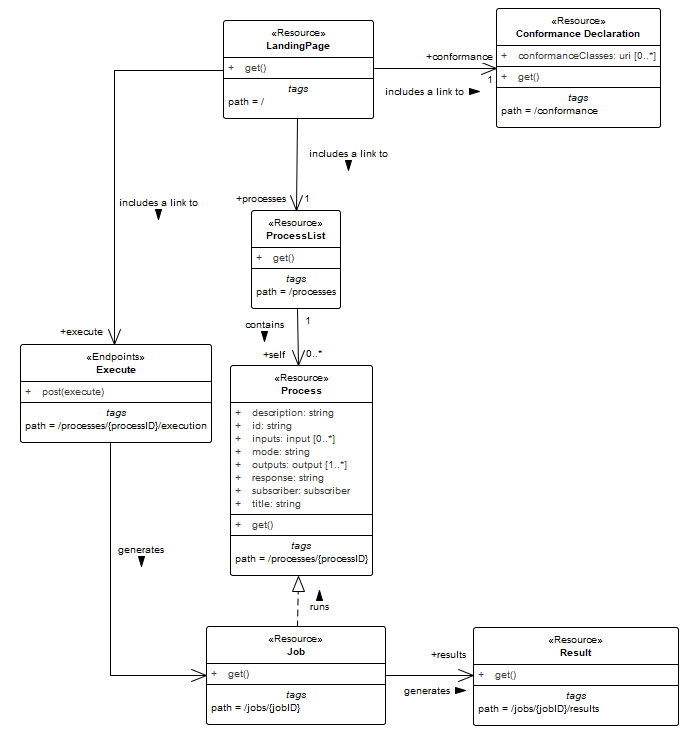

I. Abstract
The OGC API — Processes Standard is a resource-oriented API that allows for the execution of computing processes and the retrieval of metadata describing those processes. It is the modern, RESTful successor to the older Web Processing Service (WPS) 2.0 Interface Standard. It utilizes OpenAPI, JSON and modern web architectural patterns to make geospatial processing more accessible to web developers.
The key benefits of the Standard are:
- Developer friendly: By default, the Standard uses JSON and integrates easily with modern web frameworks and tools like Swagger/ReDoc.
- Scalable: The Standard is designed to work well with cloud-native architectures, microservices and containerized environments.
- Modular: The “building-blocks” approach allows servers to implement only what they need (e.g. a server might support process execution but not dynamic process deployment).
- Interoperable: Standardizing how parameters are passed to algorithms ensures that process execution can be triggered on any compliant server regardless of the underlying programming language (e.g. C, Python, Java, etc.)
Like other OGC APIs (such as Features or Records), OGC API Processes uses a common core for landing pages, conformance declarations, and API definitions. This consistency allows developers to use similar patterns across different types of geospatial web services.
II. Keywords
The following are keywords to be used by search engines and document catalogues.
ogcdoc, OGC document, OGC API, Geospatial API, processes, Web Processing Service, WPS, JSON, HTML, geoprocessing, API, OpenAPI
III. Preface
This Standard specifies how to “wrap” computational tasks into an executable process that can be invoked either locally or remotely via the Web using a standarized API. Examples of computational processes that can be supported by implementations of API Processes include raster algebra, geometry buffering, constructive area geometry, routing, imagery analysis, AI models, and others. Specifically, the OGC API — Processes Standard defines the requirements for a server that supports the execution of a process via the Web, how the inputs to that process can be specified and how the output(s) from that process can be retrieved.
IV. Security Considerations
The OGC API — Processes Standard makes use of different HTTP methods, namely GET, POST and DELETE. (Note that future extensions could introduce additional HTTP methods.)
HTTP methods can be classified as
- Safe, meaning that they do not alter the state of (a resource on) the server, and
- Idempotent, meaning that can be executed an indefinite number of times and deliver the same result.
Table 1 gives an overview of the classification of HTTP the methods used in this standard:
Table 1 — Classification of HTTP methods
| HTTP Method | Safe | Idempotent |
|---|---|---|
| GET | yes | yes |
| POST | no | no |
| DELETE | no | yes |
| Source RFC 7231, Hypertext Transfer Protocol (HTTP/1.1): Semantics and Content | ||
The following resources can be retrieved using the safe HTTP GET operation and can contain sensitive information:
Requirements class “Core”:
Requirements class “Job list”
The following API — Processes operations use unsafe HTTP methods, modify resources and therefore require special attention:
Requirements class “Core”:
- Execute, HTTP POST
Requirements class “Dismiss”
- Dismiss, HTTP DELETE
IV.A. Operations using HTTP GET
Most of the operations defined in the OGC API — Processes Standard use the safe HTTP GET operation. However, the resources that are returned by these operations contain information that could be used to exploit implementations of the Processes API. Table 2 gives an overview of the resources specified in this standard and what kind of information they contain.
Table 2 — Requirements class ‘Core’ — Overview of core operations and returned sensitive information
| Resource | Path | HTTP method | Information delivered |
|---|---|---|---|
| Landing page | / |
GET | General information about the service, links to API endpoints |
| Conformance classes | /conformance |
GET | List of conformance classes |
| Process list | /processes |
GET | Process identifiers, links to process descriptions |
| Process description | /processes/{processID} |
GET | Information about a process, e.g. inputs/outputs |
| Job status info | /jobs/{jobID} |
GET | Status info, links to results or exceptions |
| Job results | /jobs/{jobID}/results |
GET | Job results |
The following is more detailed information on the resources:
- The landing page can include links to endpoints, that are not defined in the API — Processes Standard, which can link to all the other resources that the containing API might offer.
- The list of conformance classes could contain information about extensions such as “dismiss” that pose additional security issues.
- The process list contains process identifiers and links to the respective process descriptions.
- The process description contains all necessary information needed to execute a process. This information can be used to send a JSON execute request to the Processes API endpoint that will pass initial sanity checks. For example, checks for the correct input/output identifiers. The ability to pass values to the server is vulnerable to injection attacks and issues discussed in section Clause IV.B can occur.
- The job status info contains not only status information, but for finished processes also links to results / exceptions. The results of a process execution are a valuable resource as well as the exceptions that could contain hints about why the execution has failed.
Table 3 — Requirements class ‘Job List’ — Overview of operations and returned sensitive information
| Resource | Path | HTTP method | Information delivered |
|---|---|---|---|
| Job list | /jobs |
GET | List of job IDs and status info, links to results or exceptions |
The retrieval of the job list of a process returns the job IDs and links to the respective job status.
IV.B. Execute operation
The execute operation uses HTTP POST to create new processing jobs (process executions). As discussed above, the HTTP POST method is not safe and its use poses the following threats if misused:
- The processing can require considerable server resources including, for example, computing time, network traffic (when accessing referenced inputs) or storage space for inputs and outputs.
- Malicious inputs can be encoded either inline in the execute request JSON or by reference by providing URIs to malicious input values in the execute request JSON.
Table 4 — Requirements class ‘Core’ — Overview of the execute operation and returned sensitive information
| Resource | Path | HTTP method | Information delivered |
|---|---|---|---|
| Job status info | /jobs |
POST | Job id, status info, (links to) results or exceptions |
The new job IDs that are returned in the status info document should be created in a non-guessable way, for example by using UUIDs. This will prevent random attempts to get job status information, results / exceptions or even cancel jobs / delete job artifacts.
| Recommendation 1 | |
|---|---|
| Identifier | /rec/job-list/access-control-job-list |
| Statement | Servers implementing the conformance class ‘Job List’ SHOULD have an access control in place for the |
IV.C. Dismiss operation
The optional dismiss extension uses the HTTP DELETE method and can be used to
- Cancel a running job, and
- Remove artifacts of a finished job.
Both usages pose security related issues. The cancellation of a running job (if not done on purpose) is wasting the resources that the job used prior to being cancelled. The same issue applies to the unwanted removal of artifacts of a finished job. If the dismiss extension is implemented, access control for the operation should be considered. The dismiss operation is idempotent, as it is specified by this Standard to be called using a specific job identifier. The first dismiss request to that identifier will result in a HTTP 200 (OK) status code. Continued dismiss requests using the same identifier result in a HTTP 410 (Gone) error code, but nothing else is changed on the server. A successful dismiss request returns a status info document containing the job identifier and the status “dismissed”. This status info document has no further security implications.
V. Submitting Organizations
The following organizations submitted this Document to the Open Geospatial Consortium (OGC):
- 52°North GmbH
- Hexagon
- CubeWerx Inc.
- Ecere Corporation
- Terradue Srl
- European Space Agency (ESA)
- Spacebel
- Technologies Luqia, Centre de Recherche Informatique de Montréal (CRIM)
VI. Submitters
All questions regarding this submission should be directed to the editor or the submitters:
Table — Table of submitters
| Name | Affiliation |
| Benjamin Pross (editor) | 52°North GmbH |
| Stan Tillman | Hexagon |
| Panagiotis (Peter) A. Vretanos (editor) | CubeWerx Inc. |
| Jérôme Jacovella-St-Louis | Ecere Corporation |
| Pedro Gonçalves | Terradue Srl |
| Gérald Fenoy | Gérald Fenoy (Individual Member) |
| Francis Charette-Migneault | Technologies Luqia, Centre de Recherche Informatique de Montréal (CRIM) |
| Cristiano Lopes | European Space Agency (ESA) |
| Christophe Noel | Spacebel |
VII. Acknowledgements
Requirements integrated within version 2.0 of this OGC API — Processes Standard was sourced from Part 3: Workflows, whose development was undertaken as part of GeoConnections 2020-2021 and 2025-2027 projects GNS20-21IFP02 (Modular OGC API Workflows) and GNS25-27IFP2 (Advancing and Implementing OGC Standards for GeoDataCubes, DGGSs, Data Stores for Digital Twins and Cartographic Symbology). Financial support provided by GeoConnections, a national collaborative initiative led by Natural Resources Canada. GeoConnections supports the modernization of the Canadian Geospatial Data Infrastructure (CGDI). The CGDI is the collection of geospatial data, standards, policies, applications, and governance that facilitate its access, use, integration, and preservation.
1. Scope
The OGC API — Processes Standard (aka “Processes API”) specifies requirements of a Web API that enables the execution of computing processes and the retrieval of metadata describing their purpose and functionality. Typically, these processes combine raster, vector, coverage and/or point cloud data with well-defined algorithms to produce new raster, vector, coverage and/or point cloud information.
2. Conformance
This Standard defines sixteen requirements / conformance classes.
The standardization targets of all conformance classes are “Web APIs.”
The main requirements class is:
- Core.
The Core specifies requirements that any implementation of the Processes API in a Web API deployment must implement.
The Core does not mandate a specific encoding or format for the representation of resources defined in this Standard. Rather, two requirements classes depend on the Core and specify representations for the resources specified in the Core in commonly used encodings for data on the Web:
Furthermore, the Core does not mandate any encoding or format for the formal definition of the Processes API. The OpenAPI specification is one option for defining the Processes API. As such, requirements classes have been specified for supporting OpenAPI and specifically OpenAPI 3.0 and 3.1, which depends on the requirements class Core:
Implementors of the Core requirements class may also decide to use other API definition representations in addition to, or instead of, an OpenAPI 3.0 or 3.1 definition. Examples for alternative API definitions: OpenAPI 2.0 (Swagger), future versions of the OpenAPI specification, an OWS Common 2.0 capabilities document, or WSDL.
NOTE: OpenAPI offers an open, powerful and vendor neutral description format. While the use of OpenAPI for the formal definition of the API is not mandatory, the requests/responses of the API specified in this Standard are defined using OpenAPI 3.1 schemas. See also the note regarding /req/core/landingpage-success
An implementation of the Core is intended to be a minimally useful API for the execution of processes in the geospatial domain. The Core is designed to map the operations of a Web Processing Service 2.0 instance.
The Core does not mandate the use of any specific process description language to specify the interface of a process. Instead, this Standard defines and recommends the use of the following conformance class:
This class defines an information model, encoded in JSON, which may be used to specify the interface of a process including the inputs that the process expects and the outputs that the process will generate.
Besides the standard input types one might expect for a process (e.g. integer, string, double, etc.) this Standard defines the following conformance class:
that allows OGC API collections to be specified as process inputs. The Collection Input class only supports collections that are local to the current deployment to be specified as process inputs. The following conformance class:
extends the collection input requirements to support specifying remote collections as process inputs.
By default, the Collection Input and Remote Collections conformance classes rely on the data server being accessed for input values to provide filtering capabilities to identify the subset of data to be fed to a process as input values. The following conformance class:
defines requirements that allow the processing server itself to perform filtering of input values in the cases where the value source server does not support the requested filtering operations (e.g. applying a CQL2 filter to data from a server that does not support CQL2 filtering).
In addition to supporting collections as process inputs, the following conformance class:
defines requirements that allow process execution to be triggered by requesting output data using an standard OGC API data access mechanisms. In this way, process execution becomes opaque, hidden behind a standard OGC data access API (e.g. features, coverages, etc.).
In the Core executing a process requires sending a JSON-encoded execution request to the server using the HTTP POST method. To support embedding process execution requests into other documents this Standard defines the:
conformance class which allows process inputs to be encoded as query parameters on a URL and process execution to be invoked using the HTTP GET method.
The standard request and response encoding used in this Standard is JSON. The standard media type for JSON is application/json which does not allow for the discrimination of one JSON schema from another. In order to resolve this issue the Standard supports content negotiation by profile and defines the profile query parameter in the:
conformance class. Using the profile query parameter JSON-encoded responses can be requested that conform to a specific JSON schemas.
Three additional conformance classes are specified that extend the basic functionality defined in the Core requirements class:
- Job list for requesting a list of jobs with optional filtering capabilities,
- Dismiss for cancelling active jobs or deleting completed jobs, and
- Callback for supporting a callback mechanism to get notification of completed jobs.
Additional capabilities such as support for transactions, extended job monitoring, etc., may be specified in future parts of the OGC API — Processes series or as vendor-specific extensions.
Conformance with this Standard SHALL be checked using all the relevant tests specified in Annex A (normative) of this document. The framework, concepts, and methodology for testing, and the criteria to be achieved to claim conformance are specified in the OGC Compliance Testing Policies and Procedures and the OGC Compliance Testing web site.
Table 5 — Conformance class URIs
3. Normative references
The following documents are referred to in the text in such a way that some or all of their content constitutes requirements of this document. For dated references, only the edition cited applies. For undated references, the latest edition of the referenced document (including any amendments) applies.
OpenAPI Initiative (OAI). OpenAPI Specification 3.0 [online]. 2020 [viewed 2024-11-04]. The latest patch version at the time of publication of this standard was 3.0.4, available at https://spec.openapis.org/oas/v3.0.4
OpenAPI Initiative (OAI). OpenAPI Specification 3.1 [online]. 2021 [viewed 2024-11-04]. The latest patch version at the time of publication of this standard was 3.1.1, available at https://spec.openapis.org/oas/v3.1.1
OGC 19-072, OGC API — Common — Part 1: Core, Version 1.0
Internet Engineering Task Force (IETF). RFC 6906: The ‘profile’ Link Relation Type [online]. Edited by E. Wilde. 2013]. Available at https://datatracker.ietf.org/doc/html/rfc6906.html
Internet Engineering Task Force (IETF). RFC 2818: HTTP Over TLS [online]. Edited by E. Rescorla. 2000 [viewed 2020-03-16]. Available at https://www.rfc-editor.org/rfc/rfc2818.html
Internet Engineering Task Force (IETF). RFC 3339: Date and Time on the Internet: Timestamps [online]. Edited by G. Klyne, C. Newman. 2002 [viewed 2020-03-16]. Available at https://www.rfc-editor.org/rfc/rfc3339.html
Internet Engineering Task Force (IETF). RFC 8288: Web Linking [online]. Edited by M. Nottingham. 2017 [viewed 2020-03-16]. Available at https://www.rfc-editor.org/rfc/rfc8288.html
Internet Engineering Task Force (IETF). RFC 9110: HTTP Semantics [online]. Edited by R. Fielding, J. Reschke, Y. Lafon, M. Nottingham. 2022 [viewed 2023-04-10]. Available at https://www.rfc-editor.org/rfc/rfc9110.html
Internet Engineering Task Force (IETF). RFC 9112: HTTP/1.1 [online]. Edited by R. Fielding, J. Reschke, M. Nottingham. 2022 [viewed 2023-04-10]. Available at https://www.rfc-editor.org/rfc/rfc9112.html
Internet Engineering Task Force (IETF). RFC 9457: Problem Details for HTTP APIs [online]. Edited by M. Nottingham, e. Wilde, S. Dalal. [viewed 2024-09-09]. Available at https://www.rfc-editor.org/rfc/rfc9457.html
Internet Engineering Task Force (IETF). RFC 9652: The Link-Template HTTP Header Field [online]. Edited by M. Nottingham. [viewed 2024-10-01]. Available at https://www.rfc-editor.org/rfc/rfc9652.html
WHATWG. HTML, Living Standard [online, viewed 2020-03-16]. Available at https://html.spec.whatwg.org/
OGC 08-131r3 — The Specification Model — A Standard for Modular Specifications
IETF RFC 2246. Transport Layer Security. https://tools.ietf.org/html/rfc2246
IETF RFC 2616. Hypertext Transfer Protocol — HTTP/1.1. https://tools.ietf.org/html/rfc2616
IETF RFC 2617. HTTP Authentication: Basic and Digest Access Authentication. https://tools.ietf.org/html/rfc2617
IETF RFC 2387, The MIME Multipart/Related Content-type. https://tools.ietf.org/html/rfc2387
IETF RFC 3986: Uniform Resource Identifier (URI): Generic Syntax. https://tools.ietf.org/html/rfc3986
IETF RFC 4646: Tags for Identifying Languages. https://tools.ietf.org/html/rfc4646
IETF RFC 7231: Hypertext Transfer Protocol (HTTP/1.1): Semantics and Content. https://tools.ietf.org/html/rfc7231
IETF RFC 7240: Prefer Header for HTTP. https://tools.ietf.org/html/rfc7240
IETF RFC 8259: The JavaScript Object Notation (JSON) Data Interchange Format. Available from: https://tools.ietf.org/html/rfc8259
JSON Schema Validation: A Vocabulary for Structural Validation of JSON. https://json-schema.org/draft/2020-12/json-schema-validation.html
W3C Dataset Exchange Working Group. The Profiles Vocabulary (W3C Note). World Wide Web Consortium. [online]. Edited by R. Atkinson, N. J. Car. 2019 [viewed 2026-09-17]. Available at https://www.w3.org/TR/2019/NOTE-dx-prof-20191218/
4. Terms, definitions and abbreviated terms
This document uses the terms defined in OGC Policy Directive 49, which is based on the ISO/IEC Directives, Part 2, Rules for the structure and drafting of International Standards. In particular, the word “shall” (not “must”) is the verb form used to indicate a requirement to be strictly followed to conform to this document and OGC documents do not use the equivalent phrases in the ISO/IEC Directives, Part 2.
This document also uses terms defined in the OGC Standard for Modular specifications (OGC 08-131r3), also known as the ‘ModSpec’. The definitions of terms such as standard, specification, requirement, and conformance test are provided in the ModSpec.
For the purposes of this document, the following additional terms and definitions apply.
4.1. Terms and definitions
4.1.1. collection; OGC API collection
(in the context of OGC APIs) A set of spatiotemporal data that may be available through one or more access mechanisms defined by OGC API standards. (OGC API — Common — Part 2: Geospatial Data)
4.1.2. collection description document
A resource accessible at the OGC API path /collections/{collectionId} that provides metadata about a collection.
4.1.3. dataset
A collection of data, published or curated by a single agent, and available for access or download in one or more representations. (Data Catalog Vocabulary (DCAT) — Version 2)
4.1.4. distribution
A specific representation of a dataset. A dataset might be available in multiple distributions that may differ in various ways, including natural language, media-type or format, schematic organization, temporal and spatial resolution, level of detail or profiles (which might specify any or all of the above). (Data Catalog Vocabulary (DCAT) — Version 2)
EXAMPLE: a downloadable file, an RSS feed or an API.
4.1.5. job
The (processing) job is a server-side object created by a processing service for a particular process execution. A job may be latent in the case of synchronous execution or explicit in the case of asynchronous execution. Since the client has only oblique access to a processing job, a Job ID is used to monitor and control a job.
4.1.6. JSON
JavaScript Object Notation is a lightweight text-based, data-interchange format.
4.1.7. link
The term “link” is commonly used as substitute for URL or URI. In this Standard, “link” refers to an element described by the schema for a link as shown at link.yaml. This is a JSON element containing properties such as “rel” (relation) and “href”. The value of the “href” property is an URI.
4.1.8. link header
HTTP Link header, as defined in RFC 8288 (Web Linking).
4.1.9. local collection
A collection that is local to the OGC API deployment currently being accessed.
4.1.10. OGC API data access mechanism
(in the context of OGC APIs) A mechanism defined by an OGC API Standard to access spatiotemporal data from a collection/
EXAMPLE: OGC API — Tiles — Part 1: Core, OGC API — Coverages — Part 1: Core, OGC API — Discrete Global Grid Systems — Part 1: Core, OGC API — Features — Part 1: Core, OGC API — Environmental Data Retrieval Standard, OGC API — Maps — Part 1: Core
4.1.11. OGC API deployment
An implementation of an OGC API Standard that is accessible to users and other system(s) typically through the Web.
4.1.12. process
A process p is a function that for each input returns a corresponding output
p : X → Y
where X denotes the domain of arguments x and Y denotes the co-domain of values y. In this Standard, process arguments are referred to as process inputs and result values are referred to as process outputs. Processes that have no process inputs represent value generators that deliver constant or random process outputs.
The term “process” is one of the most used terms both in the information and geosciences domain. If not stated otherwise, this Standard uses the term process as an umbrella term for any algorithm, calculation or model that either generates new data or transforms some input data into output data as defined in section 4.1 of the OGC WPS 2.0 standard.
4.1.13. process description
A specific documented account of steps, roles, and rules involved in a computing process, often described using standard like the OpenAPI Standard.
4.1.14. process execution
The execution of a process is an action that calculates the outputs of a given process for a given set of data inputs.
4.1.15. process input
Process inputs are the arguments of a process and refer to data provided to a process. Each process input is an identifiable item.
4.1.16. process offering
A process offering is an identifiable process that may be executed on a particular service instance. A process offering contains a process description as well as service-specific information about the supported execution protocols (e.g. synchronous and asynchronous execution).
4.1.17. process output
Process outputs are the selectable outputs of a process and refer to data results returned by the execution of that process. Each process output is an identifiable item.
4.1.18. process output (explicitly requested)
A process output that is defined in the description of a process and is explicitly specified using its identifier {outputID} in the “outputs” section of an execute request.
4.1.19. process output (implicitly requested)
A process output that is defined in the description of a process and is generated as a result of an execute request where the “outputs” parameter has been omitted. Omitting the “outputs” parameters of an execute request is equivalent to explicitly requesting all of the outputs defined in the process description
4.1.20. remote collections
A collection that is available from an external OGC API deployment different from the deployment whose process is being executed.
4.1.21. REST
The Representational State Transfer (REST) style is an abstraction of the architectural elements within a distributed hypermedia system. REST focuses on the roles of components, the constraints upon their interaction with other components, and their interpretation of significant data elements. It encompasses the fundamental constraints upon components, connectors, and data that define the basis of the Web architecture, and thus the essence of its behavior as a network-based application. An API that conforms to the REST architectural principles/constraints is called a RESTful API. (Source: OGC 18-088)
4.1.22. Value source server
A server that implements one or more data access mechanisms for accessing data from an OGC collection. The server acts as a source of values that are passed to a process being executed by an implementation of this Standard.
4.2. Abbreviated terms
- API
- Application Programming Interface
- CITE
- Compliance Interoperability & Testing Evaluation
- CRS
- Coordinate Reference System
- GML
- Geography Markup Language
- HTTP
- Hypertext Transfer Protocol
- ISO
- International Organization for Standardization
- JSON
- JavaScript Object Notation
- KVP
- Key-Value Pair
- MIME
- Multipurpose Internet Mail Extensions
- OGC
- Open Geospatial Consortium
- REST
- Representational State Transfer
- URI
- Uniform Resource Identifier
- URL
- Uniform Resource Locator
- WPS
- Web Processing Service
- XML
- Extensible Markup Language
5. Conventions
This section provides details and examples for any conventions used in the document. Examples of conventions are symbols, abbreviations, use of XML schema, or special notes regarding how to read the document.
5.1. Identifiers
The normative provisions in this Standard are denoted by the URI
https://www.opengis.net/spec/ogcapi-processes-1/1.0
All requirements, permission, recommendations, and conformance tests that appear in this document are denoted by partial URIs which are relative to this base.
5.2. APIs
This Standard is primarily concerned with defining the components of a Processes API. That is an API that when implemented enables the execution of computing processes, the retrieval of metadata describing their purpose and functionality and the retrieval of the results of the process execution. The reader, however, should be cognizant of the fact that an implementation of the Processes API as defined in this Standard may be embedded as part of a broader deployed API. For example, a single server may implement the Features and Processes APIs. In this case, common elements (such as the landing page) will contain components of both standards.
NOTE: When the term “API” is encountered in this Standard, the term is in most cases referring only to the components of a Processes API even though an implementation of the Processes API may be part of a broader API implementation.
5.3. Schemas
Schemas defined in this Standard are defined using the JSON Schema standard and are encoded using YAML which is a human-friendly data serialization language.
5.4. Link relations
To express relationships between resources, RFC 8288 (Web Linking) is used.
The following link relation types are used in this document.
-
service: Indicates a URI that can be used to retrieve a service document (e.g. a service landing page).
-
alternate: Refers to a substitute for the link’s context.
-
monitor: Identifies a resource that can use used to monitor changes in a resource.
-
service-desc: Identifies service description for the context that is primarily intended for consumption by machines.
- API definitions are considered service descriptions.
- In this Standard, OpenAPI 3.0 is used to provide a formal, machine readable, definition of the service but other API definition representations can also be used.
-
service-doc: Identifies service documentation for the context that is primarily intended for human consumption.
-
self: Conveys an identifier for the link’s context.
-
up: Refers to a parent document in a hierarchy of documents.
-
profile: Refers to a profile of a resource.
In addition, the following link relation types are used for which no applicable registered link relation type could be identified.
- https://www.opengis.net/def/rel/ogc/1.0/conformance: Refers to a resource that identifies the specifications that the link’s context conforms to.
- https://www.opengis.net/def/rel/ogc/1.0/exceptions: The target URI points to exceptions of a failed process.
- https://www.opengis.net/def/rel/ogc/1.0/execute: The target URI points to the execution endpoint of the server.
- https://www.opengis.net/def/rel/ogc/1.0/job-list: The target URI points to the list of jobs.
- https://www.opengis.net/def/rel/ogc/1.0/processes: The target URI points to the list of processes the API offers.
- https://www.opengis.net/def/rel/ogc/1.0/results: The target URI points to the results of a job.
Each resource representation includes an array of links. Implementations are free to add additional links for all resources provided by an implementation of the Processes API.
5.5. Use of HTTPS
For simplicity, this Standard only refers to the HTTPS protocol. This is not meant to exclude the use of HTTP. This is simply a shorthand notation for “HTTP or HTTPS”. In fact, most servers are expected to use HTTPS, not HTTP.
OGC Web API Standards do not prohibit the use of any valid HTTP option. However, implementers should be aware that optional capabilities which are not in common use could be an impediment to interoperability.
5.6. HTTP URIs
This Standard does not restrict the lexical space of URIs used in an implementation of the Processes API beyond the requirements of the HTTP and URI Syntax IETF RFCs. If URIs include reserved characters that are delimiters in the URI subcomponent, these must be percent-encoded. See Clause 2 of RFC 3986 (URI Syntax) for details.
6. Overview
6.1. Web Processing Service
The OGC Web Processing Service (WPS) is a legacy interface standard that defines how to offer and execute geospatial processing algorithms over the Web. The WPS standard is designed to wrap any type of GIS functionality—from a simple “buffer” tool to a complex climate model—into a Web service that can be discovered and invoked by any compliant client. The WPS standard is built around three mandatory “requests” (methods) that a client can send to a server. The methods are:
- GetCapabilites: Returns metadata about the service including a list of all available processes hosted by the server.
- DescribeProcess: Provides a detailed description of a specific process inc luding its required inputs and the output that it produces.
- Execute: Tells the server to run a specified process with the set of provi ded inputs.
The WPS uses a rigid RPC-style invocation method using a fixed endpoint with different values for the “request” parameter to invoke the different methods. It also relies heavily of XML and complex GML schemas.
The requirements in the OGC API – Processes Standard are designed to provide the same functionality as a WPS implementation but based on modern resource-oriented web architectural patterns.
6.2. Resources overview
The following table provides a summary of the resources and HTTP methods specified by this Standard:
Table 6 — Requirements class Core
| Resource description | Path | HTTP method | Parameter | Document reference |
|---|---|---|---|---|
| Landing page | / |
GET | N/A | Clause 7.2 |
| Conformance classes | /conformance |
GET | N/A | Clause 7.4 |
| Lists all available processes offered by the server | /processes |
GET | N/A | Clause 7.10 |
| Provides detailed matadata about a specific process | /processes/{processID} |
GET | processID (in path) | Clause 7.11 |
| The endpoint used to trigger execution of a process | /processes/{processID}/execution |
POST | processID (in path), Execute request (contained in body) | Clause 7.12 |
| List of all current and past processing jobs | /jobs |
GET | N/A | [sc_job_list] |
| Status of a specific job | /jobs/{jobID} |
GET | jobID (in path) | Clause 7.13 |
| The endpoint to retrieve all requested processing results | /jobs/{jobID}/results |
GET | jobID (in path) | Clause 7.14.2.4 |
| The endpoint to retrieve a specific processing result | /jobs/{jobID}/results/{outputID} |
GET | jobID (in path), outputID (in path) | Clause 7.14.2.2 |
| The endpoint to retrieve the Nth value of a specific processing result | /jobs/{jobID}/results/{outputID}/{N} |
GET | jobID (in path), outputID (in path), N (in path) | Clause 7.14.2.3 |
| Dismiss a job | /jobs/{jobID} |
DELETE | jobID (in path) | [sc_job-dismiss] |
6.3. Encodings
JSON is the encoding for requests and responses. The inputs and outputs of a process can be in any format. The formats are defined at the time of job creation and are fixed for the specific job.
Support for HTML is recommended as HTML is the core language of the World Wide Web. A server that supports HTML will support browsing with a web browser and will enable search engines to crawl and index the processes.
6.4. Execution modes
The standard supports two ways of execution a process:
- Synchronous: The client stays connected and waits for the server to finish the task and return the result immediately. This is ideal for quick calculations.
- Asynchronous: The server acknowledges the request and provides a job ID. The client polls the job status and retrieves the results later. This is necessary for long-running computations.
7. Requirements Class “Core”
The following section describes the Core requirements class.
7.1. Overview
A server that implements the OGC API — Processes Standard provides access to processes.
Each implementation of the OGC API — Processes Standard has a single LandingPage (path /) that provides links to:
- The
APIDefinition(no fixed path), - The
Conformancestatements (path/conformance), - The
processesmetadata (path/processes).
Note that additional requirements classes may introduce additional links for inclusion in the landing page.
The APIDefinition describes the capabilities of the server that can be used by clients to connect to the server or by development tools to support the implementation of servers and clients. Accessing the APIDefinition using HTTP GET returns a description of the API deployment that includes the Processes API defined in this Standard but may include the description of additional components that are part of a broader containing API.
Accessing Conformance using HTTP GET returns a list of URIs of conformance classes implemented by the server.
The list of processes contains a summary of each process offered by the OGC API — Processes implementation, including the link to a more detailed description of the process.
The process description contains information about inputs and outputs and a link to the execution-endpoint for the process.
A HTTP POST request to the execution-endpoint creates a new job. The inputs and outputs need to be passed in a JSON execute-request.
The URL for accessing status information is delivered in the HTTP header Location.
After a process is finished (status = successful/failed), the results/exceptions can be retrieved.

The OGC API — Processes Standard utilizes elements of the OGC API-Common Standard. Table 7 Identifies the API-Common Requirements Classes which are applicable to each section of this Processes API Standard.
Table 7 — Mapping API — Processes Sections to API-Common Requirements Classes
7.2. Retrieve the API landing page
The following section defines the requirements to retrieve an API landing page that contains links to Processes API resources but may also contain links to resources that are part of a broader, containing, API.
7.2.1. Operation
| Requirement 1 | |
|---|---|
| Identifier | /req/core/landingpage-op |
| Included in | Requirements class 1: https://www.opengis.net/spec/ogcapi-processes-1/2.0/req/core |
| Statement | The server SHALL support the HTTP GET operation at the path |
7.2.2. Response
| Requirement 2 | |
|---|---|
| Identifier | /req/core/landingpage-success |
| Included in | Requirements class 1: https://www.opengis.net/spec/ogcapi-processes-1/2.0/req/core |
| A | A successful execution of the operation SHALL be reported as a response with a HTTP status code |
| B | The content of that response SHALL be based upon the OpenAPI 3.0 schema landingPage.yaml and include at least links to the following resources:
|
NOTE 1: The term “…based upon the OpenAPI 3.0 schema…” used in requirements specified in this Standard means that OpenAPI 3.0 is used to define:
- All the required properties of the respective request/response schema,
- Any optional properties of the respective request/response schema.
Unless explicitly excluded, these OpenAPI schemas are extensible with additional properties not defined in the schema using the additionalProperties mechanism defined in the OpenAPI 3.0 specification.
type: object
required:
- links
properties:
title:
type: string
example: Example processing server
description:
type: string
example: Example server implementing the OGC API - Processes 1.0 Standard
attribution:
type: string
title: attribution for the Processes API
description: The `attribution` should be short and intended for presentation to a user, for example, in a corner of a map. Parts of the text can be links to other resources if additional information is needed. The string can include HTML markup.
links:
type: array
items:
$ref: 'link.yaml'
Listing 1 — Schema for the landing page
NOTE 2: This schema can also be obtained from landingPage.yaml.
type: object
required:
- href
properties:
href:
type: string
rel:
type: string
example: service
type:
type: string
example: application/json
hreflang:
type: string
example: en
title:
type: string
Listing 2 — Schema for a link
NOTE 3: This schema can also be obtained from link.yaml.
Example — Landing page response document
{
"links": [{
"href": "http://processing.example.org/oapi-p?f=application/json",
"rel": "self",
"type": "application/json",
"title": "This document"
},{
"href": "http://processing.example.org/oapi-p?f=text/html",
"rel": "alternate",
"type": "text/html",
"title": "This document as HTML"
},
{
"href": "http://processing.example.org/oapi-p/api?f=application/json",
"rel": "service-desc",
"type": "application/json",
"title": "API definition for this endpoint as JSON"
},
{
"href": "http://processing.example.org/oapi-p/api?f=text/html",
"rel": "service-desc",
"type": "text/html",
"title": "API definition for this endpoint as HTML"
},
{
"href": "http://processing.example.org/oapi-p/conformance",
"rel": "http://www.opengis.net/def/rel/ogc/1.0/conformance",
"type": "application/json",
"title": "OGC API - Processes conformance classes implemented by this server"
},
{
"href": "http://processing.example.org/oapi-p/processes",
"rel": "http://www.opengis.net/def/rel/ogc/1.0/processes",
"type": "application/json",
"title": "Metadata about the processes"
},
{
"href": "http://processing.example.org/oapi-p/jobs",
"rel": "http://www.opengis.net/def/rel/ogc/1.0/job-list",
"title": "The endpoint for job monitoring"
}]
}
7.2.3. Error situations
See [http_status_codes] for general guidance.
7.3. Retrieve an API definition
The following section defines the requirements to retrieve an API definition. This API may only implement components of the Processes API defined in this Standard but may define the implementation of a broader API deployment into which the Processes API is embedded.
7.3.1. Operation
Every implementation of OGC API — Processes must provide metadata that describes the functional capabilities of the server instance that the API definition provides access to. In this document, this is known as the “API definition”. This definition is used by developers to understand the functionality provided by the API endpoint, so software clients can connect to the server, or by development tools to support the implementation of servers and clients.
| Requirement 3 | |
|---|---|
| Identifier | /req/core/api-definition-op |
| Included in | Requirements class 1: https://www.opengis.net/spec/ogcapi-processes-1/2.0/req/core |
| Statement | The URIs of all API definitions referenced from the landing page SHALL support the HTTP GET method. |
Note that multiple API definition formats can be supported.
7.3.2. Response
| Requirement 4 | |
|---|---|
| Identifier | /req/core/api-definition-success |
| Included in | Requirements class 1: https://www.opengis.net/spec/ogcapi-processes-1/2.0/req/core |
| A | A successful execution of the operation to get the API definition document SHALL be reported as a response with a HTTP status code |
| B | The server SHALL return an API definition document. |
| Recommendation 2 | |
|---|---|
| Identifier | /rec/core/api-definition-oas |
| A | If the API definition document is defined using the OpenAPI Specification 3.0, the document SHOULD conform to the OpenAPI Specification 3.0 requirements class. |
| B | If the API definition document is defined using the OpenAPI Specification 3.1, the document SHOULD conform to the OpenAPI Specification 3.1 requirements class. |
If multiple API definition formats are supported by a server, use content negotiation to select the desired representation.
NOTE: Common approaches include:
- Standard HTTP content negotiation using the HTTP header
Accept; - An additional path for each encoding of each resource (this can be expressed, for example, using format specific suffixes like “.html”);
- An additional query parameter (for example, “accept” or “f”) that overrides the Accept header of the HTTP request.
The API definition document describes the API implementation instance. In other words, there is no need to include the /api operation in the API definition itself.
The idea is that any implementation of OGC API — Processes can be used by developers that are familiar with the API definition language(s) supported by the server. For example, if an OpenAPI definition is used, it should be possible to create the skeleton of a working client using the OpenAPI definition alone.
7.3.3. Error situations
See [http_status_codes] for general guidance.
7.4. Declaration of conformance classes
7.4.1. Operation
To support “generic” clients for accessing servers implementing OGC API — Processes in general — and not “just” a specific API / server, the server must declare the requirements classes it implements and conforms to.
| Requirement 5 | |
|---|---|
| Identifier | /req/core/conformance-op |
| Included in | Requirements class 1: https://www.opengis.net/spec/ogcapi-processes-1/2.0/req/core |
| Statement | The server SHALL support the HTTP GET operation at the path |
7.4.2. Response
| Requirement 6 | |
|---|---|
| Identifier | /req/core/conformance-success |
| Included in | Requirements class 1: https://www.opengis.net/spec/ogcapi-processes-1/2.0/req/core |
| A | A successful execution of the operation SHALL be reported as a response with a HTTP status code |
| B | The content of that response SHALL be based upon the OpenAPI 3.0 schema req-classes.yaml and list all OGC API — Processes conformance classes that an implementation of the Processes API conforms to. |
type: object
required:
- conformsTo
properties:
conformsTo:
type: array
items:
type: string
example: "http://www.opengis.net/spec/ogcapi-processes-1/1.0/conf/core"
Listing 3 — Schema for the list of requirements classes
NOTE: This schema can also be obtained from confClasses.yaml.
Example — Requirements class response document
This example response in JSON is for a server that supports OpenAPI 3.0 for the API definition and HTML and JSON as encodings.
{
"conformsTo": [
"http://www.opengis.net/spec/ogcapi-processes-1/2.0/conf/core",
"http://www.opengis.net/spec/ogcapi-processes-1/2.0/conf/json",
"http://www.opengis.net/spec/ogcapi-processes-1/2.0/conf/html",
"http://www.opengis.net/spec/ogcapi-processes-1/2.0/conf/oas30"
]
}
7.4.3. Error situations
See [http_status_codes] for general guidance.
7.5. Use of HTTP 1.1
| Requirement 7 | |
|---|---|
| Identifier | /req/core/http |
| Included in | Requirements class 1: https://www.opengis.net/spec/ogcapi-processes-1/2.0/req/core |
| A | The server SHALL conform to HTTP 1.1. |
| B | If the server supports HTTPS, the server SHALL also conform to HTTP over TLS. |
This includes the correct use of status codes, headers. etc.
| Recommendation 3 | |
|---|---|
| Identifier | /rec/core/http-head |
| Statement | The server SHOULD support the HTTP 1.1 HEAD method for all resources that support the GET method. |
Supporting the HEAD method, in addition to GET, is simple and can provide useful information such as the size of a potential response without needing to transmit the entire content of the response beforehand.
| Recommendation 4 | |
|---|---|
| Identifier | /rec/core/content-length |
| Statement | The server SHOULD include the HTTP 1.1 |
Servers implementing Cross-Origin Resource Sharing (CORS) will also implement the OPTIONS method.
7.5.1. HTTP status codes
Table 8 lists the main HTTP status codes that clients should be prepared to receive.
This includes, for example, support for specific security schemes or URI redirection.
In addition, other error situations may occur in the transport layer outside of the server.
Table 8 — Typical HTTP status codes
| Status code | Description |
|---|---|
200 |
A successful request. |
201 |
The request was successful and one or more new resources have been created. |
204 |
The request was successful but did not generate any content. |
400 |
The server cannot or will not process the request due to an apparent client error. For example, a query parameter had an incorrect value. |
401 |
The request requires user authentication. The response includes aWWW-Authenticateheader field containing a challenge applicable to the requested resource. |
403 |
The server understood the request but is refusing to fulfill it. While status code401indicates missing or bad authentication, status code 403indicates that authentication is not the issue, but the client is not authorized to perform the requested operation on the resource. |
404 |
The requested resource does not exist on the server. For example, a path parameter had an incorrect value. |
405 |
The request method is not supported. For example, a POST request was submitted, but the resource only supports GET requests. |
406 |
TheAcceptheader submitted in the request did not support any of the media types supported by the server for the requested resource. |
410 |
The target resource is no longer available at the origin server. |
429 |
The user has sent too many requests in a given amount of time (“rate limiting”). |
500 |
An internal error occurred in the server. |
501 |
The server does not support the functionality required to fulfill the request. |
More specific guidance is provided for each resource, where applicable.
When a server encounters an error in the processing of a request, it may wish to include information in addition to the status code in the response. Since Web API interactions are often machine-to-machine, a machine-readable report would be preferred. RFC 9457 addresses this need by providing “Problem Details” response schemas for both JSON and XML.
| Recommendation 5 | |
|---|---|
| Identifier | /rec/core/problem-details |
| A | A server SHOULD include a “Problem Details” report in an error response in accordance with RFC 9457. |
| B | A server SHOULD employ the |
| C | A server SHOULD provide additional |
7.6. Support for cross-origin requests
If the content is located on another host that the webpage (“same-origin policy”) access to content from that HTML page is by default prohibited for security reasons. Cross-origin resource sharing is a mechanism that allows restricted resources on a web page to be requested from another domain outside the domain from which the first resource was served. A typical example is a web-application accessing processes and data from multiple servers.
| Recommendation 6 | |
|---|---|
| Identifier | /rec/core/cross-origin |
| Statement | If the server is intended to be accessed from the browser, cross-origin requests SHOULD be supported. Note that support can also be added in a proxy layer on top of the server. |
Two common mechanisms to support cross-origin requests are:
| Recommendation 7 | |
|---|---|
| Identifier | /rec/core/access-control-expose-headers |
| Statement | If the server is intended to be accessed from the browser and if Cross-origin resource sharing is supported, the |
| Recommendation 8 | |
|---|---|
| Identifier | /rec/core/html |
| Statement | To support browsing, an implementation of OGC API — Processes with a web browser and to enable search engines to crawl and index a process, implementations SHOULD consider supporting an HTML encoding. |
7.7. Content negotiation by profile
The use of generic media types such as application/json makes it difficult to request or identify different flavors or profiles of a resource. For example, the media type application/json could be used to describe an OGC process description document as well as an OpenEO process description document.
Therefore, a mechanism for requesting a profile of a resource would be useful. Although there is a new HTTP header, Accept-Profile, that is to be defined in an upcoming Internet-Draft, there is currently no standardized way to request a profile of a resource. Existing standards, however, do provide mechanisms for specifying profile information in HTTP headers. Specifically (see Content Negotiation by Profile) profiles of a resource may be requested by:
- Using the
profileparameter if the media type includes provisions for such a parameter (e.g.application/ld+json profile=http://www.w3.org/ns/json-ld#context), - Using the
Accept-Profileheader if the intended media type does not include provisions for aprofileparameter and can, thus, not be specified in theAcceptheader, - Using the
profileparameter with the HTTPPreferheader, - Specified the
Linkheader withrel="profile"in the request headers.
This Standard also defines a query parameter profile, that may be used with an HTTP GET request to specify one or more profiles of a resource that are to be retrieved.
When a content negotiation by profile is performed using one of the above mechanisms, the following response headers should be returned:
- The
Preference-Appliedheader with theprofileparameter should be returned if content negotiation was performed using thePreferheader, - The
Content-Typeheader withprofileparameter should be returned if content negotiation was performed using theAcceptheader with a media type includingprofileprovisions.
In all cases of content negotiation by profile, one or more Link (rel="profile") headers indicating the profiles applied should be returned in the response if there is a corresponding URI identifier defined for the profile(s) that can be included as the href of the link.
NOTE 1: This is not always the case (e.g. image/tiff; application=geotiff; profile=cloud-optimized). In such cases, the other the other headers (Preference-Applied and Content-Type) containing a profile parameter may be relevant.
NOTE 2: A set of profile URIs for JSON content defined in this Standard can be found in the Profile identifiers table.
7.8. Limit query parameter
Several resources defined in this Standard (see Retrieve a process list, Retrieve a job list) use the limit query parameter to control the maximum number of results that are presented in a response page.
- The client can request a limit it is interested in.
- The server likely has a default value for the limit, and a maximum limit.
- If the server has any more results available than it returns (the number it returns is less than or equal to the requested/default/maximum limit) then the server will include a link to the next set of results.
As an example, using the default/maximum values of 10/1000 from the OpenAPI fragment in requirement /req/core/pl-limit-definition or /req/job-list/limit-definition:
- If the client asks for 10 results, the client will get 0 to 10 (as requested) and if there are more, a
nextlink; - If the client does not specify a limit, the client will get 0 to 10 (default) and if there are more, a
nextlink; - If the client asks for 5000 results, the client might get up to 1000 results (server-limited) and if there are more, a
nextlink; - If the client follows the next link from the previous response, the client might get up to 1000 additional results and if there are more, a
nextlink.
This Standard provides requirements and recommendations about links in general and the next link in particular at the appropriate resource end points.
This Standard does not mandate any specific implementation approach for the next links.
An implementation of the Processes API could use opaque links that are managed by the server. It is up to the server to determine how long these links can be dereferenced. Clients should be prepared to receive a 404 or 410 response.
Another implementation approach is to use an implementation-specific parameter that specifies the index within the result set from which the server begins presenting results in the response, like offset or the startIndex parameter that was used in WFS 2.0.
If all selected results have been returned, an implementation of the Processes API will note return a next link, and as such the server knows for certain that there are no further results to be presented. However, in some cases, the server may not be aware that it has already returned all selected results. For example, if the request states limit=10 and the query to the backend returns exactly 10 results. Unless the total number results is also computed the server may not know if there are more results or not (in most cases there will be more results). However such a computation may be too costly. The server will then prudently add the next link, and if there are no more results, dereferencing the next link will return an empty results list and no next link. This behavior is consistent with the statements above.
Clients should not assume that paging is safe against changes to the dataset being accessed while a client iterates through next links. If a server provides opaque links, these could be safe and maintain the state during the original request. Using a parameter for the start index, however, will not be safe.
This Standard also has recommendations about including a prev link at the appropriate resource end points. Providing prev links supports navigating back and forth between pages, but depending on the implementation approach, it may be too complex to implement.
7.9. Link headers
| Recommendation 9 | |
|---|---|
| Identifier | /rec/core/link-header |
| A | Links included in payload of responses SHOULD also be included as |
| B | This recommendation does not apply if there are a large number of links included in a response or the details of a link are not known when the HTTP headers of the response are created. |
7.10. Retrieve a process list
The following section defines the requirements to retrieve the available processes offered by an implementation of the Processes API.
It should be noted that the number of processes exposed via the Processes API may be very different from the number of processes offered by a back-end system upon which the Processes API is implemented.
7.10.1. Operation
7.10.1.1. Process list
| Requirement 8 | |
|---|---|
| Identifier | /req/core/process-list-op |
| Included in | Requirements class 1: https://www.opengis.net/spec/ogcapi-processes-1/2.0/req/core |
| Statement | The server SHALL support the HTTP GET operation at the path |
7.10.1.2. Query parameter limit
| Requirement 9 | |
|---|---|
| Identifier | /req/core/pl-limit-definition |
| Included in | Requirements class 1: https://www.opengis.net/spec/ogcapi-processes-1/2.0/req/core |
| Statement | The operation SHALL support a parameter |
| Requirement 10 | |
|---|---|
| Identifier | /req/core/pl-limit-response |
| Included in | Requirements class 1: https://www.opengis.net/spec/ogcapi-processes-1/2.0/req/core |
| A | The response SHALL not contain more process summaries than specified by the optional |
| B | If the API definition specifies a maximum value for |
7.10.2. Response
| Requirement 11 | |
|---|---|
| Identifier | /req/core/process-list-success |
| Included in | Requirements class 1: https://www.opengis.net/spec/ogcapi-processes-1/2.0/req/core |
| A | A successful execution of the process operation SHALL be reported as a response with a HTTP status code 200. |
| B | The content of that response SHALL be based upon the OpenAPI 3.0 schema processList.yaml. |
type: object
required:
- processes
- links
properties:
processes:
type: array
items:
$ref: "processSummary.yaml"
links:
type: array
items:
$ref: "link.yaml"
Listing 5 — Schema for the process list
NOTE 1: This schema can also be obtained from processList.yaml.
allOf:
- $ref: "descriptionType.yaml"
- type: object
required:
- id
- version
properties:
id:
type: string
version:
type: string
jobControlOptions:
type: array
items:
$ref: "jobControlOptions.yaml"
links:
type: array
items:
$ref: "link.yaml"
Listing 6 — Schema for a process summary
NOTE 2: This schema can also be obtained from processSummary.yaml.
(see also: descriptionType.yaml).
type: string
enum:
- sync-execute
- async-execute
- dismiss
Listing 7 — Schema for the job control options
NOTE 3: This schema can also be obtained from jobControlOptions.yaml.
The number of process summaries returned depends on the server and the parameter limit.
See the discussion about the limit query parameter in the Limit query parameter section.
| Requirement 12 | |
|---|---|
| Identifier | /req/core/pl-links |
| Included in | Requirements class 1: https://www.opengis.net/spec/ogcapi-processes-1/2.0/req/core |
| Statement | A
|
| Requirement 13 | |
|---|---|
| Identifier | /req/core/process-summary-links |
| Included in | Requirements class 1: https://www.opengis.net/spec/ogcapi-processes-1/2.0/req/core |
| A | Each process summary SHALL include a link (relation: |
| B | Each process summary SHALL include one or more links (relation: |
See the discussion about the next links in the Limit query parameter section.
| Recommendation 10 | |
|---|---|
| Identifier | /rec/core/next-1 |
| Statement | If more processes summaries have been selected than returned in the response, a |
| Recommendation 11 | |
|---|---|
| Identifier | /rec/core/next-2 |
| Statement | Dereferencing a next page link (relation: |
| Recommendation 12 | |
|---|---|
| Identifier | /rec/core/next-3 |
| Statement | The number of process summaries in a response to dereferencing a next page link (relation: |
See the discussion about the prev link in the Limit query parameter section.
Example 1 — A HTTP GET request for retrieving the list of offered processes encoded as JSON.
GET /processes HTTP/1.1
Host: processing.example.org
Example 2 — A Process list encoded as JSON.
{
"processes": [
{
"id": "EchoProcess",
"title": "EchoProcess",
"version": "1.0.0",
"jobControlOptions": [
"async-execute",
"sync-execute"
],
"links": [
{
"href": "https://processing.example.org/oapi-p/processes/EchoProcess",
"type": "application/json",
"rel": "self",
"title": "process description"
}
]
}
],
"links": [
{
"href": "https://processing.example.org/oapi-p/processes?f=json",
"rel": "self",
"type": "application/json"
},
{
"href": "https://processing.example.org/oapi-p/processes?f=html",
"rel": "alternate",
"type": "text/html"
}
]
}
7.10.3. Error situations
See [http_status_codes] for general guidance.
7.11. Retrieve a process description
The following section defines the requirements to retrieve metadata about a process.
7.11.1. Operation
| Requirement 14 | |
|---|---|
| Identifier | /req/core/process-description-op |
| Included in | Requirements class 1: https://www.opengis.net/spec/ogcapi-processes-1/2.0/req/core |
| Statement | The server SHALL support the HTTP GET operation at the path |
7.11.2. Response
| Requirement 15 | |
|---|---|
| Identifier | /req/core/process-description-success |
| Included in | Requirements class 1: https://www.opengis.net/spec/ogcapi-processes-1/2.0/req/core |
| A | A successful execution of the operation SHALL be reported as a response with a HTTP status code 200. |
| B | The content of the response SHALL be a process description. |
The Core does not mandate the use of a specific process description to specify the interface of a process. That said, the Core requirements class makes the following recommendation:
| Recommendation 13 | |
|---|---|
| Identifier | /rec/core/ogc-process-description |
| Statement | Implementations SHOULD consider supporting the OGC process description. |
| Recommendation 14 | |
|---|---|
| Identifier | /rec/core/header-profile-link |
| Conditions | An OGC process description is requested. |
| A | The server SHOULD include a profile link (href: |
7.11.3. Error situations
See [http_status_codes] for general guidance.
| Requirement 16 | |
|---|---|
| Identifier | /req/core/process-exception-no-such-process |
| Included in | Requirements class 1: https://www.opengis.net/spec/ogcapi-processes-1/2.0/req/core |
| A | If the operation is executed using an invalid process identifier, the response SHALL be HTTP status code 404. |
| B | The content of that response SHALL be based upon the OpenAPI 3.0 schema exception.yaml. |
| C | The |
7.12. Execute a process
This section describes the requirements for executing a process.
Depending on the description of the process and the negotiated process execution mode, process execution may result in the creation of a job resource.
7.12.1. Operation
| Requirement 17 | |
|---|---|
| Identifier | /req/core/process-execute-op |
| Included in | Requirements class 1: https://www.opengis.net/spec/ogcapi-processes-1/2.0/req/core |
| Statement | The server SHALL support the HTTP POST operation at the path |
7.12.2. Request body
7.12.2.1. Content schema
| Requirement 18 | |
|---|---|
| Identifier | /req/core/process-execute-request |
| Included in | Requirements class 1: https://www.opengis.net/spec/ogcapi-processes-1/2.0/req/core |
| Statement | The content of a request the request body SHALL be based upon the OpenAPI 3.0 schema execute.yaml. |
allOf:
- type: object
properties:
process:
type: string
format: uri
description: The URI to the description of the process that should be executed.
- $ref: "responseCollection.yaml"
- $ref: "executeBase.yaml"
Listing 8 — Schema for execute
type: object
properties:
inputs:
additionalProperties:
$ref: "values.yaml"
outputs:
additionalProperties:
$ref: "outputSelection.yaml"
subscriber:
$ref: "subscriber.yaml"
Listing 9 — Schema for execute base parameters
NOTE 1: This schema can also be obtained from execute.yaml.
oneOf:
- $ref: "valueNoObject.yaml"
- $ref: "qualifiedValue.yaml"
- $ref: "link.yaml"
Listing 10 — Schema for an in-line or referenced process input value
NOTE 2: This schema can also be obtained from inlineOrRefValue.yaml.
(see also: valueNoObject.yaml, qualifiedValue.yaml, link.yaml)
type: object
properties:
format:
$ref: "format.yaml"
Listing 11 — Schema for a process output
NOTE 3: This schema can also be obtained from output.yaml.
# anything included here is automatically inherited by the qualified value, collection and output selection 'format'
allOf:
- type: object
properties:
mediaType:
type: string
encoding:
type: string
schema:
oneOf:
- type: string
format: url
- type: object
- $ref: "dataClasses.yaml"
Listing 12 — Schema for a format qualifier
NOTE 4: This schema can also be obtained from format.yaml.
7.12.2.2. Execution mode
A process may be executed synchronously or asynchronously.
Which mode a server responds with is a function of the job control options specified in the process description and the presence or absence of the HTTP Prefer header (IETF RFC 7240).
| Requirement 19 | |
|---|---|
| Identifier | /req/core/process-execute-default-execution-mode |
| Included in | Requirements class 1: https://www.opengis.net/spec/ogcapi-processes-1/2.0/req/core |
| Conditions | The execute request is not accompanied with the HTTP |
| A | The server SHALL respond asynchronously if, according to the job control options in the process description, the process can only be executed asynchronously. |
| B | The server SHALL respond synchronously if, according to the job control options in the process description, the process can only be executed synchronously. |
| C | The server SHALL respond synchronously if, according to the job control options in the process description, the process can be executed in either mode. |
| Requirement 20 | |
|---|---|
| Identifier | /req/core/process-execute-auto-execution-mode |
| Included in | Requirements class 1: https://www.opengis.net/spec/ogcapi-processes-1/2.0/req/core |
| Conditions | The execute request is accompanied with the HTTP |
| A | The server SHALL respond asynchronously if, according to the job control options in the process description, the process can only be executed asynchronously. |
| B | The server SHALL respond synchronously if, according to the job control options in the process description, the process can only be executed synchronously. |
| C | The server SHALL respond, at its discretion, either synchronously or asynchronously if, according to the job control options in the process description, the process can be executed in either mode. |
| Recommendation 15 | |
|---|---|
| Identifier | /rec/core/process-execute-honor-prefer |
| Conditions | The job control options (parameter |
| A | If an execute request is accompanied with the HTTP |
| B | If an execute request is accompanied with the HTTP |
NOTE: A client that accompanies an execute request with the HTTP Prefer header asserting a respond-async preference and/or a wait preference SHOULD be prepared to receive either an asynchronous or a synchronous response.
| Recommendation 16 | |
|---|---|
| Identifier | /rec/core/process-execute-preference-applied |
| Statement | If an execute request is accompanied with the HTTP |
7.12.2.3. Process inputs
7.12.2.3.1. Overview
Each process input is a name/value pair that appears in the inputs section of an execute request as show in the following example:
{
"inputs": {
"inputName1": "<input value 1>",
"inputName2": "<input value 2>",
...
}
}
Listing 13
The actual name of each input is its identifier as specified by the input’s definition in the process description.
7.12.2.3.2. Input values
As shown in inlineOrRefValue.yaml, a process input value that is specified in-line in an execute request can be:
-
an array,
-
a binary value,
-
or a bounding box.
NOTE 1: See also Clause 8.1.
Simple literal values:
A simple literal value can be a string, number, integer or Boolean.
anyOf:
- type: string
- type: number
- type: integer
- type: boolean
- type: array
items: { }
- $ref: "binaryValue.yaml"
- $ref: "bbox.yaml"
- $ref: "collectionValue.yaml"
Listing 14 — Schema for a simple literal value
NOTE 2: This schema can also be obtained from valueNoObject.yaml.
(see also: binaryValue.yaml, bbox.yaml)
Example 1 — Simple literal value examples.
A string literal:
{"stringInput": "String value"}
A date string:
{"dateInput": "2021-05-24T20:40:13-05:00"}
A number:
{"numberInput": 3.14159}
An integer:
{"integerInput": 10}
A Boolean:
{"booleanInput": true}
Array of values:
Array elements, as per inlineOrRefValue.yaml, can be:
- simple literals,
- embedded arrays,
- qualified values,
- binary values,
- bounding box values,
- or references to values using links.
| Requirement 21 | |
|---|---|
| Identifier | /req/core/process-execute-input-array |
| Included in | Requirements class 1: https://www.opengis.net/spec/ogcapi-processes-1/2.0/req/core |
| Conditions | The process input is defined in the process description as having a maximum cardinality of greater than one (maxOccurs>1). |
| A | The server SHALL support process input values encoded as an array. |
| B | This SHALL be true even if the input consists of a single value. |
Example 2 — Array value examples.
An array of simple values:
{
"arrayOfSimpleValues": [1, 2, 4, 10, 7]
}
An array with a single simple value:
{
"arrayOfSimpleValues": ["a"]
}
An array of arrays of simple values:
{
"arrayOfArrays": [[1,2,3,4], ["a","b","c","d"]]
}
An array of objects values:
{
"arrayOfQualifiedValues": [
{
"value": {
"measurement": 10.3,
"uom": "m",
"reference": "https://ucum.org/ucum-essence.xml"
}
},
{
"value": {
"measurement": 10.5,
"uom": "m",
"reference": "https://ucum.org/ucum-essence.xml"
}
},
{
"value": {
"measurement": 10.9,
"uom": "m",
"reference": "https://ucum.org/ucum-essence.xml"
}
},
...
]
}
NOTE 3: In an execute request, as per requirement /req/core/process-execute-input-inline-object, object values must be encoded as qualified values.
Qualified values:
A qualified value is a value that can be optionally qualified with a format parameter.
Qualified values can be used to encode process input values that, according to their definition in the process description, can be of multiple media types. The format parameter is used to identify the specific media type being provided as the process input.
Qualified values can also be used to encode object-valued process inputs in order to avoid ambiguity with the built-in value schemas defined in this Standard (i.e. bbox.yaml, link.yaml or qualifiedValue.yaml itself).
The actual value in a qualified value object is specified using the value key. The value of the value key is an instance of value.yaml.
allOf:
- $ref: "format.yaml"
- $ref: "dataClasses.yaml"
- type: object
required:
- value
properties:
value:
$ref: "value.yaml"
Listing 15 — Schema for a qualified value
NOTE 4: This schema can also be obtained from qualifiedValue.yaml.
(see also: format.yaml)
anyOf:
- $ref: "valueNoObject.yaml"
- type: object
Listing 16 — Schema of a process input value
NOTE 5: This schema can also be obtained from value.yaml.
(see also: valueNoObject.yaml)
| Requirement 22 | |
|---|---|
| Identifier | /req/core/process-execute-input-inline-object |
| Included in | Requirements class 1: https://www.opengis.net/spec/ogcapi-processes-1/2.0/req/core |
| Conditions |
|
| A | The server SHALL support process input values encoded as qualified values (qualifiedValue.yaml). |
| B | The value of the |
| Requirement 23 | |
|---|---|
| Identifier | /req/core/process-execute-input-multiple-types |
| Included in | Requirements class 1: https://www.opengis.net/spec/ogcapi-processes-1/2.0/req/core |
| Conditions |
|
| A | The server SHALL support process input values encoded as qualified values (qualifiedValue.yaml). |
| B | The value of the |
| C | The |
Example 3 — Qualified value examples.
An example of a complex process input value.
"complexObjectInput": {
"value": {
"property1": "value1",
"property2": "value2",
"property3": "value3"
}
}
In this second example, the property geometryInput has a cardinality of greater than 1 and value instances can be one of a number of enumerated media types. The schema of geometryInput from the OGC process description for the process might be:
{
"geometryInput": {
"title": "Geometry input",
"description": "This is an example of a geometry input. In this case the geometry can be expressed as a GML or GeoJSON geometry.",
"minOccurs": 2,
"maxOccurs": 5,
"schema": {
"oneOf": [
{
"type": "string",
"contentMediaType": "application/gml+xml; version=3.2",
"contentSchema": "https://schemas.opengis.net/gml/3.2.1/geometryBasic2d.xsd"
},
{
"$ref": "https://schemas.opengis.net/ogcapi/features/part1/1.0/openapi/schemas/geometryGeoJSON.json"
}
]
}
}
}
and an instance of this process input in an execute request might be:
{
"geometryInputs": [
{
"value": "<gml:Polygon gml:id=\"GID1\" srsName=\"urn:ogc:def:crs:OGC::CRS84\"><gml:exterior><gml:LinearRing><gml:posList>-77.024519 38.810529 -77.024635 38.810973 -77.024704 38.810962 -77.024776 38.811239 -77.024957 38.81121 -77.024905 38.811012 -77.024905 38.811012 -77.024865 38.810857 -77.025024 38.810832 -77.025071 38.811012 -77.025203 38.810992 -77.02506 38.810444 -77.024519 38.810529</gml:posList></gml:LinearRing></gml:exterior></gml:Polygon>",
"mediaType": "application/gml+xml; version=3.2"
},
{
"value": {
"type": "Polygon",
"coordinates": [[[ -176.5814819, -44.10896301 ],
[ -176.5818024, -44.10964584 ],
[ -176.5844116, -44.11236572 ],
[ -176.5935974, -44.11021805 ],
[ -176.5973511, -44.10743332 ],
[ -176.5950928, -44.10562134 ],
[ -176.5858459, -44.1043396 ],
[ -176.5811157, -44.10667801 ],
[ -176.5814819, -44.10896301 ]]]
},
"mediaType": "application/geo+json"
}
]
}
In this case, the mediaType parameter is used to indicate the specific type of geometry being passed as input in each case: GML Polygon for the first element of the array and GeoJSON Polygon for the second element.
Binary values:
In some cases, for example to pass through firewalls, binary input values need to be encoded in-line in an execute request as a string.
type: string
# contentEncoding: base64
Listing 17 — Schema for an in-line binary value
NOTE 6: This schema can also be obtained from binaryValue.yaml.
| Requirement 24 | |
|---|---|
| Identifier | /req/core/process-execute-input-inline-binary |
| Included in | Requirements class 1: https://www.opengis.net/spec/ogcapi-processes-1/2.0/req/core |
| Conditions |
|
| A | The service SHALL support binary values encoded as base64-encoded strings. |
Example 4 — Binary value examples.
Below is an example of an image process input whose media type is defined in the process description. The schema definition for this process input might be:
{
"schema": {
"type": "string",
"contentEncoding": "binary",
"contentMediaType": "image/tiff; application=geotiff"
}
}
and an example instance value in an execute request might be:
{
"imageInput": "R0lGODdhNAHCAfcAAAcHDD+Gs4sLDQpDaqGFdaHE54dJPEoECUlGRteKgcdITgokG4hoVkpY\ngNzHwKKkqOLm7RRjlEgpHU9iZ44lHQYqVdmki6doVmhHOMOIeJG20HiDjCcKBglIeadISrso\nJGooFNbN2d2qr8aljyklHwQJQkdvkWaKxIdrb442LidLeGhMTp6LkeP1+Kh3aiUuVAoUHmlu\ngkcwNYdZRmkJDYGcsDFokElVYyk1NsWWhLEPDtmQldrUyoyFhrjo+Nna5d+4tMGstspoXgc4\n...qgu7sSu7qbtCs2u7t6u6rLsrp4u7veu76eO6vyu8w0u8xWu8x4u8yau8shu8y+u8zwu90Su9\n00u91Wu914u92au928u9whsQADs="
}
NOTE 7: Even though the schema indicates that the input type is binary, when the input value is encoded in-line in an execute request, as per requirement /req/core/process-execute-input-inline-binary, the binary value is encoded as base64-encoded string.
In this second example, the image input can be one of a number of value types denoted in JSON Schema by the use of the oneOf[] construct. An example schema for this process input might be:
{
"schema": {
"oneOf": [
{
"type": "string",
"contentEncoding": "binary",
"contentMediaType": "image/tiff; application=geotiff"
},
{
"type": "string",
"contentEncoding": "binary",
"contentMediaType": "image/jp2"
}
]
}
}
and a JPEG2000 instance example in an execute request might be:
{
"value": "VBORw0KGgoAAAANSUhEUgAABvwAAAa4CAYAAABMB35kAAABhGlDQ1BJQ0MgcHJvZmlsZQAA\nKJF9kT1Iw0AcxV9TpSL1A+xQxCFDdbIgKuKoVShChVArtOpgcumH0KQhSXFxFFwLDn4sVh1c\nnHV1cBUEwQ8QNzcnRRcp8X9JoUWMB8f9eHfvcfcOEOplplkdY4Cm22Y6mRCzuRUx9IogouhH\n ... \nj3Z5mX7/PCPVRJV92rpHK24xcJrzk20+tkeYlCPqcZNO3Lpni1OJWatPCcmgGDEqx7Om6lfa\nppM4k4BTe9+bsn3L9/9/yWhA0PwQGW8ipCZsnZt9lsdrYEM8z/M8z/M8z/M8z/M8z/MzLWY1\nAAAACUlEQVQ871H6P6JI+TxS5Wn2AAAAAElFTkSuQmCC",
"mediaType": "image/jp2"
}
Bounding box values:
A process input value instance can be a bounding box.
| Requirement 25 | |
|---|---|
| Identifier | /req/core/process-execute-input-inline-bbox |
| Included in | Requirements class 1: https://www.opengis.net/spec/ogcapi-processes-1/2.0/req/core |
| Statement | Servers SHALL support process input values that conform to the bbox.yaml schema. |
type: object
required:
- bbox
properties:
bbox:
type: array
oneOf:
- minItems: 4
maxItems: 4
- minItems: 6
maxItems: 6
items:
type: number
crs:
$ref: "bbox-def-crs.yaml"
Listing 18 — Schema for a bounding box value
NOTE 8: This schema can also be obtained from bbox.yaml.
This schema is meant to be a template for defining bounding box process inputs. If the specified default and enum are suitable for the client’s requirements, then this file can be referenced directly in the process description.
NOTE 9: The crs property is defined using an anyOf of either an enumeration or a generic URI string to allow execute requests making use of a CRS other than CRS84 and CRS84h. These may be supported by the server to validate against the canonical OGC schema.
Input validation
Process inputs in an execute request and the corresponding process input definition in the process description have a validation relationship. That is to say, the schema of a process input definition from the process description can be used to validate the component of the corresponding process input value in an execute request that is an instance of value.yaml.
Consider a process input named complexObjectInput with the following definition from an OGC process description:
{
"complexObjectInput": {
"title": "Complex Object Input Example",
"description": "This is an example of a complex object input.",
"schema": {
"type": "object",
"required": [
"property1",
"property5"
],
"properties": {
"property1": {
"type": "string"
},
"property2": {
"type": "string",
"format": "uri"
},
"property3": {
"type": "number"
},
"property4": {
"type": "string",
"format": "date-time"
},
"property5": {
"type": "boolean"
}
}
}
}
}
and the following instance in an execute request:
{
"inputs": [
...
"complexObjectInput": {
"value": {
"property1": "value1",
"property2": "value2",
"property3": "value5"
}
},
...
]
}
The process input value in this execute request is an instance of a qualified value.
For the purposes of validation, the server needs to only validate the component of the qualified value that is an instance of value.yaml against the schema fragment from the OGC process description. Specifically, the validation target is:
{
"property1": "value1",
"property2": "value2",
"property3": "value5"
}
NOTE 10: This example makes use of an OGC process description. However, any other process description vocabulary may be used and applied, for the purpose of validation, in a similar manner.
| Requirement 26 | |
|---|---|
| Identifier | /req/core/process-execute-input-validation |
| Included in | Requirements class 1: https://www.opengis.net/spec/ogcapi-processes-1/2.0/req/core |
| A | For process input values specified in-line in an execute request, the server SHALL validate each component of a process input value that is an instance of inputValue.yaml using the definition of the corresponding input from the process description. |
| B | For process input values specified by reference in an execute request, the server SHALL resolve the value and then validate it as if the value had been specified in-line in the execute request (i.e. as per requirement A). |
7.12.2.4. Process outputs
Overview:
Each process output is a named object that appears in the outputs section of an execute request. The name of each output is its identifier as specified by the output’s definition in the process description.
Omitted outputs:
| Requirement 27 | |
|---|---|
| Identifier | /req/core/process-execute-omitted-outputs |
| Included in | Requirements class 1: https://www.opengis.net/spec/ogcapi-processes-1/2.0/req/core |
| Conditions |
|
| A | Omitting the “outputs” parameter in the execute request SHALL be equivalent to explicitly requesting all of the defined outputs of the process. |
Empty outputs:
| Requirement 28 | |
|---|---|
| Identifier | /req/core/process-execute-empty-outputs |
| Included in | Requirements class 1: https://www.opengis.net/spec/ogcapi-processes-1/2.0/req/core |
| Conditions |
|
| A | An empty “outputs” parameter in the execute request SHALL indicate that the execution of a process should occur without generating a response body. |
Output value format:
A process output can be defined in the process description as being of one or more media types. In cases where a specific output can be presented in one of a number of media types, the format parameter in the execute request can be used to indicate the format that should be used to present the process output value in the server’s response.
Output value size:
Since a priori knowledge of the size of any given output is generally not known, hints can be provided to the server to prevent the inadvertent transmission of large volumes of output.
Return preferences signal to a server how output values should be transmitted based on the size of the output and any accompanying return preferences as define defined in IETF RFC 7240.
| Recommendation 17 | |
|---|---|
| Identifier | /rec/core/process-execute-honor-prefer-return |
| Statement | If an execute request is accompanied with the HTTP See requirements: See recommendations:
|
NOTE: A client that accompanies an execute request with the HTTP Prefer header asserting a return preference SHOULD be prepared to receive output values either:
- in-line in the response,
- or by reference via a hyperlink in the response.
7.12.3. Example
Example — An execute request.
{
"inputs": {
"stringInput": "Value2",
"measureInput": {
"value": {
"measurement": 10.3,
"uom": "m",
"reference": "https://ucum.org/ucum-essence.xml"
}
},
"dateInput": "2021-03-06T07:21:00",
"doubleInput": 3.14159,
"arrayInput": [1,2,3,4,5,6],
"complexObjectInput": {
"value": {
"property1": "value1",
"property2": "value2",
"property5": true
}
},
"geometryInput": [
{
"value": "<gml:Polygon gml:id=\"GID1\" srsName=\"urn:ogc:def:crs:OGC::CRS84\"><gml:exterior><gml:LinearRing><gml:posList>-77.024519 38.810529 -77.024635 38.810973 -77.024704 38.810962 -77.024776 38.811239 -77.024957 38.81121 -77.024905 38.811012 -77.024905 38.811012 -77.024865 38.810857 -77.025024 38.810832 -77.025071 38.811012 -77.025203 38.810992 -77.02506 38.810444 -77.024519 38.810529</gml:posList></gml:LinearRing></gml:exterior></gml:Polygon>",
"mediaType": "application/gml+xml; version=3.2"
},
{
"value": {
"type": "Polygon",
"coordinates": [[[ -176.5814819, -44.10896301 ],
[ -176.5818024, -44.10964584 ],
[ -176.5844116, -44.11236572 ],
[ -176.5935974, -44.11021805 ],
[ -176.5973511, -44.10743332 ],
[ -176.5950928, -44.10562134 ],
[ -176.5858459, -44.1043396 ],
[ -176.5811157, -44.10667801 ],
[ -176.5814819, -44.10896301 ]]]
}
}
],
"boundingBoxInput": {
"bbox": [ 51.9, 7, 52, 7.1 ],
"crs": "http://www.opengis.net/def/crs/OGC/1.3/CRS84"
},
"imagesInput": [
{
"href": "https://www.someserver.com/ogcapi/Daraa/collections/Daraa_DTED/styles/Topographic/coverage?...",
"type": "image/tiff; application=geotiff"
},
{
"value": "VBORw0KGgoAAAANSUhEUgAABvwAAAa4CAYAAABMB35kAAABhGlDQ1BJQ0MgcHJvZmlsZQAA\nKJF9kT1Iw0AcxV9TpSL1A+xQxCFDdbIgKuKoVShChVArtOpgcumH0KQhSXFxFFwLDn4sVh1c\nnHV1cBUEwQ8QNzcnRRcp8X9JoUWMB8f9eHfvcfcOEOplplkdY4Cm22Y6mRCzuRUx9IogouhH\n ... \nj3Z5mX7/PCPVRJV92rpHK24xcJrzk20+tkeYlCPqcZNO3Lpni1OJWatPCcmgGDEqx7Om6lfa\nppM4k4BTe9+bsn3L9/9/yWhA0PwQGW8ipCZsnZt9lsdrYEM8z/M8z/M8z/M8z/M8z/MzLWY1\nAAAACUlEQVQ871H6P6JI+TxS5Wn2AAAAAElFTkSuQmCC",
"encoding": "base64",
"mediaType": "image/jp2"
}
],
"featureCollectionInput": {
"value": "<?xml version=\"1.0\" encoding=\"UTF-8\"?><FeatureCollection xmlns=\"http://schemas.myserver.com/namespaces/null\" xmlns:gml=\"http://www.opengis.net/gml/3.2\" xmlns:xsi=\"http://www.w3.org/2001/XMLSchema-instance\" xsi:schemaLocation=\"http://schemas.myserver.com/namespaces/null https://www.pvretano.com/myserver/ogcapi/daraa/schema?f=GML32&collectionids=TransportationGroundCrv http://www.opengis.net/gml/3.2 http://schemas.opengis.net/schemas/gml/3.2.1/gml.xsd\">...",
"mediaType": "application/gml+xml; version=3.2"
}
},
"outputs": {
"stringOutput": { },
"measureOutput": { },
"dateOutput": { },
"doubleOutput": { },
"arrayOutput": { },
"complexObjectOutput": { },
"geometryOutput": { },
"boundingBoxOutput": { },
"imageOutput": {
"format": { "mediaType": "image/tiff; application=geotiff" }
},
"featureCollectionOutput": { }
}
}
7.12.4. Response
7.12.4.1. Overview
The way a server responds to execute request is determined by the following parameters:
- The negotiated execution mode (synchronous or asynchronous),
- The number of outputs requested,
- The negotiated content type for the response (via the HTTP Accept header),
- Any negotiated client preferences (via the HTTP Prefer header).
The following table maps the possible responses based on the combinations of these execute parameters. The column headers denote:
- Negotiated execute mode: see Clause 7.12.2.2
- Requested # outputs: The number of requested (whether implicitly or explicitly) outputs in the execute request
- Return preference: The negotiated return preferences
- Response HTTP code: The HTTP status code that the server should generate in this context.
- Response headers: Any required HTTP headers that the server must include in this context.
- Response media type: The value of the HTTP
Content-Typeheader that the server should generate in this context. - Response body: A description of the content of the response body in this context.
- Req./Rec./Perm.: The corresponding requirements/recommendations/permission as per this Standard.
Table 9 — Execute responses based on number of requested outputs, request HTTP headers and the size of output values.
| Negotiated execute mode | Requested # outputs3 | Output cardinality | Return preference (Prefer header) | Response HTTP code | Response headers | Response media type (Content-Type header) | Response body | Req./Rec./Perm. |
|---|---|---|---|---|---|---|---|---|
| sync | 1 | maxOccurs=1 | n/a | 200 | as negotiated | requested process output | See requirement: /req/core/process-execute-sync-one | |
| 1 | maxOccurs>1 | none | 200 | application/json13 | values.yaml | See Note 9.,Note 10 | ||
| minimal | See Note 9.,Note 11 | |||||||
| representation | See Note 9.,Note 12 | |||||||
| N | n/a | none | 200 | application/json4 | results.yaml | See Note 5.,Note 6 | ||
| minimal | See Note 5.,Note 7 | |||||||
| representation | See Note 5.,Note 8 | |||||||
| async | n/a | n/a | n/a | 201 | Location to newly created job | application/json | statusInfo.yaml | See Response for asynchronous process execution |
NOTE 1:
NOTE 2: The above table shows all possible combinations of execute parameters that are specified by this Standard. Not all these combinations need to be implemented by a server conforming to this Standard. For example, a server that only offers processes that can be executed synchronously does not need to implement any of the asynchronous requirements. NOTE 3: A process output may be requested explicitly or implicitly in an execute request . NOTE 4:
NOTE 5:
NOTE 6:
NOTE 7:
NOTE 8:
NOTE 9:
NOTE 10:
NOTE 11:
NOTE 12:
NOTE 13:
| ||||||||
type: object
additionalProperties:
$ref: "values.yaml"
Listing 19 — Schema for processing results presented as a JSON document
NOTE 1: This schema can also be obtained from results.yaml.
The results.yaml schema defines a map using the respective output identifier as the key. The value of an output can be returned as an in-line value or by reference.
anyOf:
- $ref: "inlineOrRefValue.yaml"
- type: array
items:
$ref: "inlineOrRefValue.yaml"
Listing 20 — Schema for processing values presented as a JSON document
NOTE 2: This schema can also be obtained from values.yaml.
7.12.4.2. Response requesting a single processing output (maxOccurs=1)
When a process is executed synchronously and a single processing output is generated (whether requested implicitly or explicitly in the execute request) the following requirements and recommendations apply:
| Requirement 29 | |
|---|---|
| Identifier | /req/core/process-execute-sync-one |
| Included in | Requirements class 1: https://www.opengis.net/spec/ogcapi-processes-1/2.0/req/core |
| Conditions |
|
| A | A successful execution of the operation SHALL be reported with a response with a HTTP status code |
| B | The media type of the response SHALL be as negotiated as per the HTTP content negotiation rules. |
| C | The content of response body SHALL be the requested process output value in the negotiated output format. |
| Requirement 30 | |
|---|---|
| Identifier | /req/core/process-execute-sync-one-default-content |
| Included in | Requirements class 1: https://www.opengis.net/spec/ogcapi-processes-1/2.0/req/core |
| Conditions |
|
| A | The media type of the response SHALL be the default media type for the requested processes output as specified in the process description. |
| B | The content of response body SHALL be the requested process output value in the default output format. |
NOTE 1: For servers that support the OGC Process Description conformance class see requirements /req/ogc-process-description/output-def and /req/ogc-process-description/output-multiple-types for determining the default format for a process output.
NOTE 2: The size of a response may be determined without actually transmitting the entire response by using the HTTP HEAD method to retrieve the Content-Length header.
Example
In the example below the process “compute-spectral-index” has a single output also named “spectral-index-output”. This processes is implemented to store the result file in some Web-accessible location. In this example the process is executed synchronously and the single output is requested. According to Table 9, in this case, the server should respond with the output image generated by the process. The server can either stream the response from its Web-accessible location to the client OR the server can use a HTTP 303 redirect to point to the result as shown in the example.
Example — HTTP 303 redirect example.
Client Server
| |
| POST /processes/compute-spectral-index/execution HTTP/1.1 |
| Content-Type: application/json |
| Link: <https://www.opengis.net/def/profile/OGC/0/ogc-execute-reque|
| st>; rel="profile" |
| |
| { |
| "inputs": { |
| "spectral-index": "ndvi", |
| "input-image": { |
| "href": ".../sentinel-s1-l1c/S1A_EW_GRDM_1SDH_20240201T00375|
| 4_20240201T003859_052358_0654C4_86EE/measurement/ew|
| -hh.tiff", |
| "type": "image/tiff; application=geotiff" |
| } |
| }, |
| "outputs": { |
| "spectral-index-output": { |
| } |
| } |
| } |
|-------------------------------------------------------------------->|
| |
| HTTP/1.1 303 See Other |
| Location: https://www.example.com/resp/job-01/spectral-index.tiff |
| Content-Type: image/tiff; application=geotiff |
| Content-Length: 13101963 |
|<--------------------------------------------------------------------|
7.12.4.3. Response requesting a single processing output with multiple values (maxOccurs>1)
In the case where the cardinality of a processing output is defined as being greater than one (i.e. maxOccurs>1), possibly resulting in multiple values being generate by the processing server for that output, the following requirements, recommendations and permissions applies:
| Requirement 31 | |
|---|---|
| Identifier | /req/core/process-execute-sync-one-multi-valued-json |
| Included in | Requirements class 1: https://www.opengis.net/spec/ogcapi-processes-1/2.0/req/core |
| Conditions |
|
| A | The server SHALL respond with an HTTP status code of 200. |
| B | The media type of the response SHALL be |
| C | The response HTTP headers SHALL include a |
| D | The content of response SHALL conform to the values.yaml schema. |
| Recommendation 18 | |
|---|---|
| Identifier | /rec/core/process-execute-sync-one-multi-valued-json-prefer-none |
| Conditions |
|
| A | If the server deems that the size of the output values is small, that value SHOULD be included in-line in the response. |
| B | If the server deems that the size of an output values is large, that value SHOULD be included by reference via hyperlink in the response. |
| Recommendation 19 | |
|---|---|
| Identifier | /rec/core/process-execute-sync-one-multi-valued-json-prefer-minimal |
| Conditions |
|
| A | If the server deems that the size of an output value is small, that value SHOULD be included in-line in the response. |
| B | If the server deems that the size of an output value is large, that value SHOULD be included by reference via hyperlink in the response. |
| Recommendation 20 | |
|---|---|
| Identifier | /rec/core/process-execute-sync-one-multi-valued-json-prefer-representation |
| Conditions |
|
| A | Each requested output value SHOULD be included in-line in the response. |
7.12.4.4. Response requesting multiple processing outputs
When a process is executed synchronously and multiple processing outputs are generated (whether requested implicitly or explicitly in the execute request) the following requirements, recommendations and permissions apply:
| Requirement 32 | |
|---|---|
| Identifier | /req/core/process-execute-sync-many-json |
| Included in | Requirements class 1: https://www.opengis.net/spec/ogcapi-processes-1/2.0/req/core |
| Conditions |
|
| A | The server SHALL respond with an HTTP status code of 200. |
| B | The media type of the response SHALL be |
| C | The response HTTP headers SHALL include a |
| D | The content of response SHALL conform to the results.yaml schema. |
| Recommendation 21 | |
|---|---|
| Identifier | /rec/core/process-execute-sync-many-json-prefer-none |
| Conditions |
|
| A | If the server deems that the size of an output value is small, that value SHOULD be included in-line in the response. |
| B | If the server deems that the size of an output value is large, that value SHOULD be included by reference via hyperlink in the response. |
| Recommendation 22 | |
|---|---|
| Identifier | /rec/core/process-execute-sync-many-json-prefer-minimal |
| Conditions |
|
| A | If the server deems that the size of an output value is small, that value SHOULD be included in-line in the response. |
| B | If the server deems that the size of an output value is large, that value SHOULD be included by reference via hyperlink in the response. |
| Recommendation 23 | |
|---|---|
| Identifier | /rec/core/process-execute-sync-many-json-prefer-representation |
| Conditions |
|
| A | Each requested output value SHOULD be included in-line in the response. |
7.12.4.5. Response when the “outputs” parameter is omitted
An omitted “outputs” parameter signals to the process to execute its logic and generate all outputs defined in the process description.
| Requirement 33 | |
|---|---|
| Identifier | /req/core/process-execute-success-sync-outputs-omitted |
| Included in | Requirements class 1: https://www.opengis.net/spec/ogcapi-processes-1/2.0/req/core |
| Conditions |
|
| A | The server’s response SHALL include all outputs defined for the process in its process description. |
See also: /req/core/process-execute-omitted-outputs.
7.12.4.6. Response when the “outputs” parameter is empty
An “outputs” parameter whose value is empty (i.e. “outputs”: {}) signals to a process to execute its logic but to not generate a response body.
| Requirement 34 | |
|---|---|
| Identifier | /req/core/process-execute-success-sync-empty-outputs |
| Included in | Requirements class 1: https://www.opengis.net/spec/ogcapi-processes-1/2.0/req/core |
| Conditions |
|
| A | A successful execution of the operation SHALL be reported with a response with a HTTP status code 204. |
| B | The response body SHALL be empty. |
See also: /req/core/process-execute-omitted-outputs.
7.12.4.7. Job creation on synchronous process execution
This Standard does not mandate that servers create a job as a result of executing a process synchronously. However, the following permission is given:
For servers that implement this permission and do create a job as a result of synchronous execution of a process, the following requirement applies:
| Requirement 35 | |
|---|---|
| Identifier | /req/core/job-results-success-sync |
| Included in | Requirements class 1: https://www.opengis.net/spec/ogcapi-processes-1/2.0/req/core |
| Conditions |
|
| A | A successful execution of the operation SHALL include an HTTP |
| B | When resolving the |
| C | When resolving the |
The job reference in the header can then be used to re-fetch the results of the original synchronous execution.
7.12.4.8. Response for asynchronous process execution
In the case of asynchronous execution, the following requirement applies:
| Requirement 36 | |
|---|---|
| Identifier | /req/core/process-execute-success-async |
| Included in | Requirements class 1: https://www.opengis.net/spec/ogcapi-processes-1/2.0/req/core |
| Conditions | The negotiated execution mode is asynchronous. |
| A | A successful execution of the operation SHALL be reported as a response with a HTTP status code 201. |
| B | The header of the response SHALL return the HTTP |
| C | The content of the response SHALL be based upon the JSON Schema fragment statusInfo.yaml. |
| Requirement 37 | |
|---|---|
| Identifier | /req/core/process-execute-success-async-outputs |
| Included in | Requirements class 1: https://www.opengis.net/spec/ogcapi-processes-1/2.0/req/core |
| Conditions |
|
| A | The server SHALL produce and make available for retrieval all of the outputs specified in the execute request. |
| B | The server SHALL respond with an HTTP status code of |
| Requirement 38 | |
|---|---|
| Identifier | /req/core/process-execute-success-async-outputs-Nth |
| Included in | Requirements class 1: https://www.opengis.net/spec/ogcapi-processes-1/2.0/req/core |
| Conditions |
|
| A | The server SHALL produce and make available for retrieval all the values of the output with identifier |
| B | The server SHALL respond with an HTTP status code of |
| C | The server SHALL respond with an HTTP status code of |
NOTE: The number of retrievable values for an output can be determined by reading the OGC-Output-Values-Count header. Using the HTTP HEAD method can obtain this information without incurring the cost of transmitting the actual output value.
| Requirement 39 | |
|---|---|
| Identifier | /req/core/process-execute-success-async-outputs-empty |
| Included in | Requirements class 1: https://www.opengis.net/spec/ogcapi-processes-1/2.0/req/core |
| Conditions |
|
| A | The server SHALL asynchronously execute the process but SHALL not produce any retrievable outputs. |
| B | Attempting to retrieve any of the process’s defined outputs via the |
| Requirement 40 | |
|---|---|
| Identifier | /req/core/process-execute-success-async-outputs-omitted |
| Included in | Requirements class 1: https://www.opengis.net/spec/ogcapi-processes-1/2.0/req/core |
| Conditions |
|
| A | The server SHALL produce and make available for retrieval all of the outputs defined for the process in its process description. |
7.12.5. Error situations
See [http_status_codes] for general guidance.
If the process with the specified identifier does not exist on the server, see requirement /req/core/process-exception/no-such-process.
7.13. Retrieve status information about a job
The following section describes the requirements to retrieve information about the status of a job.
7.13.1. Operation
| Requirement 41 | |
|---|---|
| Identifier | /req/core/job-op |
| Included in | Requirements class 1: https://www.opengis.net/spec/ogcapi-processes-1/2.0/req/core |
| Statement | The server SHALL support the HTTP GET operation at the path |
7.13.2. Response
| Requirement 42 | |
|---|---|
| Identifier | /req/core/job-success |
| Included in | Requirements class 1: https://www.opengis.net/spec/ogcapi-processes-1/2.0/req/core |
| A | A successful execution of the operation SHALL be reported as a response with a HTTP status code 200. |
| B | The content of that response SHALL be based upon the OpenAPI 3.0 schema statusInfo.yaml. |
| C | The value of the |
| D | The value of the |
| E | The value of the |
| F | The value of the |
| G | The value of the |
NOTE 1: In the case where a server supports multiple processing APIs (e.g. OGC API — Processes, OpenEO, etc.) the profile mechanism may be use by non-OGC clients to interact with the /jobs endpoint and request status information in a schema that they recognize. Profile URIs for content defined in this Standard can be found in the Profile identifiers table.
allOf:
- $ref: "descriptionType.yaml"
- type: object
required:
- id
- status
- processingEntityType
properties:
id:
type: string
processID:
type: string
format: uri
processingEntityType:
allOf:
- description: |-
The type of entity that created the job and is doing the processing.
This includes all the data access apis listed in "apis.yaml" plus
the processing APIs of OGC API Processes and OpenEO.
- $ref: "processingEntityType.yaml"
profileEntityType:
allOf:
- description: |-
The type of entity requesting this status information. This may
be differernt than the processing entity. For example, the
processing entity may be OGC API Processes but the status
information is requested via the OpenEO API.
- $ref: "processingEntityType.yaml"
request:
oneOf:
- type: string
- type: object
- $ref: "link.yaml"
status:
$ref: "statusCode.yaml"
message:
type: string
exception:
$ref: "../common-core/exception.yaml"
created:
type: string
format: date-time
started:
type: string
format: date-time
finished:
type: string
format: date-time
updated:
type: string
format: date-time
progress:
type: integer
minimum: 0
maximum: 100
links:
type: array
items:
$ref: "link.yaml"
Listing 21 — Schema for status info
NOTE 2: This schema can also be obtained from statusInfo.yaml.
type: string
nullable: false
enum:
- accepted
- running
- successful
- failed
- dismissed
Listing 22 — Schema for status codes
NOTE 3: This schema can also be obtained from statusCode.yaml.
The job status information includes several optional date-time fields that represent milestones in the life cycle of a job. The following are recommended for servers that decide to populate some or all these date-time fields:
| Recommendation 24 | |
|---|---|
| Identifier | /rec/core/job-status |
| A | Servers SHOULD, via the |
| B | Servers SHOULD set the value of the |
| C | Servers SHOULD set the value of the |
| D | Servers SHOULD set the value of the |
| E | Servers SHOULD set the value of the |
| F | Whenever the |
| G | Servers SHOULD, if the information can be determined, set the value of the |
NOTE 4: Once a job has finished execution and is no longer consuming compute resources, the duration of processing can be computed as finished-started. The updated field, however, may still be revised as the system continues processing outputs, storing results, releasing compute resources, etc.
| Recommendation 25 | |
|---|---|
| Identifier | /rec/core/job-links |
| A | Servers SHOULD include a link ( |
| B | Servers SHOULD, when available, include a link ( |
| C | Servers SHOULD include one or more links ( |
Example 1 — A HTTP GET request for retrieving status information about a job encoded as JSON.
GET /jobs/81574318-1eb1-4d7c-af61-4b3fbcf33c4f HTTP/1.1
Host: processing.example.org
Example 2 — A job encoded as JSON.
{
"jobID" : "81574318-1eb1-4d7c-af61-4b3fbcf33c4f",
"status": "accepted",
"message": "Process started",
"progress": 0,
"created": "2021-05-04T10:13:00+05:00",
"links": [
{
"href": "http://processing.example.org/oapi-p/jobs/81574318-1eb1-4d7c-af61-4b3fbcf33c4f",
"rel": "self",
"type": "application/json",
"title": "this document"
}
]
}
7.13.3. Error situations
See [http_status_codes] for general guidance.
If the process with the specified identifier does not exist on the server, see requirement /req/core/process-exception/no-such-process.
| Requirement 43 | |
|---|---|
| Identifier | /req/core/job-exception-no-such-job |
| Included in | Requirements class 1: https://www.opengis.net/spec/ogcapi-processes-1/2.0/req/core |
| A | If the operation is executed using an invalid job identifier, the response SHALL have HTTP status code 404. |
| B | The content of that response SHALL be based upon the OpenAPI 3.0 schema exception.yaml. |
| C | The |
7.14. Retrieve job results
7.14.1. Operation
7.14.1.1. All processing results
| Requirement 44 | |
|---|---|
| Identifier | /req/core/job-results-op |
| Included in | Requirements class 1: https://www.opengis.net/spec/ogcapi-processes-1/2.0/req/core |
| Statement | The server SHALL support the HTTP GET operation at the path |
| Requirement 45 | |
|---|---|
| Identifier | /req/core/job-results-param-outputs |
| Included in | Requirements class 1: https://www.opengis.net/spec/ogcapi-processes-1/2.0/req/core |
| Statement | The operation at the |
| Requirement 46 | |
|---|---|
| Identifier | /req/core/job-results-param-outputs-response |
| Included in | Requirements class 1: https://www.opengis.net/spec/ogcapi-processes-1/2.0/req/core |
| Statement | Only the outputs with identifiers specified using the optional |
| Requirement 47 | |
|---|---|
| Identifier | /req/core/job-results-profile |
| Label | /req/core/job-results-profile |
| Included in | Requirements class 1: https://www.opengis.net/spec/ogcapi-processes-1/2.0/req/core |
| Conditions |
|
| A | The server SHALL respond with an HTTP status code of 200. |
| B | The media type of the response SHALL be |
| C | The response HTTP headers SHALL include a |
| D | The content of response SHALL conform to the results.yaml schema. |
| E | The |
7.14.1.2. Individual processing results (maxOccurs=1)
| Requirement 48 | |
|---|---|
| Identifier | /req/core/job-result-op |
| Included in | Requirements class 1: https://www.opengis.net/spec/ogcapi-processes-1/2.0/req/core |
| Statement | For each output, with output identifier |
NOTE: The size of individual processing results may be determined without actually transmitting the entire result by using the HTTP HEAD method to retrieve the Content-Length header.
7.14.1.3. Individual processing results (maxOccurs>1)
| Requirement 49 | |
|---|---|
| Identifier | /req/core/job-result-op-Nth |
| Included in | Requirements class 1: https://www.opengis.net/spec/ogcapi-processes-1/2.0/req/core |
| Conditions |
|
| A | The server SHALL support the HTTP GET operation at the path |
| B | The path element N is a 0-based index into the array of values generated by the process for this output. |
NOTE: The size of the value may be determined without actually transmitting the entire result by using the HTTP HEAD method to retrieve the Content-Length header.
7.14.1.4. The “0-th” result
| Requirement 50 | |
|---|---|
| Identifier | /req/core/job-result-op-0th |
| Included in | Requirements class 1: https://www.opengis.net/spec/ogcapi-processes-1/2.0/req/core |
| Statement | For each output, with output identifier |
In other words, regardless of the defined cardinality of an output, the first result (i.e. at index value 0) is always accessible. If, however, the cardinality of the output is 1 (i.e. maxOccurs=1) then attempting to retrieve an output value using any index value other than 0 will result in an HTTP 404 exception. Also, if the cardinality of the output is greater than one (i.e. maxOccurs>1) then other non-zero index values may be used to retrieve output values. However, out-of-bounds index values will results in an HTTP 404 exception (see requirement: /req/core/process-execute-success-async-outputs-Nth).
7.14.2. Response
7.14.2.1. Overview
The way a server responds when retrieving job results depends on:
- The number of outputs requested (whether implicitly or explicitly) in an execute request.
- The negotiated content type for the response (via the HTTP Accept header) or lack thereof,
- Any negotiated client preferences (via the HTTP Prefer header).
- Whether an output is single-valued (i.e.
maxOccurs=1) or multi-valued (i.e.maxOccurs>1).
The following table maps the possible responses based on the combinations of parameters in the execute request.
The column headers in the following table denote:
- Requested # outputs: The number of outputs requested (whether implicitly or explicitly) in the execute request.
- Output cardinality: The maximum number of values that can be generated for this output.
- Access path: The API endpoint from which the result(s) can be retrieved.
- Return preference: The negotiated return preferences.
- Response HTTP code: The HTTP status code that the server should generate in this context.
- Response media type: The value of the HTTP
Content-Typeheader that the server should generate in this context. - Response body: A description of the content of the response body in this context.
- Req./Rec./Perm.: The corresponding requirements/recommendations/permission as per this Standard.
Table 10 — Table mapping get results responses based on the input parameter values used on the original execute request.
| Requested # outputs6 | Output cardinality | Access path | Return preference (Prefer header) | Response HTTP code | Response media type (Content-Type header) | Response body | Req./Rec./Perm. |
|---|---|---|---|---|---|---|---|
| 1 | maxOccurs>1 | /jobs/{jobID}/results/{outputID}/{N} | n/a | 200 | as negotiated | Nth value of the requested process output | See requirement: /req/core/job-results-async-one-Nth |
| 1 | maxOccurs=1 | /jobs/{jobID}/results/{outputID} | n/a | 200 | as negotiated | requested process output value | See requirement: /req/core/job-results-async-one |
| 1 | maxOccurs>1 | /jobs/{jobID}/results/{outputID} | none | 200 | application/json | values.yaml | See Note 2,Note 3 |
| minimal | See Note 2,Note 4 | ||||||
| representation | See Note 2,Note 5 | ||||||
| N | n/a | /jobs/{jobID}/results | none | 200 | application/json | results.yaml | See Note 6,Note 7 |
| minimal | See Note 6,Note 8 | ||||||
| representation | See Note 6,Note 9 | ||||||
NOTE 1:
NOTE 2:
NOTE 3:
NOTE 4:
NOTE 5:
NOTE 6:
NOTE 7:
NOTE 8:
NOTE 9:
| |||||||
The following requirements apply when retrieving the results of a job that was created by executing a process asynchronously OR was created by executing a process synchronously on a server that creates a job even for synchronous execution:
7.14.2.2. Retrieving results individually (maxOccurs=1)
| Requirement 51 | |
|---|---|
| Identifier | /req/core/job-results-async-one |
| Included in | Requirements class 1: https://www.opengis.net/spec/ogcapi-processes-1/2.0/req/core |
| Conditions |
|
| A | The server SHALL respond with an HTTP status code of 200. |
| B | In the response headers, the server SHALL include an HTTP header named |
| C | The media type of the response SHALL be as negotiated as per the HTTP content negotiation rules. |
| D | The content of response body SHALL be the requested process output value in the negotiated output format. |
NOTE 1: Unless the definition of an output sets maxOccurs>1, the value of the OGC-Output-Values-Count HTTP header will usually be 1.
NOTE 2: If the requested output is multi-valued (i.e. maxOccurs>1 in the process description), then the negotiated response will need to be some type of container for the array of values generated by the process for this output. For example, this could be a JSON response where the array of values is encoded as a JSON array or a multi-part response where each part contains one value from the array or some archive (e.g. ZIP or tar) where each array value is stored in an individual file.
7.14.2.3. Retrieving results individually (maxOccurs>1)
| Requirement 52 | |
|---|---|
| Identifier | /req/core/job-results-async-one-Nth |
| Included in | Requirements class 1: https://www.opengis.net/spec/ogcapi-processes-1/2.0/req/core |
| Conditions |
|
| A | The server SHALL respond with an HTTP status code of 200. |
| B | In the response headers, the server SHALL include an HTTP header named |
| C | The media type of the response SHALL be as negotiated as per the HTTP content negotiation rules. |
| D | The content of the response body SHALL be the 0-based Nth value in the negotiated output format. |
| Requirement 53 | |
|---|---|
| Identifier | /req/core/job-results-async-one-multi-valued |
| Included in | Requirements class 1: https://www.opengis.net/spec/ogcapi-processes-1/2.0/req/core |
| Conditions |
|
| A | The server SHALL respond with an HTTP status code of 200. |
| B | In the response headers, the server SHALL include an HTTP header named |
| C | The media type of the response SHALL be |
| D | The response HTTP headers SHALL include a |
| E | The content of response SHALL conform to the values.yaml schema. |
| Recommendation 26 | |
|---|---|
| Identifier | /rec/core/job-results-async-one-multi-valued-json-prefer-none |
| Conditions |
|
| A | If the server deems that the size of an output value is small, that value SHOULD be included in-line in the response. |
| B | If the server deems that the size of an output value is large, that value SHOULD be included by reference via hyperlink in the response. |
| Recommendation 27 | |
|---|---|
| Identifier | /rec/core/job-results-async-one-multi-valued-json-prefer-minimal |
| Conditions |
|
| A | If the server deems that the size of an output value is small, that value SHOULD be included in-line in the response. |
| B | If the server deems that the size of an output value is large, that value SHOULD be included by reference via hyperlink in the response. |
| Recommendation 28 | |
|---|---|
| Identifier | /rec/core/job-results-async-one-multi-valued-json-prefer-representation |
| Conditions |
|
| A | Each requested output value SHOULD be included in-line in the response. |
7.14.2.4. Retrieving multiple results simultaneously
| Requirement 54 | |
|---|---|
| Identifier | /req/core/job-results-async-many |
| Included in | Requirements class 1: https://www.opengis.net/spec/ogcapi-processes-1/2.0/req/core |
| Conditions |
|
| A | The server SHALL respond with an HTTP status code of 200. |
| B | The media type of the response SHALL be |
| C | The content of response SHALL conform to the results.yaml schema. |
| Recommendation 29 | |
|---|---|
| Identifier | /rec/core/job-results-async-many-json-prefer-none |
| Conditions | A return preference is not specified via the HTTP |
| A | If the server deems that the size of an output value is small, that value SHOULD be included in-line in the response. |
| B | If the server deems that the size of an output value is large, that value SHOULD be included by reference via hyperlink in the response. |
| Recommendation 30 | |
|---|---|
| Identifier | /rec/core/job-results-async-many-json-prefer-minimal |
| Conditions | The negotiated return preference is |
| A | If the server deems that the size of an output value is small, that value SHOULD be included in-line in the response. |
| B | If the server deems that the size of an output value is large, that value SHOULD be included by reference via hyperlink in the response. |
| Recommendation 31 | |
|---|---|
| Identifier | /rec/core/job-results-async-many-json-prefer-representation |
| Conditions | The negotiated return preference is |
| A | Each requested output value SHOULD be included in-line in the response. |
Example 1 — A HTTP GET request for retrieving the result a job encoded as JSON.
GET /jobs/81574318-1eb1-4d7c-af61-4b3fbcf33c4f/results HTTP/1.1
Host: processing.example.org
Example 2 — A result encoded as JSON.
{
"stringOutput": "Value2",
"measureOutput": {
"value": {
"measurement": "10.3",
"uom": "m",
"reference": "https://ucum.org/ucum-essence.xml"
}
},
"dateOutput": "2021-03-06T07:21:00",
"doubleOutput": "3.14159",
"arrayOutput": [1,2,3,4,5,6],
"complexObjectOutput": {
"value": {
"property1": "value1",
"property2": "value2",
"property5": true
}
},
"geometryOutput": [
{
"value": "<gml:Polygon gml:id=\"GID1\" srsName=\"urn:ogc:def:crs:OGC::CRS84\"><gml:exterior><gml:LinearRing><gml:posList>-77.024519 38.810529 -77.024635 38.810973 -77.024704 38.810962 -77.024776 38.811239 -77.024957 38.81121 -77.024905 38.811012 -77.024905 38.811012 -77.024865 38.810857 -77.025024 38.810832 -77.025071 38.811012 -77.025203 38.810992 -77.02506 38.810444 -77.024519 38.810529</gml:posList></gml:LinearRing></gml:exterior></gml:Polygon>",
"mediaType": "application/gml+xml; version=3.2"
},
{
"value": {
"type": "Polygon",
"coordinates": [[[ -176.5814819,-44.10896301 ],
[ -176.5818024,-44.10964584 ],
[ -176.5844116,-44.11236572 ],
[ -176.5935974,-44.11021805 ],
[ -176.5973511,-44.10743332 ],
[ -176.5950928,-44.10562134 ],
[ -176.5858459,-44.1043396 ],
[ -176.5811157,-44.10667801 ],
[ -176.5814819,-44.10896301 ]]]
}
}
],
"boundingBoxOutput": {
"bbox": [51.9,7,52,7.1],
"crs": "http://www.opengis.net/def/crs/OGC/1.3/CRS84"
},
"imagesOutput": [
{
"href": "https://www.someserver.com/ogcapi/Daraa/collections/Daraa_DTED/styles/Topographic/coverage?...",
"type": "image/tiff; application=geotiff"
},
{
"value": "VBORw0KGgoAAAANSUhEUgAABvwAAAa4CAYAAABMB35kAAABhGlDQ1BJQ0MgcHJvZmlsZQAA\nKJF9kT1Iw0AcxV9TpSL1A+xQxCFDdbIgKuKoVShChVArtOpgcumH0KQhSXFxFFwLDn4sVh1c\nnHV1cBUEwQ8QNzcnRRcp8X9JoUWMB8f9eHfvcfcOEOplplkdY4Cm22Y6mRCzuRUx9IogouhH\n ... \nj3Z5mX7/PCPVRJV92rpHK24xcJrzk20+tkeYlCPqcZNO3Lpni1OJWatPCcmgGDEqx7Om6lfa\nppM4k4BTe9+bsn3L9/9/yWhA0PwQGW8ipCZsnZt9lsdrYEM8z/M8z/M8z/M8z/M8z/MzLWY1\nAAAACUlEQVQ871H6P6JI+TxS5Wn2AAAAAElFTkSuQmCC",
"encoding": "base64",
"mediaType": "image/tiff; application=geotiff"
}
],
"featureCollectionOutput": {
"value": "<?xml version=\"1.0\" encoding=\"UTF-8\"?><FeatureCollection xmlns=\"http://schemas.myserver.com/namespaces/null\" xmlns:gml=\"http://www.opengis.net/gml/3.2\" xmlns:xsi=\"http://www.w3.org/2001/XMLSchema-instance\" xsi:schemaLocation=\"http://schemas.myserver.com/namespaces/null https://www.pvretano.com/myserver/ogcapi/daraa/schema?f=GML32&collectionids=TransportationGroundCrv http://www.opengis.net/gml/3.2 http://schemas.opengis.net/schemas/gml/3.2.1/gml.xsd\">...",
"mediaType": "application/gml+xml; version=3.2"
}
}
7.14.3. Data Class
| Recommendation 32 | |
|---|---|
| Identifier | /rec/core/job-results-data-classes |
| Statement | Servers SHOULD use the |
Using dataClasses when providing results with known semantic profiling definitions can help further constrain the data or simply help machine-readable interpretation of expected data contents.
In the below example, a STAC Item indicates the dataClasses to assert that it provides a named entity, classified pixel coverage and categorical details. Obviously, STAC itself is already verbose and this detail could seem redundant. However, if the raster was directly requested through content negotiation, the corresponding semantic details would be encoded in the file, or maybe missing entirely. Interpreting the results would require opening the file, parsing metadata or guessing the values based on limited context. The dataClasses allows reflecting that these properties are available regardless of format.
Example 1 — Example of a profiled result with data classes by value
{
"mask": {
"value": {
"stac_version": "1.0.0",
"stac_extensions": ["https://stac-extensions.github.io/classification/v2.0.0/schema.json"],
"type": "Feature",
"id": "lake-ontario-coverage",
"bbox": [-79.963824, 43.099691, -76.047618, 44.256908],
"geometry": {
"type": "Polygon",
"coordinates": [[[-79.963824, 43.099691], [-76.047618, 43.099691], [-76.047618, 44.256908], [-79.963824, 44.256908], [-79.963824, 43.099691]]]
},
"properties": {
"name": "Lake Ontario",
"category": {
"@type": "https://schema.org",
"name": "Lake",
"codeValue": "LakeBodyOfWater",
"inCodeSet": {
"@type": "https://schema.orgSet",
"name": "Schema.org Intentional Type Taxonomy",
"url": "https://schema.org"
}
},
"classification:classes": [
{"name": "water", "value": 1},
{"name": "background", "value": 0}
]
},
"assets": {
"data": {
"href": "https://example.com/raster.tif",
"type": "image/tiff; application=geotiff"
}
}
},
"format": {
"mediaType": "application/geo+json",
"dataClasses": [
"https://example.com/namedEntity",
"https://schema.org/category",
"bblocks://ogc.contrib.stac.extensions.classification"
]
}
}
}
Similarly, a link reference can employ dataClasses such that the remote contents can already be partially interpreted without accessing and parsing it.
Example 2 — Example of a profiled result with data classes by reference
{
"mask": {
"href": "https://example.com/collections/water-bodies/items/lake-ontario-coverage",
"type": "application/geo+json",
"dataClasses": [
"https://example.com/namedEntity",
"https://schema.org/category",
"bblocks://ogc.contrib.stac.extensions.classification"
]
}
}
7.14.4. Error situations
See [http_status_codes] for general guidance.
| Requirement 55 | |
|---|---|
| Identifier | /req/core/job-results-exception-invalid-query-parameter-value |
| Included in | Requirements class 1: https://www.opengis.net/spec/ogcapi-processes-1/2.0/req/core |
| A | If the operation is executed using an invalid query parameter value, the response SHALL have HTTP status code 400. |
| B | The content of that response SHALL be based upon the OpenAPI 3.0 schema exception.yaml. |
| C | The |
| Requirement 56 | |
|---|---|
| Identifier | /req/core/job-results-exception-no-such-output |
| Label | /req/core/job-results-exception-no-such-output |
| Included in | Requirements class 1: https://www.opengis.net/spec/ogcapi-processes-1/2.0/req/core |
| A | The response SHALL have HTTP status code 400. |
| B | The content of that response SHALL be based upon the OpenAPI 3.0 schema exception.yaml. |
| C | The |
| Requirement 57 | |
|---|---|
| Identifier | /req/core/job-results-exception-no-such-job |
| Included in | Requirements class 1: https://www.opengis.net/spec/ogcapi-processes-1/2.0/req/core |
| A | If the operation is executed using an invalid job identifier, the response SHALL have HTTP status code 404. |
| B | The content of that response SHALL be based upon the OpenAPI 3.0 schema exception.yaml. |
| C | The |
| Requirement 58 | |
|---|---|
| Identifier | /req/core/job-results-exception-results-not-ready |
| Included in | Requirements class 1: https://www.opengis.net/spec/ogcapi-processes-1/2.0/req/core |
| Conditions |
|
| A | The response SHALL have HTTP status code 404. |
| B | The content of that response SHALL be based upon the OpenAPI 3.0 schema exception.yaml. |
| C | The |
| Requirement 59 | |
|---|---|
| Identifier | /req/core/job-results-exception-results-not-available |
| Included in | Requirements class 1: https://www.opengis.net/spec/ogcapi-processes-1/2.0/req/core |
| Conditions |
|
| A | The response SHALL have HTTP status code 404. |
| B | The content of that response SHALL be based upon the OpenAPI 3.0 schema exception.yaml. |
| C | The |
| Requirement 60 | |
|---|---|
| Identifier | /req/core/job-results-failed |
| Included in | Requirements class 1: https://www.opengis.net/spec/ogcapi-processes-1/2.0/req/core |
| A | If the operation is executed on a failed job using a valid job identifier, the response SHALL have a HTTP error code that corresponds to the reason for the failure. |
| B | The content of that response SHALL be based upon the OpenAPI 3.0 schema exception.yaml. |
| C | The |
8. Collections
8.1. REQUIREMENTS CLASS “COLLECTION INPUT”
8.1.1. Overview
The Collection Input Requirements Class supports specifying as an input to a process an OGC API accessible collection via using one or more OGC API data access mechanisms. Specifically, the processing server acts as a client and fetches values from the OGC API accessible collection using one of the available OGC API data access mechanisms and then feeds the fetched values as input values to the process being executed. The server from which input values are retrieved is referred to as the value source server.
Unless an implementation also conforms to the Remote Collections conformance class, only collections that are locally accessible in the current OGC API deployment are supported.
Unless an implementation also conforms to the Local Filtering conformance class, filtering of values retrieved from an OGC API accessible collection is performed by the value source server.
| Requirements class 2: Requirements Class ‘Collection Input’ | |
|---|---|
| Identifier | https://www.opengis.net/spec/ogcapi-processes-1/2.0/req/collection-input |
| Target type | Web API |
| Prerequisite | /req/core |
| Normative statements |
Requirement 61: /req/collection-input/referencingRequirement 62: /req/collection-input/collection-accessRequirement 63: /req/collection-input/filteringRequirement 64: /req/collection-input/property-selectionRequirement 65: /req/collection-input/pass-through
|
The following requirements describe how an execute request references an OGC API accessible collection and how an implementation requests data from that collection to use as input to a process.
8.1.2. Referencing a collection
| Requirement 61 | |
|---|---|
| Identifier | /req/collection-input/referencing |
| Included in | Requirements class 2: https://www.opengis.net/spec/ogcapi-processes-1/2.0/req/collection-input |
| Statement | For referencing a local collection as a source of input values to a process: |
| A | The server SHALL support inputs in an execute requests that contain the |
| B | The value of the |
| C | The URI or Relative-URI path SHALL not extend past the collection element in order to allow the server to decide, based on the expected input value type from the process description and other factors, which supported data access mechanisms should be employed to retrieve input values from the collection. |
| D | The server SHALL interpret Relative-URIs as relative to the parent process within which the containing collection object is nested. |
allOf:
- $ref: format.yaml
- type: object
required:
- collection
properties:
collection:
description: |-
The URI of the OGC API collection that should be accessed to provide
input values from the corresponding process input. The server
offering this collection is referred to as the "value source server".
anyOf:
- type: string
description: |-
Collection identifier for a collection available at `{root}/collections/{collectionID}`, where `{root}` represents the landing page
of the process using the collection as an input (for the top-level process, that is the landing page of the process execution endpoint
to which the execution request is posted), or the landing page of the document being retrieved in the case of an output.
If the `collection` string includes a `/`, it must be interpreted as a URI reference rather than as a collection ID.
- type: string
description: |-
The URI of an OGC API collection.
If a relative URI reference is used, the Base URI is defined as such:
- For a Collection value received as input to a process, the Base URI is defined as the URI of the description
(`{root}/processes/{processId}`) of that process, with the receiving process object understood as the Encapsulating Entity as per
[RFC 3986 Section 5.1.2](https://datatracker.ietf.org/doc/html/rfc3986#section-5.1.2).
- For a Collection Output value, the Base URI is defined from the Retrieval URI as as per
[RFC 3986 Section 5.1.3](https://datatracker.ietf.org/doc/html/rfc3986#section-5.1.3),
for example, `/jobs/{jobId}/results`, `/jobs/{jobId}/results/{outputID}` or `/jobs/{jobId}/results/{outputID}/{N}` depending on the
resource being retrieved.
If a collection string does not contain any `/`, it must not be interpreted as a URI reference, and must instead be resolved as a
collection identifier. For example, `countries` would resolve to `{root}/collections/countries` rather than `{root}/processes/countries`.
format: uri-reference
bbox:
description: |-
Only resources that have a geometry that intersects the bounding box
are selected. The bounding box is provided as four or six numbers,
depending on whether the coordinate reference system includes a
vertical axis (height or depth):
* Lower left corner, coordinate axis 1
* Lower left corner, coordinate axis 2
* Minimum value, coordinate axis 3 (optional)
* Upper right corner, coordinate axis 1
* Upper right corner, coordinate axis 2
* Maximum value, coordinate axis 3 (optional)
If the value consists of four numbers, the coordinate reference
system is WGS84 longitude/latitude
(http://www.opengis.net/def/crs/OGC/1.3/CRS84)
unless a different coordinate reference system is specified in the
parameter `bboxCrs`.
If the value consists of six numbers, the coordinate reference system
is WGS84 (http://www.opengis.net/def/crs/OGC/0/CRS84h) longitude/
latitude/ ellipsoidal height unless a different coordinate reference
system is specified in the parameter `bboxCrs`.
For WGS84 longitude/latitude the values are in most cases the sequence
of minimum longitude, minimum latitude, maximum longitude and maximum
latitude. However, in cases where the box spans the antimeridian the
first value (west-most box edge) is larger than the third value
(east-most box edge).
If the vertical axis is included, the third and the sixth number are
the bottom and the top of the 3-dimensional bounding box.
If a resource has multiple spatial geometry properties, it is the
decision of the server whether only a single spatial geometry property
is used to determine the extent or all relevant geometries.
type: array
oneOf:
- minItems: 4
maxItems: 4
- minItems: 6
maxItems: 6
items:
type: number
bboxCrs:
description: |-
Asserts the CRS used for the coordinate values of the `bbox`
parameter. The default is WGS 84 or WGS84h depending on whether
ellipsoidal height is included or not:
* WGS 84 longitude/latitude [4 numbers]
(http://www.opengis.net/def/crs/OGC/1.3/CRS84)
* WGS 84h longitude/latitude/ellipsoidal height [6 numbers]
(http://www.opengis.net/def/crs/OGC/0/CRS84h_
type: string
format: uri
geometry:
description: |-
Only resources that have a geometry that intersects the geometry
specified using the `geometry` parameter are selected. The value of
the `geometry` parameter can be specified using WKT or GeoJSON.
If a resource has multiple spatial geometry properties, it is the
decision of the server whether only a single spatial geometry property
is used to determine the extent or all relevant geometries.
oneOf:
- type: string
- $ref: "https://schemas.opengis.net/ogcapi/features/part1/1.0/openapi/schemas/geometryGeoJSON.yaml"
geometryCrs:
description: |-
Asserts the CRS used for the coordinate values of the `geometry`
parameter. The default is WGS 84 or WGS84h depending on whether
ellipsoidal height is included or not:
* WGS 84 longitude/latitude [4 numbers]
(http://www.opengis.net/def/crs/OGC/1.3/CRS84)
* WGS 84h longitude/latitude/ellipsoidal height [6 numbers]
(http://www.opengis.net/def/crs/OGC/0/CRS84h_
type: string
datetime:
description: |-
Either a date-time or an interval, half-bounded or bounded. Date and
time expressions adhere to RFC 3339. Half-bounded intervals are
expressed using double-dots.
Examples:
* A date-time:
"2018-02-12T23:20:50Z"
* A bounded interval:
"2018-02-12T00:00:00Z/2018-03-18T12:31:12Z"
* Half-bounded intervals:
"2018-02-12T00:00:00Z/.." or "../2018-03-18T12:31:12Z"
Only resources that have a temporal property that intersects the
value of `datetime` are selected.
If a resource has multiple temporal properties, it is the decision of
the server whether only a single temporal property is used to
determine the extent or all relevant temporal properties.
type: string
limit:
description: |-
The optional limit parameter limits the number of items that are
presented in the response document.
Only items are counted that are on the first level of the collection
in the response document. Nested objects contained within the
explicitly requested items shall not be counted.
type: integer
minimum: 1
maximum: 10000
default: 10
crs:
description: |-
If the parameter is specified, then the coordinates of all
geometry-valued properties in the response document are in
the requested CRS. Otherwise the coordinates are in the default CRS,
that is http://www.opengis.net/def/crs/OGC/1.3/CRS84 for coordinates
without height and http://www.opengis.net/def/crs/OGC/0/CRS84h for
coordinates with ellipsoidal height.
type: string
format: uri
filter:
description: |-
A search or filter condition. This condition determines which
resources from the OGC API collection are included in the result
set and are thus passed as values to the corresponding process input.
The `filter` parameter can be a string where the search condition is
encoded in some text-based query langauge (e.g. cql2-text) or a
CQL2 JSON object that encodes the search condition using JSON.
oneOf:
- type: string
- $ref: ../cql2/cql2.yaml
# - $ref: "https://schemas.opengis.net/cql2/1.0/cql2.json"
filterCrs:
description: |-
Asserts the CRS used for the coordinate values of the `filter`
parameter. The default is WGS 84 or WGS 84h depending on whether
ellispoidal jeight is included with the coordinates or not:
* WGS 84 longitude/latitude
(http://www.opengis.net/def/crs/OGC/1.3/CRS84)
* WGS 84h longitude/latitude/ellipsoidal height
(http://www.opengis.net/def/crs/OGC/0/CRS84h_
type: string
format: uri-reference
filterLang:
description: |-
Indicates the language used to encode a filter expression specified
using the `filter` parameter. Query languages can include CQL2 text,
CQL 2 JSON or OGC Filter Encoding (XML).
type: string
enum:
- cql2-text
- cql2-json
- fes-xml
subset:
description: |-
Retrieve only part of the data by slicing or trimming along one or
more axis. For trimming: {axisAbbrev}({low}:{high}) (preserves
dimensionality). An asterisk (`*`) can be used instead of {low} or
{high} to indicate the minimum/maximum value. For slicing:
{axisAbbrev}({value}) (reduces dimensionality).
type: array
items:
type: string
subsetCrs:
description: |-
Asserts the CRS used for the coordinate values of the `subset`
parameter. The default is WGS 84 or WGS 84h depending on whether
ellispoidal height in included with the coordinates or not:
* WGS 84 longitude/latitude
(http://www.opengis.net/def/crs/OGC/1.3/CRS84)
* WGS 84h longitude/latitude/ellipsoidal height
(http://www.opengis.net/def/crs/OGC/0/CRS84h_
type: string
ids:
description: |-
The optional ids parameter allows a specific list of resources,
indicated by their identifiers, to be fetched from the OGC API
collection. Only resources whose identifier matches one of the
values listed for this parameter shall appear in the result set.
type: array
items:
type: string
q:
description: |-
The optional q parameter supports keyword searching. Only resources
whose text fields contain one or more of the specified search terms
are selected. The specific set of text keys/fields/properties of a
resource to which the q operator is applied is up to the discretion
of the server. Implementations should, however, apply the q
operator to the title, description and keywords keys/fields/properties
if they exist in the resource.
type: array
items:
type: string
assets:
description: |-
A list of STAC asset tags.
type: array
items:
type: string
properties:
description: |-
A filter that selects resource properties to be included in a
response document. The elements in the `properties` parameter can
be the names of resource properties, aliases for resources properties
or synthetic properties. Synthetic properties are properties that
are computed on the fly and can reference resource property names
or aliases for resource properties.
type: array
items:
type: string
aliases:
description: |-
A dictionary of aliases that can be used as values for the
`properties` parameter. Aliases can be alternative names for
resource properties or synthetic properties. Synthetic properties
are named expressions that are computed at run-time. Expressions
for synthetic properties are encoded using some expression language
and can include references to resource property names or aliases
for resource properties..
type: object
additionalProperties:
oneOf:
- type: string
- type: object
properties:
expressionLang:
type: string
enum:
- cql2-text
- cql2-json
expression:
oneOf:
- type: string
- $ref: ../cql2/cql2.yaml
#- $ref: "https://schemas.opengis.net/cql2/1.0/cql2.json"
passThroughParameters:
description: |-
Parameters specified in this object are passed through to the value
source server for processing on that server. The keys used in this
object should be identical to query parameters that the value source
server would recognize. In the case where the OAProc server supports
local filtering, the `passThroughParameters` property provides a
mechanism to force filtering to happen on the value source server.
type: object
Listing 24 — Schema for the collection parameter
8.1.3. Accessing data from a collection
8.1.3.1. Overview
The following requirements describe how to access data from an OGC API accessible collection and the ability of an implementation to modify the accessed data by first applying filters, selecting a subset of fields or deriving new fields before providing the data as input to a process.
| Requirement 62 | |
|---|---|
| Identifier | /req/collection-input/collection-access |
| Included in | Requirements class 2: https://www.opengis.net/spec/ogcapi-processes-1/2.0/req/collection-input |
| Description | For referencing a local collection as a source of input values to a process: |
| A | The server SHALL support accessing local collections using at least one supported OGC API data access mechanism. |
| B | The server SHALL, in the process description and for each relevant input, indicate which OGC data access API(s) can be used to retrieve input values for that input from the collection. |
NOTE: For local collections, the specification is agnostic to how data flows from the collection to the process.
8.1.3.2. Filtering
| Requirement 63 | |
|---|---|
| Identifier | /req/collection-input/filtering |
| Included in | Requirements class 2: https://www.opengis.net/spec/ogcapi-processes-1/2.0/req/collection-input |
| Description | To support the filtering of data accessed from a collection before providing that data as inputs to a process: |
| A | The server SHALL recognize the following parameters:
as defined in the “collectionValue.yaml” schema. |
| B | These filtering parameters SHALL be mapped to corresponding query parameters in the data access API chosen to retrieve input values from the collection. |
NOTE: The server may also do some intelligent remapping of parameters. For example, if a bbox parameter is specified in the execute request, but the value source server only supports the geometry parameter, the implementation may convert the bounding box to a 4-point polygon and map the specified bbox parameter to the geometry parameter supported by the value source server.
8.1.3.2.1. Parameter filter
A search or filter condition. This condition determines which resources from the OGC API collection are included in the result set and are thus passed as values to the corresponding process input. The filter parameter can be a string where the search condition is encoded in some text-based query language (e.g. cql2-text) or a CQL2 JSON object that encodes the search condition using JSON.
8.1.3.2.2. Parameter filterCrs
Asserts the CRS used for the coordinate values of the filter parameter. The default is WGS 84 or WGS 84h depending on whether ellipsoidal height is included with the coordinates or not:
- WGS 84 longitude/latitude (https://www.opengis.net/def/crs/OGC/1.3/CRS84)
- WGS 84h longitude/latitude/ellipsoidal height (https://www.opengis.net/def/crs/OGC/0/CRS84h_
8.1.3.2.3. Parameter filterLang
Indicates the language used to encode a filter expression specified using the filter parameter. Query languages can include CQL2 text, CQL 2 JSON or OGC Filter Encoding (XML).
8.1.3.2.4. Parameter bbox
Only resources that have a geometry that intersects the bounding box are selected to be passed as input values to an executing process. If a resource has multiple spatial geometry properties, it is the decision of the value source server whether only a single spatial geometry property is used to determine the extent or all relevant geometries.
8.1.3.2.5. Parameter bboxCrs
Asserts the CRS used for the coordinate values of the bbox parameter. The default is WGS 84 or WGS84h depending on whether ellipsoidal height is included or not:
- WGS 84 longitude/latitude [4 numbers] (https://www.opengis.net/def/crs/OGC/1.3/CRS84)
- WGS 84h longitude/latitude/ellipsoidal height [6 numbers] (https://www.opengis.net/def/crs/OGC/0/CRS84h_
8.1.3.2.6. Parameter datetime
Either a date-time or an interval, half-bounded or bounded. Date and time expressions adhere to IETF RFC 3339. Half-bounded intervals are expressed using double-dots. Only resources that have a temporal property that intersects the value of datetime are selected. If a resource has multiple temporal properties, it is the decision of the server whether only a single temporal property is used to determine the extent or all relevant temporal properties.
8.1.3.2.7. Parameter subset
Retrieve only part of the data by slicing or trimming along one or more axis. For specifying a trim operation: {axisAbbrev}({low}:{high}) (preserves dimensionality). An asterisk (*) can be used instead of {low} or {high} to indicate the minimum/maximum value. For expression a slice operation: {axisAbbrev}({value}) (reduces dimensionality).
8.1.3.2.8. Parameter subsetCrs
Asserts the CRS used for the coordinate values of the subset parameter. The default is WGS 84 or WGS 84h depending on whether ellipsoidal height in included with the coordinates or not:
- WGS 84 longitude/latitude (
https://www.opengis.net/def/crs/OGC/1.3/CRS84) - WGS 84h longitude/latitude/ellipsoidal height (
https://www.opengis.net/def/crs/OGC/0/CRS84h)
8.1.3.2.9. Parameter geometry
Only resources that have a geometry that intersects the geometry specified using the geometry parameter are selected. The value of the geometry parameter can be specified using Well Known Text (WKT) or GeoJSON. If a resource has multiple spatial geometry properties, it is the decision of the server whether only a single spatial geometry property is used to determine the extent or all relevant geometries.
8.1.3.2.10. Parameter geometryCrs
Asserts the CRS used for the coordinate values of the geometry parameter. The default is WGS 84 or WGS84h depending on whether ellipsoidal height is included or not:
- WGS 84 longitude/latitude (
https://www.opengis.net/def/crs/OGC/1.3/CRS84) - WGS 84h longitude/latitude/ellipsoidal height (
https://www.opengis.net/def/crs/OGC/0/CRS84h)
8.1.3.2.11. Parameter limit
The optional limit parameter limits the number of items that are presented in the response document. Only items are counted that are on the first level of the collection in the response document. Nested objects contained within the explicitly requested items shall not be counted.
8.1.3.2.12. Parameter ids
The optional ids parameter allows a specific list of resources, indicated by their identifiers, to be fetched from an OGC API accessible collection. Only resources whose identifier matches one of the values listed for this parameter shall appear in the result set.
8.1.3.2.13. Parameter q
The optional q parameter supports keyword searching. Only resources whose text fields contain one or more of the specified search terms are selected. The specific set of text keys/fields/properties of a resource to which the q operator is applied is up to the discretion of the server. Implementations should, however, apply the q operator to the title, description and keywords keys/fields/properties if they exist in the resource.
8.1.3.2.14. Parameter assets
The optional assets parameter indicates which assets to select from a list of potential candidates found within the Collection. While not necessarily limited to STAC, it is a common example for illustrative purpose. The assets would indicate the STAC Assets to select by name from a STAC Collection where Items offer multiple Assets. The Assets can be resolved at the Collection level (i.e., item_assets or assets) or from individual Items. This selection is to be distinguished from property selection where the fields of those filtered assets are selected instead. The assets field might not apply to certain collection formats dealing directly with the data properties.
8.1.3.2.15. Parameter crs
If the parameter is specified, then the coordinates of all geometry-valued properties in a response document are in the requested CRS. Otherwise the coordinates are in the default CRS, that is https://www.opengis.net/def/crs/OGC/1.3/CRS84 for coordinates without height and https://www.opengis.net/def/crs/OGC/0/CRS84h for coordinates with ellipsoidal height.
8.1.3.3. Property selection & derived properties
| Requirement 64 | |
|---|---|
| Identifier | /req/collection-input/property-selection |
| Included in | Requirements class 2: https://www.opengis.net/spec/ogcapi-processes-1/2.0/req/collection-input |
| Description | The support property and derived property selection from a collection before providing the data as inputs to a process |
| A | The server SHALL support the following parameters:
as defined in the “collectionValue.yaml” schema. |
| B | If supported by the data access API chosen to retrieve input values from the collection, then the server SHALL map these parameters to the corresponding query parameters in the data access API. |
| C | If NOT supported by the data access API chosen to retrieve input values from the collection, then the server SHALL perform the property selection operation before providing the data as input to the process. |
8.1.3.3.1. Parameter properties
A filter that selects resource properties to be included in a response document. The elements in the properties parameter can be the names of resource properties, aliases for resources properties or synthetic properties. Synthetic properties are properties that are computed on the fly and can reference resource property names or aliases for resource properties.
8.1.3.3.2. Parameter aliases
A dictionary of aliases that can be used as values for the properties parameter. Aliases can be alternative names for resource properties or synthetic properties. Synthetic properties are named expressions that are computed at run-time. Expressions for synthetic properties are encoded using some expression language and can include references to resource property names or aliases for resource properties.
8.1.3.4. Pass through parameters
| Requirement 65 | |
|---|---|
| Identifier | /req/collection-input/pass-through |
| Included in | Requirements class 2: https://www.opengis.net/spec/ogcapi-processes-1/2.0/req/collection-input |
| Description | To support the ability to opaquely pass query parameters through to the value source server: |
| A | The server SHALL support the following parameters:
as defined in the “collectionValue.yaml” schema. |
The passThroughParameters property is a dictionary of query parameters that are passed directly to the value source server. The keys used in this object should be identical to query parameters that the value source server recognizes.
In the case where the OAProc server supports local filtering, the passThroughParameters property provides a mechanism to force filtering to occur on the value source server.
8.1.4. Examples
Example — An example execute request with collection input
{
"$comment": "This example executes a process called `isotermal`. This process accepts a collection of features that include a position and a temperature and this process uses that information to generate an isothermal map.",
"inputs": {
"features": {
"collection": "/collection/temps",
"aliases": {
"geometry": "pos",
"acquisition-date": "acq",
"tempK": {
"expressionLang": "cql2-text",
"expression": "tempC+273.15"
},
"tempF": {
"expressionLang": "cql2-json",
"expression": {
"op": "+",
"args": [
{
"op": "*",
"args": [ { "property": "tempC" }, 1.8 ]
},
32
]
}
}
},
"properties": [
"pos",
"acq",
"tempC",
"tempF",
"tempK"
],
"datetime": "2025-01-01T00:00:00/..",
"geometry": "POLYGON((-79.639212 43.712105, -79.192306 43.855457, -79.121321 43.782197, -79.521818 43.585996, -79.639212 43.712105))"
}
},
"outputs": {
"isothermalmap": { }
}
}
8.2. REQUIREMENTS CLASS “REMOTE COLLECTIONS”
8.2.1. Overview
The Remote Collections Requirements Class allows to reference a remote OGC API accessible collection in addition to any local collections.
| Requirements class 3: Requirements Class ‘Remote Collections’ | |
|---|---|
| Identifier | https://www.opengis.net/spec/ogcapi-processes-1/2.0/req/remote-collections |
| Target type | Web API |
| Prerequisite | /req/collection-input |
| Normative statements |
Requirement 66: /req/remote-collections/referencingRequirement 67: /req/remote-collections/access
|
The following requirements describe how an execute request references a remote OGC API accessible collection as a source of input values to a process.
8.2.2. Referencing a remote collection
| Requirement 66 | |
|---|---|
| Identifier | /req/remote-collections/referencing |
| Included in | Requirements class 3: https://www.opengis.net/spec/ogcapi-processes-1/2.0/req/remote-collections |
| Statement | For referencing a remote collection as a source of input values to a process: |
| A | The server SHALL support inputs in an execute requests that contain the |
| B | The value of the |
| C | The URI path SHALL not extend past the collection element in order to allow the server to decide, based on the expected input value type from the process description and other factors, which supported data access mechanisms should be employed to retrieved input values from the collection. |
8.2.3. Accessing data from a remote collection
| Requirement 67 | |
|---|---|
| Identifier | /req/remote-collections/access |
| Included in | Requirements class 3: https://www.opengis.net/spec/ogcapi-processes-1/2.0/req/remote-collections |
| Description | For referencing a remote collection as a source of input values to a process: |
| A | The server SHALL support accessing remote collections using at least one supported OGC API data access mechanism. |
| B | The server SHALL, in the process description and for each relevant input, indicate which OGC data access API(s) can be used to retrieved input values for that input from the collection. |
8.2.3.1. Filtering
See: Filtering
8.2.3.2. Property selection & derived properties
See: Property selection & derived properties
8.2.3.3. Pass through parameters
8.3. REQUIREMENTS CLASS “COLLECTION OUTPUT”
8.3.1. Overview
The Collection Output Requirements Class specifies how the execution of a process can be triggered as the result of requesting output data using an OGC API data access mechanisms.
This provides an alternative to the synchronous and asynchronous execution mechanisms defined in this Standard for which spatial, temporal and other filtering parameters would need to be hardcoded in the execute request. When lengthy batch processing is not desirable, completely new execute requests each with different spatial, temporal and other filtering parameters and returning a partial output would need to be continuously re-submitted.
This conformance class supports submitting an execute request once and then accessing the output using OGC API data access mechanisms in a manner that is completely agnostic of process execution.
Compared to separate execute requests, this mechanism makes it easier for implementations to optimize for scenarios where small partial outputs are streamed from the same pre-established processing pipeline. Parsing the execute request, validating inputs, and handshakes with remote components only needs to be performed once. An implementation could also preempt future requests based on past requests, offsetting the latency of a complex processing pipeline.
| Requirements class 4: Requirements Class ‘Collection Output’ | |
|---|---|
| Identifier | https://www.opengis.net/spec/ogcapi-processes-1/2.0/req/collection-output |
| Target type | WebAPI |
| Prerequisites |
https://www.opengis.net/spec/ogcapi-common-2/1.0/req/collections /req/core |
| Normative statements |
Requirement 68: /req/collection-output/response-definitionRequirement 69: /req/collection-output/response-output-oneRequirement 70: /req/collection-output/response-output-many-resultsRequirement 71: /req/collection-output/response-output-many-groupedRequirement 72: /req/collection-output/response-unsupportedRequirement 73: /req/collection-output/data-access-mechanisms
|
The following requirements describe an execution mechanism that triggers on-demand processing for particular spatial, temporal and other filtering parameters and results in one or more references to a collection description document that provides links to request output data using standard OGC API data access mechanisms.
8.3.2. Parameter response
| Requirement 68 | |
|---|---|
| Identifier | /req/collection-output/response-definition |
| Included in | Requirements class 4: https://www.opengis.net/spec/ogcapi-processes-1/2.0/req/collection-output |
| Statement | The server SHALL, at the execution endpoint (path: |
| A | If the request is performed with a KVP-encoded Execute request (HTTP GET), the |
| B | If the request is performed with a Execution Body request (HTTP POST), the |
| Requirement 69 | |
|---|---|
| Identifier | /req/collection-output/response-output-one |
| Included in | Requirements class 4: https://www.opengis.net/spec/ogcapi-processes-1/2.0/req/collection-output |
| Conditions |
|
| A | The server SHALL respond with an HTTP status code of 303. |
| B | The response SHALL include a |
| C | The profile URI SHALL be returned in the response with HTTP header |
| Requirement 70 | |
|---|---|
| Identifier | /req/collection-output/response-output-many-results |
| Included in | Requirements class 4: https://www.opengis.net/spec/ogcapi-processes-1/2.0/req/collection-output |
| Conditions |
|
| A | The server SHALL respond with an HTTP status code of 200. |
| B | The media type of the response SHALL be |
| C | The content of response SHALL conform to the results.yaml schema. |
| D | Each collection output in the response SHALL be a link to a collection description document. |
| E | The profile URI SHALL be returned in the response with HTTP header |
| Requirement 71 | |
|---|---|
| Identifier | /req/collection-output/response-output-many-grouped |
| Included in | Requirements class 4: https://www.opengis.net/spec/ogcapi-processes-1/2.0/req/collection-output |
| Conditions |
|
| A | The server SHALL respond with an HTTP status code of 303. |
| B | The response SHALL include a |
| C | The referenced collection description document SHALL include all requested outputs under the same collection, using any aggregation strategy deemed appropriate for their negotiated contents respectively. |
| D | The profile URI SHALL be returned in the response with HTTP header |
NOTE: The /req/collection-output/response-output-many-grouped part mentioning aggregation is left up to server implementations to negotiate and resolve as deemed fit. For example, a process generating multiple GeoTiff rasters as separate bands per output and requesting the collection output could either aggregate each band as separate Assets under a STAC Collection and/or STAC Items, or could generate an OGC API — Coverages collection by combining bands over corresponding extents. The specific separation of STAC Collection/Items/Assets, Coverage granules, or any other aggregation strategy is out of scope for this standard. However, Clause 7.7 would realistically play a role in this process to further distinguish possible combinations and expected outcomes.
8.3.3. Error Situations
| Requirement 72 | |
|---|---|
| Identifier | /req/collection-output/response-unsupported |
| Included in | Requirements class 4: https://www.opengis.net/spec/ogcapi-processes-1/2.0/req/collection-output |
| Condition |
|
| Statement | Error response when the Collection Output request cannot be interpreted. |
| A | The code of the response SHALL be |
| B | The content of that response SHALL validate against the following OpenAPI schema fragment: |
| C | The |
8.3.4. Data Access Mechanisms
| Requirement 73 | |
|---|---|
| Identifier | /req/collection-output/data-access-mechanisms |
| Included in | Requirements class 4: https://www.opengis.net/spec/ogcapi-processes-1/2.0/req/collection-output |
| Description | For returning resulting output data as a response to OGC API data access requests: |
| A | The server SHALL support at least one OGC API data access mechanisms corresponding to the data access links included in the target collection description document. |
This Standard does not impose any particular approach to materializing output collections resulting from a process execution request.
8.3.5. Collection Output expiry
8.4. REQUIREMENTS CLASS “LOCAL FILTERING”
8.4.1. Overview
As described in Clause 8.1.3.2, implementation of this Standard that support collection input rely on the value source server to perform any input data filtering specified in an execution request.
Servers that implement this Requirements Class, support local filtering in those instances where the value source server does not support the input data filtering requested in the execution request.
| Requirements class 5: Requirements Class ‘Local Filtering’ | |
|---|---|
| Identifier | https://www.opengis.net/spec/ogcapi-processes-1/2.0/req/local-filtering |
| Target type | Web API |
| Prerequisites |
/req/core /req/collection-input /req/remote-collections |
| Normative statement |
Requirement 74: /req/local-filtering
|
8.4.2. Filter parameters
| Requirement 74 | |
|---|---|
| Identifier | /req/local-filtering |
| Included in | Requirements class 5: https://www.opengis.net/spec/ogcapi-processes-1/2.0/req/local-filtering |
| Description | To support the local filtering of data accessed from a collection before providing the data as inputs to a process: |
| A | The server SHALL support local filtering of input data, retrieved from a value source server, based on the filtering parameters:
defined in the “collectionValue.yaml” schema. |
9. Requirements Class “OGC Process Description”
The following section describes the OGC Process Description Requirements Class.
9.1. Overview
| Requirements class 6: Requirements Class ‘OGC Process Description’ | |
|---|---|
| Identifier | https://www.opengis.net/spec/ogcapi-processes-1/2.0/req/ogc-process-description |
| Target type | Web API |
| Prerequisites |
JSON /req/core |
| Normative statements |
Requirement 75: /req/ogc-process-description/json-encodingRequirement 76: /req/ogc-process-description/linksRequirement 77: /req/ogc-process-description/inputs-defRequirement 78: /req/ogc-process-description/data-classesRequirement 79: /req/ogc-process-description/data-access-apisRequirement 80: /req/ogc-process-description/input-defRequirement 81: /req/ogc-process-description/input-multiple-typesRequirement 82: /req/ogc-process-description/value-passingRequirement 83: /req/ogc-process-description/execution-unit-requirementsRequirement 84: /req/ogc-process-description/outputs-defRequirement 85: /req/ogc-process-description/output-defRequirement 86: /req/ogc-process-description/output-multiple-types
|
The OGC process description is an information model that may be used to specify the interface of a process. This model is an evolution of the process description model originally defined in the OGC WPS 2.0.2 Interface Standard but also includes elements of the OpenAPI Specification. Specifically, this process description languages uses JSON Schema fragments to define the input and output parameters of a process. As such, this process description provides a bridge from legacy WPS implementations to implementing and using the Standards as defined as part of OGC API Framework.
NOTE: The use of other schema languages for describing the interface to a process is permitted but is outside the scope of this Standards. A description of how other schema languages would be used to describe the interface of a process would need to be described in a new conformance class added to this Standard or in a new Part of the OGC API — Processes suite of standards.
The process description support specifying the following information:
-
An identifier for the process
-
Descriptive metadata about the process:
- A title
- A narrative description of the process
- Keywords that can be associated with the process
- References to additional metadata
-
A description of each process input specified using a JSON Schema fragment.
-
A description of each process output specified using a JSON Schema fragment.
-
A job control specification that indicates whether the process can be invoked synchronously, asynchronously, or either.
-
An output transmission specification that indicates how the results of a process are retrieved; either by value or by reference
-
A section for additional parameters that are intended for communities of use to extend the process description as required.
The following clause defines a JSON-encoding of the OGC process description.
9.2. OGC process description
| Requirement 75 | |
|---|---|
| Identifier | /req/ogc-process-description/json-encoding |
| Included in | Requirements class 6: https://www.opengis.net/spec/ogcapi-processes-1/2.0/req/ogc-process-description |
| A | A JSON-encoded OGC process description SHALL validate against the JSON Schema: process.yaml. |
| B | The JSON-encoded OGC process description SHALL include, in the |
| Requirement 76 | |
|---|---|
| Identifier | /req/ogc-process-description/links |
| Included in | Requirements class 6: https://www.opengis.net/spec/ogcapi-processes-1/2.0/req/ogc-process-description |
| A | Each process description SHALL include a link (relation: |
| B | Each process description SHALL include one or more links (relation: |
| Recommendation 33 | |
|---|---|
| Identifier | /rec/ogc-process-description/process-links |
| A | Each process description SHOULD include a link ( |
| B | All links SHOULD include the |
allOf:
- $ref: "processSummary.yaml"
- type: object
properties:
inputs:
additionalProperties:
$ref: "inputDescription.yaml"
outputs:
additionalProperties:
$ref: "outputDescription.yaml"
Listing 28 — Schema for a process
NOTE: This schema can also be obtained from process.yaml
(see also processSummary.yaml)
The schema imports the elements from the process summary and specifies an object for the definition of process inputs and another object for the definition of process outputs.
9.3. Describing a process input
9.3.1. Overview
| Requirement 77 | |
|---|---|
| Identifier | /req/ogc-process-description/inputs-def |
| Included in | Requirements class 6: https://www.opengis.net/spec/ogcapi-processes-1/2.0/req/ogc-process-description |
| A | Each process input definition SHALL be listed in the |
| B | The key for each process input in the |
allOf:
- $ref: "descriptionType.yaml"
- $ref: "dataClasses.yaml"
- $ref: "dataAccessAPIs.yaml"
- $ref: "executionUnitRequirements.yaml"
- $ref: "schemaAndOccurrences.yaml"
- type: object
properties:
valuePassing:
type: array
items:
type: string
enum:
- "byValue"
- "byReference"
default: ["byValue","byReference"]
Listing 29 — Schema for describing a process input
NOTE 1: This schema can also be obtained from inputDescription.yaml
description: |-
Profiling requirements that the specified value, link, collection reference, selected output, or input/output
definition must meet or adapt to, depending on context, in order to make it adequate for the process execution.
These requirements are represented as URIs or safe CURIEs providing resolvable profiles applicable to the context.
They directly corresponds to link references that can be employed for *Content Negotiation by Profile*.
type: object
properties:
dataClasses:
type: array
items:
anyOf:
- description: "URI to a registered profile entity."
type: string
format: uri
- $ref: "safeCurie.yaml"
Listing 30 — Schema for the "dataClasses" parameter
NOTE 2: This schema can also be obtained from dataClasses.yaml
type: object
properties:
dataAccessAPIs:
type: array
items:
$ref: "apis.yaml"
Listing 31 — Schema for the "dataAccessAPIs" parameter
NOTE 3: This schema can also be obtained from dataAccessApis.yaml
type: object
properties:
executionUnitRequirements:
type: object
properties:
remote-access:
type: boolean
staging:
type: string
enum:
- local-file
- remote-access
Listing 32 — Schema for the "executionUnitRequirements" parameter
NOTE 4: This schema can also be obtained from executionUnitRequirements.yaml
(see also: descriptionType.yaml).
9.3.2. Data classes
One common input type that a process might accept is a feature collection indicating that the process will operate over the items of the collection. This implies that the process will have certain expectations about the structure of the collection with regard to which properties the collection contains, their types, etc. To properly handle any arbitrary input collection, a process would need to inspect the structure of the collection to ensure that all the expected properties with the expected schemas and semantics are present. To alleviate the server from having to perform such a tedious, and perhaps computationally expensive, validation step this Standard introduces the concept of the Data Class via the dataClasses parameter.
| Requirement 78 | |
|---|---|
| Identifier | /req/ogc-process-description/data-classes |
| Included in | Requirements class 6: https://www.opengis.net/spec/ogcapi-processes-1/2.0/req/ogc-process-description |
| A | The |
| B | Each item in the
|
Two data resources tagged with the same data class URI value can be assumed to each contain all the properties defined by the data class. This equivalence enables a server to quickly validate that an input data resource meets the server’s expectations in terms of the properties available for processing simply by comparing data class URI values. If the data class URI of the input data resource matches at least one of the data class URIs specified in the description of the process input (via the dataClasses parameter) then the server can assume that the process can operate on that data resource.
NOTE 1: Care should be taken when tagging data resources with a data class URI. Both the schema and the semantics of each property in the data class must match the corresponding properties of the data resource. Consider two data resources that both contain fields a and b with the same data types but differ in, for example, units of measure. In this case, these two data resources should not be tagged with the same data class URI. While the schemas of a and b in the two data resources are the same, the semantics are clearly different.
The dataClasses parameter is an array allowing process inputs to be described that can handle joint association of data classes. As long as the data class URIs associated with an input data resource matches all of the data class URIs listed in the dataClasses array, the server can assume that the process can operate on that input data process. The dataClasses URIs indicate the semantic contracts that the process expects the input data resource to satisfy.
The dataClasses parameter can also be used when describing process outputs and indicates that the generated output conforms to the schema requirements of the data class. This allows, for example, for a simple determination of whether the output of one process is suitable as an input to another process.
If a data structure needs to fulfill an “any of contract” conformance (e.g., either property fenceSize or fenceWidth must be provided), then a dataClasses URI representing that conditional requirement should encode it as such (i.e., similar to a anyOf in JSON schema). At the dataClasses level, all URIs are unconditionally required. Furthermore, dataClasses URIs have an additive behavior. For example, one URI might require a fenceWidth property to exist, while another could require measurements to be in meters. The resulting data would conform only if it is simultaneously providing a fenceWidth in meters.
This clause started by introducing the concept of the Data Class in relation to a feature collection but the concept is a general one applying to any number of data resources such as feature collections, coverages, styles, etc. For example, a specific data class might be defined to include a geometry property fenceLine of type polygon. Thus, any input feature collection tagged with this data class’s URI can be expected to include a fenceLine property and its type can be assumed to be polygon. Similarly, a data class could be defined that identifies a set of bands in a coverage, say R, G, B and NIR. Any coverages tagged with this data class’s URI can thus be assumed to contain these bands. The Data Class concept is also independent of the encoding used for the data resource. So, applying data class validation applies equally to feature collections encoded as GeoJSON documents as it does to feature collection formats such as Shape files. Similarly, the concept also extends beyond “collections”. A data class asserting a fenceLine field requirement could be encoded in by a single GeoTiff raster band, a GeoJSON Polygon, a column in a GeoParquet structure, or a plain CSV header. Finally, the Data Class concept is independent of whether data resource values are passed to a process by-value or by-reference. In either case the server goes through the same procedure (i.e. comparing data class URIs) to determine whether a specific input value is suitable for processing as per the process description.
NOTE 2:
- A data resource tagged with a specific data class will contain all the properties defined for that class but may also contain additional properties that are not members of the class. A process expecting an input value of a particular data class value would simply ignore these extraneous properties, unless one of the
dataClassesURI explicitly requires a strict “no additional properties” requirement for it to be valid. - In order for the Data Class concept to be most effective a registry akin to that found at Schema.org would need to be created and maintained. The OGC Definitions Service is likely the best place to define and manage Data Class URIs.
- The
dataClassesURIs can be employed for [con-neg-by-profile] when describing data or accessing it from locations that support various representations of the contents being requested. Their content negotiation might be further constrained when combining them with specific Schema definitions, media-types and Format requirements which could impose further data prerequisites depending on their specific values (e.g.,application/gml+xml; version=3.2orgeojson-geometrywould already impose minimal contains by themselves). - Conceptually,
dataClassesare equivalent toprof:Profile(W3C Profile) and its associated conformance requirements.
9.3.3. Data access APIs
If a server supports collection input and/or collection output, the dataAccessAPIs parameters in the process description allows the server to indicate, on a per-input/output basis, which OGC API data access mechanism(s) are supported for providing input values to the process or retrieving output values from the process.
| Requirement 79 | |
|---|---|
| Identifier | /req/ogc-process-description/data-access-apis |
| Included in | Requirements class 6: https://www.opengis.net/spec/ogcapi-processes-1/2.0/req/ogc-process-description |
| A | The list of possible OGC API data access mechanisms that can be used to retrieve process input or output values from an OGC collection shall be indicated by the |
| B | The |
| C | The non-exhaustive list of values for the
|
| D | An empty value (i.e., |
| E | The absence of the |
9.3.4. Schema
| Requirement 80 | |
|---|---|
| Identifier | /req/ogc-process-description/input-def |
| Included in | Requirements class 6: https://www.opengis.net/spec/ogcapi-processes-1/2.0/req/ogc-process-description |
| A | The schema of each process input value SHALL be specified using the |
| B | The |
| C | The value of the |
| D | Servers SHALL use this schema fragment to validate the components of a process input in an execute request that is an instance of inputValue.yaml. |
| Requirement 81 | |
|---|---|
| Identifier | /req/ogc-process-description/input-multiple-types |
| Included in | Requirements class 6: https://www.opengis.net/spec/ogcapi-processes-1/2.0/req/ogc-process-description |
| A | An input that can be of multiple types SHALL be defined using the |
| B | Each sub-schema SHALL be a JSON fragment that validates according to the JSON Schema: schema.yaml. |
| C | The first sub-schema in the |
The following JSON Schema fragment illustrates how to define an input that allows multiple types. In this case, the imageInput input can be one of a couple of image media types.
{
"imageInput": {
"schema": {
"oneOf": [
{
"type": "string",
"contentEncoding": "binary",
"contentMediaType": "image/tiff; application=geotiff"
},
{
"type": "string",
"contentEncoding": "binary",
"contentMediaType": "image/jp2"
}
]
}
}
}
Listing 33 — Input of multiple types example
| Recommendation 34 | |
|---|---|
| Identifier | /rec/ogc-process-description/format-key |
| Statement | Servers SHOULD use the |
Processes that perform geospatial processing can be expected to have geometric and feature input types. In JSON, geometries, features, and feature collections are commonly encoded using GeoJSON. Rather the requiring processes descriptions to embed or reference the full schemas for GeoJSON geometries, features or feature collections, this Standard defines a common set of convenience tokens that can be used instead.
The JSON Schema specification defines a set of values for the format key. This Standard extends this list by defining the following additional key values for use specifically in OGC process descriptions.
Table 11 — Additional values for the JSON schema format key for OGC Process Description
NOTE 1: This list of values has been submitted to the OGC Naming Authority for registration in their definition server.
NOTE 2: Other encodings for geometric, feature and feature collection typed inputs/outputs are allowed but are not described in this Standard.
| Recommendation 35 | |
|---|---|
| Identifier | /rec/ogc-process-description/format-short-code |
| Statement | In addition to the key values listed in Table 11, servers SHOULD also accept the short codes. |
Situations might arise where communities of interest wish to extend this list of values for their own purposes.
| Recommendation 36 | |
|---|---|
| Identifier | /rec/ogc-process-description/format-value-registration |
| Statement | Servers wishing to extend this list of |
The following JSON Schema fragment illustrates the use of the format key to include a semantic hint to a process input that is of a geometric type.
{
"geometryInput": {
"title": "Geometry input",
"description": "This is an example of a geometry input. In this case the geometry can be expressed as a GML of GeoJSON geometry.",
"minOccurs": 2,
"maxOccurs": 5,
"schema": {
"oneOf": [
{
"type": "string",
"contentMediaType": "application/gml+xml; version=3.2",
"contentSchema": "https://schemas.opengis.net/gml/3.2.1/geometryBasic2d.xsd"
},
{
"format": "geojson-geometry"
}
]
}
}
}
Listing 34 — Example of semantic hints using the format key
9.3.5. Cardinality
9.3.5.1. Overview
The cardinality on an input is specified using the minOccurs and maxOccurs parameters from the input’s definition in the process description. The default values of minOccurs and maxOccurs are 1 indicating that a single input of the corresponding name must be specified in an execute request. The following table covers the various combinations of minOccurs and maxOccurs values.
Table 12 — Cardinality rules for process inputs.
| minOccurs | maxOccurs | Interpretation | Example |
|---|---|---|---|
| 0 | 0 | Not Allowed | |
| 0 | 1 | A single input value may be optionally specified. |
"input": {value} |
| 1 | 1 | A single input value must be specified. |
"input": {value} |
| 1 | N | At least 1 input value must be specified. Regardless of the number of input values provided, those values must be encoded using an array. |
"input": [{value}]OR "input": [{value1},…,{valueN}] |
| M | N | All values provided must be encoded using an array. |
"input": [{value1},…,{valueM}]OR "input": [{value1},…,{valueM},…,{valueN}] |
NOTE: The tokens {value}, {value1}, {valueN} or {valueM} represent values of the type expected for the input according to its definition. This can include array values.
9.3.5.2. Interaction of minOccurs/maxOccurs and minItems/maxItems
The schema member of the input definition in the process description defines the schema of a single instance of an input. If the input happens to be an array, then the minItems and maxItems properties may be used to define the limits of the array. The use of minItems and maxItems in the definition of the input does not affect how minOccurs and maxOccurs are interpreted and the same cardinality rules apply.
Consider the following definitions of an input named “input”.
Table 13 — Schema examples for cardinality
| Example Schema | Examples instances |
|---|---|
inputs: In this case the schema of an input value is defined as an array and so will always be encoded as an array in an execute request. |
{"input": ["value1"]} or {"input": ["value1","value2"]} |
inputs: In this case, the schema of the input is defined as a plain string with a cardinality of 2. Inputs with cardinalities of greater than 1 are encoded as arrays in an execute request. This situation is equivalently encoded to the previous row. |
{"input": ["value1"]} or {"input": ["value1","value2"]} |
inputs: In this case we have an input with cardinality greater than 1 but that has values that themselves are defined as arrays. Since inputs with cardinality greater than 1 are encoded as arrays in an execute request, the result is that the inputs are encoded as arrays of arrays. |
{"input": [["value1"]]} or {"input": [["value1","value2"]]} or {"input": [["value1"],["value2"]]} or {"input": [["value1","value3"],["value2"]]} or {"input": [["value1"],["value2","value3"]]} or {"input": [["value1","value4"],["value2","value3"]]} |
9.3.6. Value passing
| Requirement 82 | |
|---|---|
| Identifier | /req/ogc-process-description/value-passing |
| Included in | Requirements class 6: https://www.opengis.net/spec/ogcapi-processes-1/2.0/req/ogc-process-description |
| A | How process input values can be specified in an execute request (by-value, by-reference or both) SHALL be controlled by the |
| B | The default value of the |
| C | If an input value can be passed by value ( |
| D | If an input value can be passed by reference ( |
9.3.7. Execution unit requirements
The executionUnitRequirements parameter is used to specify runtime requirements for the corresponding input. For example, the executionUnitRequirements parameter would be used to specify that an input value needs to be staged locally for the execution unit.
| Requirement 83 | |
|---|---|
| Identifier | /req/ogc-process-description/execution-unit-requirements |
| Included in | Requirements class 6: https://www.opengis.net/spec/ogcapi-processes-1/2.0/req/ogc-process-description |
| A | The |
| B | The
|
| C | The
|
9.4. Describing a process output
9.4.1. Overview
| Requirement 84 | |
|---|---|
| Identifier | /req/ogc-process-description/outputs-def |
| Included in | Requirements class 6: https://www.opengis.net/spec/ogcapi-processes-1/2.0/req/ogc-process-description |
| A | Each process output definition SHALL be listed in the |
| B | The key for each process output in the |
| Requirement 85 | |
|---|---|
| Identifier | /req/ogc-process-description/output-def |
| Included in | Requirements class 6: https://www.opengis.net/spec/ogcapi-processes-1/2.0/req/ogc-process-description |
| A | The schema of each process output SHALL be specified using the |
| B | The value of the |
| Requirement 86 | |
|---|---|
| Identifier | /req/ogc-process-description/output-multiple-types |
| Included in | Requirements class 6: https://www.opengis.net/spec/ogcapi-processes-1/2.0/req/ogc-process-description |
| A | An output that can be of multiple types SHALL be defined using the |
| B | Each sub-schema SHALL be a JSON fragment that validates according to the JSON Schema: schema.yaml. |
| C | The first sub-schema in the |
allOf:
- $ref: "descriptionType.yaml"
- $ref: "dataClasses.yaml"
- $ref: "dataAccessAPIs.yaml"
- $ref: "schemaAndOccurrences.yaml"
Listing 48 — Schema for describing a process output
NOTE: This schema can also be obtained from outputDescription.yaml
(see also: descriptionType.yaml).
9.4.2. Data classes parameter
See Clause 9.3.2.
9.4.3. Data access APIs
See Clause 9.3.3.
9.5. Example
The following URL is an example of retrieving a process description from the /processes/{processID} endpoint.
https://processing.example.org/processes/EchoProcess
Listing 49
The description of the example EchoProcess process might be:
{
"id": "EchoProcess",
"title": "Echo Process",
"description": "This process accepts and number of input and simple echoes each input as an output.",
"version": "1.0.0",
"jobControlOptions": [
"async-execute",
"sync-execute"
],
"inputs": {
"stringInput": {
"title": "String Literal Input Example",
"description": "This is an example of a STRING literal input.",
"schema": {
"type": "string",
"enum": [
"Value1",
"Value2",
"Value3"
]
}
},
"measureInput": {
"title": "Numerical Value with UOM Example",
"description": "This is an example of a NUMERIC literal with an associated unit of measure.",
"schema": {
"type": "object",
"required": [
"measurement",
"uom"
],
"properties": {
"measurement": {
"type": "number"
},
"uom": {
"type": "string"
},
"reference": {
"type": "string",
"format": "uri"
}
}
}
},
"dateInput": {
"title": "Date Literal Input Example",
"description": "This is an example of a DATE literal input.",
"schema": {
"type": "string",
"format": "date-time"
}
},
"doubleInput": {
"title": "Bounded Double Literal Input Example",
"description": "This is an example of a DOUBLE literal input that is bounded between a value greater than 0 and 10. The default value is 5.",
"schema": {
"type": "number",
"format": "double",
"minimum": 0,
"maximum": 10,
"default": 5,
"exclusiveMinimum": true
}
},
"arrayInput": {
"title": "Array Input Example",
"description": "This is an example of a single process input that is an array of values. In this case, the input array would be interpreted as a single value and not as individual inputs.",
"schema": {
"type": "array",
"minItems": 2,
"maxItems": 10,
"items": {
"type": "integer"
}
}
},
"complexObjectInput": {
"title": "Complex Object Input Example",
"description": "This is an example of a complex object input.",
"schema": {
"type": "object",
"required": [
"property1",
"property5"
],
"properties": {
"property1": {
"type": "string"
},
"property2": {
"type": "string",
"format": "uri"
},
"property3": {
"type": "number"
},
"property4": {
"type": "string",
"format": "date-time"
},
"property5": {
"type": "boolean"
}
}
}
},
"geometryInput": {
"title": "Geometry input",
"description": "This is an example of a geometry input. In this case the geometry can be expressed as a GML of GeoJSON geometry.",
"minOccurs": 2,
"maxOccurs": 5,
"schema": {
"oneOf": [
{
"type": "string",
"contentMediaType": "application/gml+xml; version=3.2",
"contentSchema": "http://schemas.opengis.net/gml/3.2.1/geometryBasic2d.xsd"
},
{
"format": "geojson-geometry"
}
]
}
},
"boundingBoxInput": {
"title": "Bounding Box Input Example",
"description": "This is an example of a BBOX literal input.",
"schema": {
"allOf": [
{
"format": "ogc-bbox"
},
{
"$ref": "bbox.json"
}
]
}
},
"imagesInput": {
"title": "Inline Images Value Input",
"description": "This is an example of an image input. In this case, the input is an array of up to 150 images that might, for example, be a set of tiles. The oneOf[] conditional is used to indicate the acceptable image content types; GeoTIFF and JPEG 2000 in this case. Each input image in the input array can be included inline in the execute request as a base64-encoded string or referenced using the link.yaml schema. The use of a base64-encoded string is implied by the specification and does not need to be specified in the definition of the input.",
"minOccurs": 1,
"maxOccurs": 150,
"schema": {
"oneOf": [
{
"type": "string",
"contentEncoding": "binary",
"contentMediaType": "image/tiff; application=geotiff"
},
{
"type": "string",
"contentEncoding": "binary",
"contentMediaType": "image/jp2"
}
]
},
"dataAccessApis": [
"ogc-api-coverage",
"stac-api"
}
},
"featureCollectionInput": {
"title": "Feature Collection Input Example.",
"description": "This is an example of an input that is a feature collection that can be encoded in one of three ways: as a GeoJSON feature collection, as a GML feature collection retrieved from a WFS or as a KML document.",
"schema": {
"oneOf": [
{
"type": "string",
"contentMediaType": "application/gml+xml; version=3.2"
},
{
"type": "string",
"contentSchema": "https://schemas.opengis.net/kml/2.3/ogckml23.xsd",
"contentMediaType": "application/vnd.google-earth.kml+xml"
},
{
"allOf": [
{
"format": "geojson-feature-collection"
},
{
"$ref": "https://geojson.org/schema/FeatureCollection.json"
}
]
}
]
},
"dataAccessApis": [
"ogc-api-features"
]
}
},
"outputs": {
"stringOutput": {
"schema": {
"type": "string",
"enum": [
"Value1",
"Value2",
"Value3"
]
}
},
"measureOutput": {
"schema": {
"type": "object",
"required": [
"measurement",
"uom"
],
"properties": {
"measurement": {
"type": "number"
},
"uom": {
"type": "string"
},
"reference": {
"type": "string",
"format": "uri"
}
}
}
},
"dateOutput": {
"schema": {
"type": "string",
"format": "date-time"
}
},
"doubleOutput": {
"schema": {
"type": "number",
"format": "double",
"minimum": 0,
"maximum": 10,
"default": 5,
"exclusiveMinimum": true
}
},
"arrayOutput": {
"schema": {
"type": "array",
"minItems": 2,
"maxItems": 10,
"items": {
"type": "integer"
}
}
},
"complexObjectOutput": {
"schema": {
"type": "object",
"required": [
"property1",
"property5"
],
"properties": {
"property1": {
"type": "string"
},
"property2": {
"type": "string",
"format": "uri"
},
"property3": {
"type": "number"
},
"property4": {
"type": "string",
"format": "date-time"
},
"property5": {
"type": "boolean"
}
}
}
},
"geometryOutput": {
"schema": {
"oneOf": [
{
"type": "string",
"contentMediaType": "application/gml+xml",
"contentSchema": "http://schemas.opengis.net/gml/3.2.1/geometryBasic2d.xsd"
},
{
"allOf": [
{
"format": "geojson-geometry"
},
{
"$ref": "https://geojson.org/schema/Geometry.json"
}
]
}
]
}
},
"boundingBoxOutput": {
"schema": {
"allOf": [
{
"format": "ogc-bbox"
},
{
"$ref": "bbox.json"
}
]
}
},
"imagesOutput": {
"schema": {
"oneOf": [
{
"type": "string",
"contentEncoding": "binary",
"contentMediaType": "image/tiff; application=geotiff"
},
{
"type": "string",
"contentEncoding": "binary",
"contentMediaType": "image/jp2"
}
]
}
},
"featureCollectionOutput": {
"schema": {
"oneOf": [
{
"type": "string",
"contentMediaType": "application/gml+xml; version=3.2"
},
{
"type": "string",
"contentMediaType": "application/vnd.google-earth.kml+xml",
"contentSchema": "https://schemas.opengis.net/kml/2.3/ogckml23.xsd"
},
{
"allOf": [
{
"format": "geojson-feature-collection"
},
{
"$ref": "https://geojson.org/schema/FeatureCollection.json"
}
]
}
]
}
}
},
"links": [
{
"href": "https://processing.example.org/oapi-p/processes/EchoProcess/execution",
"rel": "http://www.opengis.net/def/rel/ogc/1.0/execute",
"title": "Execute endpoint"
},
{
"href": "https://www.opengis.net/def/profile/OGC/0/ogc-process-description",
"rel": "profile"
}
]
}
Listing 50
The EchoProcess process simply echoes each process input value it is given.
10. Requirements classes for encodings
10.1. Overview
This clause specifies two pre-defined requirements classes for request and response message encodings to be used by implementations of the Processes API. The two classes are:
The JSON requirements class defines the requirements for encoding Processes API request and response messages using JSON.
The HTML requirements class defines the requirements for encoding Processes API request and response messages using HTML.
NOTE 1: The encoding of Processes API request and response messages is distinct from the values that are generated when executing a process. Process output values can be of any type and are not bound by the requirements of the classes defined in this clause.
NOTE 2: Any server that supports multiple response encodings (JSON or HTML defined in this Standard or other encodings not specified in this Standard) will have to support a mechanism to mint encoding-specific URIs for resources to express links, for example, to alternate representations of the same resource. This document does not mandate any approach as to how this is supported by the server.
As clients simply need to dereference the URI of the link, the implementation detail and the mechanism as to how the encoding is included in the URI of the link are not important. Developers interested in the approach of a particular implementation, for example, to manipulate (“hack”) URIs in the browser address bar, can study the API definition.
Two common approaches are:
- An additional path for each encoding of each resource (this can be expressed, for example, using format specific suffixes like
.html); - An additional query parameter (for example, “accept” or “f”) that overrides the Accept header of the HTTP request.
The Core requirements class includes recommendations to support HTML and JSON as encodings, where practical.
10.2. Requirement Class “JSON”
This section defines the JSON Requirements Class.
| Requirements class 7: Requirements Class ‘JSON’ | |
|---|---|
| Identifier | https://www.opengis.net/spec/ogcapi-processes-1/2.0/req/json |
| Target type | Web API |
| Prerequisites |
JSON /req/core |
| Normative statement |
Requirement 87: /req/json/definition
|
| Requirement 87 | |
|---|---|
| Identifier | /req/json/definition |
| Included in | Requirements class 7: https://www.opengis.net/spec/ogcapi-processes-1/2.0/req/json |
| Statement |
for all supported API endpoints including: |
NOTE: Responses from the execution endpoint /processes/{processID}/execution may or may not generate JSON depending on the process being executed, the negotiated execution mode, the negotiated response format (specified using the HTTP Accept header or the f query parameter) and the number of requested outputs.
10.3. Requirement Class “HTML”
This section defines the HTML Requirements Class.
| Requirements class 8: Requirements Class ‘HTML’ | |
|---|---|
| Identifier | https://www.opengis.net/spec/ogcapi-processes-1/2.0/req/html |
| Target type | Web API |
| Prerequisites |
https://www.opengis.net/spec/ogcapi_common/1.0/req/html W3C HTML 5 /req/html |
| Normative statements |
Requirement 88: /req/html/definitionRequirement 89: /req/html/content
|
| Requirement 88 | |
|---|---|
| Identifier | /req/html/definition |
| Included in | Requirements class 8: https://www.opengis.net/spec/ogcapi-processes-1/2.0/req/html |
| Statement |
for all supported API endpoints including: |
NOTE: Responses from the execution endpoint /processes/{processID}/execution may or may not generate HTML depending on the process being executed, the negotiated execution mode, the negotiated response format (specified using the HTTP Accept header or the f query parameter) and the number of requested outputs.
| Requirement 89 | |
|---|---|
| Identifier | /req/html/content |
| Included in | Requirements class 8: https://www.opengis.net/spec/ogcapi-processes-1/2.0/req/html |
| Statement | Every
|
11. OpenAPI requirements classes
11.1. Requirements Class “OpenAPI Specification”
NOTE: The Open API Requirements Class is abstract. Implementations can only conform to the concrete requirements classes OpenAPI Specification 3.0 or OpenAPI Specification 3.1.
11.1.1. Basic requirements
Servers conforming to this requirements class define their API implementation instance as an OpenAPI Document. Note that this requirements class is not specific to a particular version of the OpenAPI specification. Requirements specific to a particular version are defined in separate, dependent requirements classes.
| Requirements class 9: Requirements Class ‘OpenAPI’ | |
|---|---|
| Identifier | https://www.opengis.net/spec/ogcapi-processes-1/2.0/req/oas |
| Target type | Web API |
| Prerequisite | /req/core |
| Normative statements |
Requirement 90: /req/oas/definitionRequirement 91: /req/oas/oas-implRequirement 92: /req/oas/completenessRequirement 93: /req/oas/exceptions-codesRequirement 94: /req/oas/security
|
| Requirement 90 | |
|---|---|
| Identifier | /req/oas/definition |
| Included in | Requirements class 9: https://www.opengis.net/spec/ogcapi-processes-1/2.0/req/oas |
| Statement | The content of the response of the HTTP GET operation at the landing page SHALL include the following links to the API definition:
|
The requirements /req/core/landingpage-success and /req/core/api-definition-success in Core require that the API definition documents are referenced from the landing page.
OpenAPI definitions can be created using different approaches. A typical example is the representation of the feature collections. One approach is to use a path parameter collectionId, i.e., the API definition has only a single path entry for all feature collections. Another approach is to explicitly define each feature collection in a separate path and without a path parameter, which supports specifying filter parameters or explicit feature schemas per feature collection. Both approaches are valid.
| Requirement 91 | |
|---|---|
| Identifier | /req/oas/oas-impl |
| Included in | Requirements class 9: https://www.opengis.net/spec/ogcapi-processes-1/2.0/req/oas |
| Statement | The server SHALL implement all capabilities specified in the OpenAPI definition. |
11.1.2. Complete definition
| Requirement 92 | |
|---|---|
| Identifier | /req/oas/completeness |
| Included in | Requirements class 9: https://www.opengis.net/spec/ogcapi-processes-1/2.0/req/oas |
| Statement | The OpenAPI definition SHALL specify for each operation all HTTP Status Codes and Response Objects that the server uses in responses. This includes the successful execution of an operation as well as all error situations that originate from the server. |
NOTE: Servers that, for example, are access-controlled (see Security), support web cache validation, CORS or that use HTTP redirection will make use of additional HTTP status codes beyond regular codes such as 200 for successful GET requests and 400, 404 or 500 for error situations. See Clause 7.5.1.
Clients must be prepared to receive responses not documented in the OpenAPI definition. For example, additional errors can occur in the transport layer outside of the server.
11.1.3. Exceptions
| Requirement 93 | |
|---|---|
| Identifier | /req/oas/exceptions-codes |
| Included in | Requirements class 9: https://www.opengis.net/spec/ogcapi-processes-1/2.0/req/oas |
| Statement | For error situations that originate from the server, the API definition SHALL cover all applicable HTTP Status Codes. |
Example — An example exception response object definition
description: An error occurred.
content:
application/json:
schema:
$ref: https://schemas.opengis.net/ogcapi/processes/part1/2.0/openapi/schemas/common-core/exception.yaml
text/html:
schema:
type: string
11.1.4. Security
| Requirement 94 | |
|---|---|
| Identifier | /req/oas/security |
| Included in | Requirements class 9: https://www.opengis.net/spec/ogcapi-processes-1/2.0/req/oas |
| Statement | For cases where the operations of the server are access-controlled, the security scheme(s) SHALL be documented in the OpenAPI definition. |
The OpenAPI specification currently supports the following security schemes:
- HTTP authentication,
- an API key (either as a header or as a query parameter),
- OAuth2’s common flows (implicit, password, application and access code) as defined in RFC6749, and
- OpenID Connect Discovery.
11.2. Requirements Class “OpenAPI Specification 3.0”
Servers conforming to the OpenAPI Specification 3.0 Requirements Class define their API implementation instance as an OpenAPI 3.0 Document.
| Requirements class 10: Requirements Class ‘OpenAPI Specification 3.0’ | |
|---|---|
| Identifier | https://www.opengis.net/spec/ogcapi-processes-1/2.0/req/oas30 |
| Target type | Web API |
| Prerequisites |
OpenAPI Specification 3.0 /req/oas |
| Normative statement |
Requirement 95: /req/oas30/oas-definition
|
| Requirement 95 | |
|---|---|
| Identifier | /req/oas30/oas-definition |
| Included in | Requirements class 10: https://www.opengis.net/spec/ogcapi-processes-1/2.0/req/oas30 |
| Statement | The JSON representation SHALL conform to the OpenAPI Specification 3.0. |
11.3. Requirements Class “OpenAPI Specification 3.1”
Servers conforming to the OpenAPI Specification 3.2 Requirements Class define their API implementation instance as an OpenAPI 3.1 Document.
| Requirements class 11: Requirements Class ‘OpenAPI Specification 3.1’ | |
|---|---|
| Identifier | https://www.opengis.net/spec/ogcapi-processes-1/2.0/req/oas31 |
| Target type | Web API |
| Prerequisites |
OpenAPI Specification 3.1 /req/oas |
| Normative statement |
Requirement 96: /req/oas31/oas-definition
|
| Requirement 96 | |
|---|---|
| Identifier | /req/oas31/oas-definition |
| Included in | Requirements class 11: https://www.opengis.net/spec/ogcapi-processes-1/2.0/req/oas31 |
| Statement | The JSON representation SHALL conform to the OpenAPI Specification 3.1. |
12. Requirements Class “Job list”
12.1. Overview
The Job list Requirements Class specifies the requirements for a request that retrieves a list of jobs from a Processes API endpoint.
| Requirements class 12: Requirements Class ‘Job List’ | |
|---|---|
| Identifier | https://www.opengis.net/spec/ogcapi-processes-1/2.0/req/job-list |
| Target type | Web API |
| Prerequisite | /req/core |
| Normative statements |
Requirement 97: /req/job-list/job-list-opRequirement 98: /req/job-list/type-definitionRequirement 99: /req/job-list/type-responseRequirement 100: /req/job-list/processID-mandatoryRequirement 101: /req/job-list/processID-definitionRequirement 102: /req/job-list/processid-responseRequirement 103: /req/job-list/status-definitionRequirement 104: /req/job-list/status-responseRequirement 105: /req/job-list/datetime-definitionRequirement 106: /req/job-list/datetime-responseRequirement 107: /req/job-list/duration-definitionRequirement 108: /req/job-list/duration-responseRequirement 109: /req/job-list/limit-definitionRequirement 110: /req/job-list/limit-responseRequirement 111: /req/job-list/job-list-successRequirement 112: /req/job-list/links
|
12.2. Operation
12.2.1. Job list
| Requirement 97 | |
|---|---|
| Identifier | /req/job-list/job-list-op |
| Included in | Requirements class 12: https://www.opengis.net/spec/ogcapi-processes-1/2.0/req/job-list |
| Statement | The server SHALL support the HTTP GET operation at the path |
| Recommendation 37 | |
|---|---|
| Identifier | /rec/job-list/job-list-landing-page |
| Statement | A link to the following resource SHOULD be added to the API landing page: /jobs (relation type ‘https://www.opengis.net/def/rel/ogc/1.0/job-list‘) |
12.2.2. Parameter type
| Requirement 98 | |
|---|---|
| Identifier | /req/job-list/type-definition |
| Included in | Requirements class 12: https://www.opengis.net/spec/ogcapi-processes-1/2.0/req/job-list |
| Statement | The operation SHALL support a parameter |
| Requirement 99 | |
|---|---|
| Identifier | /req/job-list/type-response |
| Included in | Requirements class 12: https://www.opengis.net/spec/ogcapi-processes-1/2.0/req/job-list |
| A | If the parameter is provided and its value is |
| B | If the parameter is omitted, then all jobs SHALL be included in the response. |
12.2.3. Parameter processID
| Requirement 100 | |
|---|---|
| Identifier | /req/job-list/processID-mandatory |
| Included in | Requirements class 12: https://www.opengis.net/spec/ogcapi-processes-1/2.0/req/job-list |
| Statement | If the server supports this conformance class, the optional |
| Requirement 101 | |
|---|---|
| Identifier | /req/job-list/processID-definition |
| Included in | Requirements class 12: https://www.opengis.net/spec/ogcapi-processes-1/2.0/req/job-list |
| Statement | The operation SHALL support a parameter |
| Requirement 102 | |
|---|---|
| Identifier | /req/job-list/processid-response |
| Included in | Requirements class 12: https://www.opengis.net/spec/ogcapi-processes-1/2.0/req/job-list |
| Statement | If the |
12.2.4. Parameter status
| Requirement 103 | |
|---|---|
| Identifier | /req/job-list/status-definition |
| Included in | Requirements class 12: https://www.opengis.net/spec/ogcapi-processes-1/2.0/req/job-list |
| Statement | The operation SHALL support a parameter |
| Requirement 104 | |
|---|---|
| Identifier | /req/job-list/status-response |
| Included in | Requirements class 12: https://www.opengis.net/spec/ogcapi-processes-1/2.0/req/job-list |
| Statement | If the |
12.2.5. Parameter datetime
| Requirement 105 | |
|---|---|
| Identifier | /req/job-list/datetime-definition |
| Included in | Requirements class 12: https://www.opengis.net/spec/ogcapi-processes-1/2.0/req/job-list |
| A | The operation SHALL support a parameter |
| B | The value of the |
| C | The syntax of |
| D | Open ranges in time intervals at the start or end are specified by using a double-dot ( |
| Requirement 106 | |
|---|---|
| Identifier | /req/job-list/datetime-response |
| Included in | Requirements class 12: https://www.opengis.net/spec/ogcapi-processes-1/2.0/req/job-list |
| Statement | If the |
12.2.6. Parameter minDuration, maxDuration
| Requirement 107 | |
|---|---|
| Identifier | /req/job-list/duration-definition |
| Included in | Requirements class 12: https://www.opengis.net/spec/ogcapi-processes-1/2.0/req/job-list |
| A | The operation SHALL support a parameter |
| B | The operation SHALL support a parameter |
| Requirement 108 | |
|---|---|
| Identifier | /req/job-list/duration-response |
| Included in | Requirements class 12: https://www.opengis.net/spec/ogcapi-processes-1/2.0/req/job-list |
| A | If the |
| B | If the |
| C | If only the |
| D | If only the |
| E | If both the |
| F | The value of the |
| G | For running jobs, the duration SHALL be computed at runtime as the time the operation was invoked minus the value of the |
| H | For completed jobs, the duration SHALL be computed as the value of the |
| I | Jobs for which runtime statistics are not included in the status information or are incomplete for computing the duration of the job SHALL be omitted from the response. |
12.2.7. Parameter limit
| Requirement 109 | |
|---|---|
| Identifier | /req/job-list/limit-definition |
| Included in | Requirements class 12: https://www.opengis.net/spec/ogcapi-processes-1/2.0/req/job-list |
| Statement | The operation SHALL support a parameter |
| Requirement 110 | |
|---|---|
| Identifier | /req/job-list/limit-response |
| Included in | Requirements class 12: https://www.opengis.net/spec/ogcapi-processes-1/2.0/req/job-list |
| A | The response SHALL not contain more jobs than specified by the optional |
| B | If the API definition specifies a maximum value for |
12.3. Response
| Requirement 111 | |
|---|---|
| Identifier | /req/job-list/job-list-success |
| Included in | Requirements class 12: https://www.opengis.net/spec/ogcapi-processes-1/2.0/req/job-list |
| A | A successful execution of the operation SHALL be reported as a response with a HTTP status code 200. |
| B | The content of that response SHALL be based upon the OpenAPI 3.0 schema jobList.yaml. |
type: object
required:
- jobs
- links
properties:
jobs:
type: array
items:
$ref: "statusInfo.yaml"
links:
type: array
items:
$ref: "link.yaml"
Listing 59 — Schema for the job list
NOTE: This schema can also be obtained from jobList.yaml.
(see also: statusInfo.yaml, link.yaml)
The schema defines an array of status info elements and includes a links section for navigation links within the API.
The number of jobs returned depends on the server and the parameter limit.
See the discussion about the limit parameter in the Limit parameter section.
| Requirement 112 | |
|---|---|
| Identifier | /req/job-list/links |
| Included in | Requirements class 12: https://www.opengis.net/spec/ogcapi-processes-1/2.0/req/job-list |
| Statement | A
|
See the discussion about the next links in the Limit parameter section.
| Recommendation 38 | |
|---|---|
| Identifier | /rec/job-list/next-1 |
| Statement | If more jobs have been selected than returned in the response, a |
| Recommendation 39 | |
|---|---|
| Identifier | /rec/job-list/next-2 |
| Statement | Dereferencing a next page link (relation: |
| Recommendation 40 | |
|---|---|
| Identifier | /rec/job-list/next-3 |
| Statement | If there are more jobs in the selection that have not yet been returned, the number of jobs in a response to dereferencing a next page link (relation: |
See the discussion about the prev link in the Limit parameter section.
Example 1 — A HTTP GET request for retrieving a list of jobs encoded as JSON.
https://processing.example.org/jobs
Example 2 — A job list encoded as JSON.
{
"jobs": [
{
"processID": "Voronoi",
"jobID": "8ca109b4-3b86-4a9c-a284-a6d50f91019e",
"status": "running",
"message": "Perform step 1/2",
"progress": 50,
"links": [
{
"href": "http://processing.example.org/oapi-p/jobs/8ca109b4-3b86-4a9c-a284-a6d50f91019e",
"rel": "status",
"type": "application/json",
"hreflang": "en",
"title": "Job status"
}
]
},
{
"processID": "EchoProcess",
"jobID": "0cf773a5-282a-4e23-96cc-f5dab18123e5",
"status": "successful",
"message": "EchoProcess job finished successful",
"progress": 100,
"links": [
{
"href": "http://processing.example.org/oapi-p/jobs/0cf773a5-282a-4e23-96cc-f5dab18123e5",
"rel": "status",
"type": "application/json",
"hreflang": "en",
"title": "Job status"
},
{
"href": "http://processing.example.org/oapi-p/jobs/0cf773a5-282a-4e23-96cc-f5dab18123e5/results",
"rel": "http://www.opengis.net/def/rel/ogc/1.0/results",
"type": "application/json",
"hreflang": "en",
"title": "Job result"
}
]
},
{
"processID": "EchoProcess",
"jobID": "63aadd9c-c0e5-4a7f-80f0-228dbb158f09",
"status": "failed",
"message": "EchoProcess job failed",
"progress": 100,
"links": [
{
"href": "http://processing.example.org/oapi-p/jobs/63aadd9c-c0e5-4a7f-80f0-228dbb158f09",
"rel": "status",
"type": "application/json",
"hreflang": "en",
"title": "Job status"
},
{
"href": "http://processing.example.org/oapi-p/jobs/63aadd9c-c0e5-4a7f-80f0-228dbb158f09/results",
"rel": "http://www.opengis.net/def/rel/ogc/1.0/exceptions",
"type": "application/json",
"hreflang": "en",
"title": "Job exception"
}
]
}
],
"links": [
{
"href": "http://processing.example.org/jobs?limit3&f=json",
"rel": "self",
"type": "application/json"
},
{
"href": "http://processing.example.org/jobs?f=html",
"rel": "alternate",
"type": "text/html"
},
{
"href": "http//processing.example.org/jobs?offset=4&limit=3&f=json",
"rel": "next"
}
]
}
12.4. Error situations
See Clause 7.5.1 for general guidance.
If the process with the specified identifier does not exist on the server, the status code of the response SHALL be 404 (see Requirement 16: /req/core/process-exception-no-such-process).
13. Requirements Class “Callback”
The Callback Requirements Class specifies a callback mechanism for completed jobs. In contrast to the pull-based mechanism specified in Clause 7.12 and Clause 7.13, this requirements class specifies a push-based mechanism, where a subscriber-URL is passed to the Processes API endpoint in the execute request. After the job is completed, the result response is sent to the specified URL.
| Requirements class 13: Requirements Class ‘Callback’ | |
|---|---|
| Identifier | https://www.opengis.net/spec/ogcapi-processes-1/2.0/req/callback |
| Target type | Web API |
| Prerequisite | /req/core |
| Normative statement |
Requirement 113: /req/callback/job-callback
|
| Requirement 113 | |
|---|---|
| Identifier | /req/callback/job-callback |
| Included in | Requirements class 13: https://www.opengis.net/spec/ogcapi-processes-1/2.0/req/callback |
| A | The server SHALL support callback functions for jobs. |
| B | The optional |
| C | The schema of the description: |- Optional URIs for callbacks for this job. Figure 2 |
Example — A callback in the execute operation
callbacks:
jobCompleted:
'{$request.body#/subscriber/successUri}':
post:
requestBody:
content:
application/json:
schema:
$ref: '#/components/schemas/results'
responses:
'202':
description: Results received successfully
Adding multiple callbacks is possible for getting progress updates and notifications of the success or failure of a job completion.
Further guidance about how to use callbacks can be found in the OpenAPI documentation.
14. Requirements Class “Dismiss”
The Dismiss requirement class specifies how to dismiss a job.
When a job is dismissed, the operation can include the cancellation of a pending or running job, the removal of artifacts from a running or finished job, a combination of both, and further data management procedures not specifically prescribed by this standard.
| Requirements class 14: Requirements Class ‘Dismiss’ | |
|---|---|
| Identifier | https://www.opengis.net/spec/ogcapi-processes-1/2.0/req/dismiss |
| Target type | Web API |
| Prerequisite | /req/core |
| Normative statements |
Requirement 114: /req/dismiss/job-dismiss-opRequirement 115: /req/dismiss/job-dismiss-statusRequirement 116: /req/dismiss/job-dismiss-success
|
14.1. Operation
| Requirement 114 | |
|---|---|
| Identifier | /req/dismiss/job-dismiss-op |
| Included in | Requirements class 14: https://www.opengis.net/spec/ogcapi-processes-1/2.0/req/dismiss |
| Statement | The server SHALL support the HTTP DELETE operation at the path |
| Requirement 115 | |
|---|---|
| Identifier | /req/dismiss/job-dismiss-status |
| Included in | Requirements class 14: https://www.opengis.net/spec/ogcapi-processes-1/2.0/req/dismiss |
| A | If the job is currently in the |
| B | If the job is currently in the |
NOTE: This standard makes no statements regarding the disposition strategy of artifacts created by a job once a job has been dismissed and is no longer accessible via the Processes API. Responses to dismissed jobs and their artifacts can optionally employ the corresponding /per/core/job-results-exception-job-gone and /per/core/process-exception-job-gone approaches to indicate their unavailability.
14.2. Response
| Requirement 116 | |
|---|---|
| Identifier | /req/dismiss/job-dismiss-success |
| Included in | Requirements class 14: https://www.opengis.net/spec/ogcapi-processes-1/2.0/req/dismiss |
| A | A successful execution of the operation SHALL be reported as a response with a HTTP status code 200. |
| B | The content of that response SHALL be based upon the OpenAPI 3.0 schema statusInfo.yaml. |
| C | The status SHALL be set to “dismissed”. |
Example — A dismissed job encoded as JSON.
{
"jobID" : "81574318-1eb1-4d7c-af61-4b3fbcf33c4f",
"status": "dismissed",
"message": "Job dismissed",
"progress": 56,
"links": [
{
"href": "http://processing.example.org/oapi-p/jobs",
"rel": "up",
"type": "application/json",
"title": "The job list of this server"
}
]
}
14.3. Error situations
See Clause 7.5.1 for general guidance.
If the process with the specified identifier does not exist on the server, the status code of the response SHALL be 404 (see /req/core/process-exception/no-such-process).
If the job with the specified identifier does not exist, the status code of the response SHALL be 404 (see /req/core/job-results-exception/no-such-job).
15. Requirements Class “KVP-encoded Execute”
15.1. Overview
Example 1
The “Execute a process” clause describes how to invoke a process by sending a JSON-encoded execute request to the execution endpoint of a server using the HTTP POST method. This invocation pattern does not, however, allow dynamic execute requests to be embedded in other documents. This clause describes a process invocation method that encodes an execute request as a URL with query parameters.
The following examples illustrate KVP-encoded process execution requests.
Example 2 — Examples
https://www.someserver.com/processes/area:retrieve/execution?
collections=observations&
bbox=5.8,47.2,15.1,55.1&
datetime=2019-08-09&
variables=TMAX,TMIN,PRCP
https://www.someserver.com/processes/echo/execution?
stringInput=Value2&
measureInput=%7B%22value%22%3A%7B%22measurement%22%3A10.3%2C%22uom%22%3A%22m%22%2C%22reference%22%3A%22https%3A%2F%2Fucum.org%2Fucum-essence.xml%22%7D%7D
dateInput=2021-03-06T07:21:00&
doubleInput=3.14159&
arrayInput=%5B1%2C2%2C3%2C4%2C5%2C6%5D&
complexObjectInput=%22value%22%3A%7B%22property1%22%3A%22value1%22%2C%22property2%22%3A%22value2%22%2C%22property5%22%3Atrue%7D%7D&
geometryInput=%5B%7B%22value%22%3A%22%3Cgml%3APolygongml%3Aid%3D%5C%22GID1%5C%22srsName%3D%5C%22urn%3Aogc%3Adef%3Acrs%3AOGC%3A%3ACRS84%5C%22%3E%3Cgml%3Aexterior%3E%3Cgml%3ALinearRing%3E%3Cgml%3AposList%3E-77.02451938.810529-77.02463538.810973-77.02470438.810962-77.02477638.811239-77.02495738.81121-77.02490538.811012-77.02490538.811012-77.02486538.810857-77.02502438.810832-77.02507138.811012-77.02520338.810992-77.0250638.810444-77.02451938.810529%3C%2Fgml%3AposList%3E%3C%2Fgml%3ALinearRing%3E%3C%2Fgml%3Aexterior%3E%3C%2Fgml%3APolygon%3E%22%2C%22mediaType%22%3A%22application%2Fgml%2Bxml%3Bversion%3D3.2%22%7D%2C%7B%22value%22%3A%7B%22type%22%3A%22Polygon%22%2C%22coordinates%22%3A%5B%5B%5B-176.5814819%2C-44.10896301%5D%2C%5B-176.5818024%2C-44.10964584%5D%2C%5B-176.5844116%2C-44.11236572%5D%2C%5B-176.5935974%2C-44.11021805%5D%2C%5B-176.5973511%2C-44.10743332%5D%2C%5B-176.5950928%2C-44.10562134%5D%2C%5B-176.5858459%2C-44.1043396%5D%2C%5B-176.5811157%2C-44.10667801%5D%2C%5B-176.5814819%2C-44.10896301%5D%5D%5D%7D%7D%5D&
imagesInput=%5B%7B%22href%22%3A%22https%3A%2F%2Fwww.someserver.com%2Fogcapi%2FDaraa%2Fcollections%2FDaraa_DTED%2Fstyles%2FTopographic%2Fcoverage%3F...%22%2C%22type%22%3A%22image%2Ftiff%3Bapplication%3Dgeotiff%22%7D%2C%7B%22value%22%3A%22VBORw0KGgoAAAANSUhEUgAABvwAAAa4CAYAAABMB35kAAABhGlDQ1BJQ0MgcHJvZmlsZQAA%5CnKJF9kT1Iw0AcxV9TpSL1A%2BxQxCFDdbIgKuKoVShChVArtOpgcumH0KQhSXFxFFwLDn4sVh1c%5CnnHV1cBUEwQ8QNzcnRRcp8X9JoUWMB8f9eHfvcfcOEOplplkdY4Cm22Y6mRCzuRUx9IogouhH%5Cn...%5Cnj3Z5mX7%2FPCPVRJV92rpHK24xcJrzk20%2BtkeYlCPqcZNO3Lpni1OJWatPCcmgGDEqx7Om6lfa%5CnppM4k4BTe9%2Bbsn3L9%2F9%2FyWhA0PwQGW8ipCZsnZt9lsdrYEM8z%2FM8z%2FM8z%2FM8z%2FM8z%2FMzLWY1%5CnAAAACUlEQVQ871H6P6JI%2BTxS5Wn2AAAAAElFTkSuQmCC%22%2C%22encoding%22%3A%22base64%22%2C%22mediaType%22%3A%22image%2Fjp2%22%7D%5D
boundingBoxInput=51.9,7,52,7.1&
boundingBoxInput[crs]=http://www.opengis.net/def/crs/OGC/1.3/CRS84&
featureCollectionInput=%7B%22value%22%3A%22%3C%3Fxmlversion%3D%5C%221.0%5C%22encoding%3D%5C%22UTF-8%5C%22%3F%3E%3CFeatureCollectionxmlns%3D%5C%22http%3A%2F%2Fschemas.myserver.com%2Fnamespaces%2Fnull%5C%22xmlns%3Agml%3D%5C%22http%3A%2F%2Fwww.opengis.net%2Fgml%2F3.2%5C%22xmlns%3Axsi%3D%5C%22http%3A%2F%2Fwww.w3.org%2F2001%2FXMLSchema-instance%5C%22xsi%3AschemaLocation%3D%5C%22http%3A%2F%2Fschemas.myserver.com%2Fnamespaces%2Fnullhttps%3A%2F%2Fwww.pvretano.com%2Fmyserver%2Fogcapi%2Fdaraa%2Fschema%3Ff%3DGML32%26amp%3Bcollectionids%3DTransportationGroundCrvhttp%3A%2F%2Fwww.opengis.net%2Fgml%2F3.2http%3A%2F%2Fschemas.opengis.net%2Fschemas%2Fgml%2F3.2.1%2Fgml.xsd%5C%22%3E...%22%2C%22mediaType%22%3A%22application%2Fgml%2Bxml%3Bversion%3D3.2%22%7D&
stringOutput[include]=true&
measureOutput[include]=true&
dateOutput[include]=true&
doubleOutput[include]=true&
arrayOutput[include]=true&
complexObjectOutput[include]=true&
geometryOutput[include]=true&
boundingBoxOutput[include]=true&
imageOutput[include]=true&
featureCollectionOutput[include]=true
NOTE: Add more examples!
15.2. Execute a process
This section describes the requirements for an operation that invokes a process with an execute request encoded as a URL with query parameters.
15.2.1. Operation
| Requirement 117 | |
|---|---|
| Identifier | /req/kvp-execute/process-execute-op |
| Included in | Requirements class 15: https://www.opengis.net/spec/ogcapi-processes-1/2.0/req/kvp-execute |
| Statement | The server SHALL support the HTTP GET operation at the path |
15.2.2. Parameters
15.2.2.1. Format parameter
| Requirement 118 | |
|---|---|
| Identifier | /req/kvp-execute/f-definition |
| Included in | Requirements class 15: https://www.opengis.net/spec/ogcapi-processes-1/2.0/req/kvp-execute |
| Statement | The operation SHALL support a response parameter |
| Requirement 119 | |
|---|---|
| Identifier | /req/kvp-execute/f-response |
| Included in | Requirements class 15: https://www.opengis.net/spec/ogcapi-processes-1/2.0/req/kvp-execute |
| Statement | The |
Example — Negotiating a response format.
This is an execution example where an input image is provided, along with other parameters, to the myProcess process and the response format is requested to be either a PNG or JPEG image (in that order of preference).
https://www.someserver.com/processes/myProcess/execution?
inputImage=s3://mybucker/myInputImage.tif&
bbox=5.8,47.2,15.1,55.1&
datetime=2019-08-09&
output=image&
response[f]=image%2Fjpeg%3B%20q%3D0.5%2Cimage%2Fpng%20q%3D0.8
15.2.2.2. Prefer parameter
| Requirement 120 | |
|---|---|
| Identifier | /req/kvp-execute/prefer-definition |
| Included in | Requirements class 15: https://www.opengis.net/spec/ogcapi-processes-1/2.0/req/kvp-execute |
| Statement | The operation SHALL support a parameter |
| Requirement 121 | |
|---|---|
| Identifier | /req/kvp-execute/prefer-response |
| Included in | Requirements class 15: https://www.opengis.net/spec/ogcapi-processes-1/2.0/req/kvp-execute |
| Statement | The |
Example — Asynchronous execution.
In this example, the response[prefer] parameter is used to indicate that asynchronous execution is preferred.
https://www.someserver.com/processes/myProcess/execution?
inputImage=s3://mybucker/myInputImage.tif&
bbox=5.8,47.2,15.1,55.1&
datetime=2019-08-09&
output=image&
response[f]=image%2Fjpeg%3B%20q%3D0.5%2Cimage%2Fpng%20q%3D0.8&
response[prefer]=handling%3Dlenient%2C%20wait%3D100%2C%20respond-async
15.2.2.3. Process inputs
15.2.2.3.1. Overview
| Requirement 122 | |
|---|---|
| Identifier | /req/kvp-execute/input-query-parameters |
| Included in | Requirements class 15: https://www.opengis.net/spec/ogcapi-processes-1/2.0/req/kvp-execute |
| A | Each input defined in a process description SHALL map to a URI query parameter on the process execution endpoint. |
| B | The name of this URI query parameter SHALL be the identifier of the corresponding process input as defined in the process description. |
| C | The name of this URI query parameter SHALL be case in-sensitive. |
| Requirement 123 | |
|---|---|
| Identifier | /req/kvp-execute/input-query-parameter-values |
| Included in | Requirements class 15: https://www.opengis.net/spec/ogcapi-processes-1/2.0/req/kvp-execute |
| A | The server SHALL support process input values specified in-line as the value of the corresponding URI query parameter in the KVP-encoded execute request (i.e. by value). |
| B | The server SHALL support process input values specified by reference as specified in /req/kvp-execute/input-by-reference. |
The value of an input URI query parameter in a KVP-encoded execute request can be:
- a simple value,
- a complex value,
- a binary value,
- a bounding box value,
- an array of values,
- or a reference to a value.
Collection inputs are not defined for KVP-encoded execute requests.
15.2.2.3.2. Simple string input
| Requirement 124 | |
|---|---|
| Identifier | /req/kvp-execute/string-input-value |
| Included in | Requirements class 15: https://www.opengis.net/spec/ogcapi-processes-1/2.0/req/kvp-execute |
| Conditions |
|
| A | The input parameter SHALL have the following characteristics: where the token |
Example — Simple string input examples.
A string literal:
stringInput=String+value
A date string:
dateInput=2021-05-24T20:40:13-05:00
15.2.2.3.3. Simple numeric input
| Requirement 125 | |
|---|---|
| Identifier | /req/kvp-execute/numeric-input-value |
| Included in | Requirements class 15: https://www.opengis.net/spec/ogcapi-processes-1/2.0/req/kvp-execute |
| Conditions |
|
| A | The input parameter SHALL have the following characteristics: where the token |
A number:
numberInput=3.14159
Listing 64
An integer:
integerInput=10
Listing 65
15.2.2.3.4. Simple boolean input
| Requirement 126 | |
|---|---|
| Identifier | /req/kvp-execute/boolean-input-value |
| Included in | Requirements class 15: https://www.opengis.net/spec/ogcapi-processes-1/2.0/req/kvp-execute |
| Conditions |
|
| A | The input parameter SHALL have the following characteristics: where the token |
A Boolean:
?booleanInput=true
Listing 67
15.2.2.3.5. Complex-valued input
A complex value is a value whose structure is defined using a schema. The schema of a complex process input value is defined in the process description and can be specified using JSON-Schema.
| Requirement 127 | |
|---|---|
| Identifier | /req/kvp-execute/complex-input-value |
| Included in | Requirements class 15: https://www.opengis.net/spec/ogcapi-processes-1/2.0/req/kvp-execute |
| Conditions |
|
| A | Complex-valued inputs SHALL be encoded as URL-encoded string-data. |
| B | The input parameter SHALL have the following characteristics: where the token |
A complex-valued input parameter can be encoded as JSON, XML or some other text encoding of complex values such as Well Know Text (WKT).
Example — Complex input value examples.
An example of a complex process input value.
?complexObjectInput=%22value%22%3A%7B%22property1%22%3A%22value1%22%2C%22property2%22%3A%22value2%22%2C%22property3%22%3A%22value3%22%7D%7D
Decoded value is:
complexObjectInput={"value":{"property1":"value1","property2":"value2","property3":"value3"}}
15.2.2.3.6. Array-valued input
| Requirement 128 | |
|---|---|
| Identifier | /req/kvp-execute/array-input-value |
| Included in | Requirements class 15: https://www.opengis.net/spec/ogcapi-processes-1/2.0/req/kvp-execute |
| Conditions |
|
| A | Array-valued inputs SHALL be encoded as URL-encoded string-data. |
| B | The input parameter SHALL have the following characteristics: where the token |
The elements of an array input value can be:
- a simple value,
- a complex value,
- a binary value,
- a bounding box value,
- an embedded array,
- or references to values using links.
Example — Array input value examples.
An array of simple values:
?arrayOfSimpleValues=%5B1%2C2%2C4%2C10%2C7%5D
Decoded value is:
arrayOfSimpleValues=[1,2,4,10,7]
An array with a single simple value:
?arrayOfSimpleValues=%5Ba%5D
Decoded value is:
arrayOfSimpleValues=[a]
An array of complex values:
?arrayOfQualifiedValues=%5B%7B%22value%22%3A%7B%22measurement%22%3A10.3%2C%22uom%22%3A%22m%22%2C%22reference%22%3A%22https%3A%2F%2Fucum.org%2Fucum-essence.xml%22%7D%7D%2C%7B%22value%22%3A%7B%22measurement%22%3A10.5%2C%22uom%22%3A%22m%22%2C%22reference%22%3A%22https%3A%2F%2Fucum.org%2Fucum-essence.xml%22%7D%7D%2C%7B%22value%22%3A%7B%22measurement%22%3A10.9%2C%22uom%22%3A%22m%22%2C%22reference%22%3A%22https%3A%2F%2Fucum.org%2Fucum-essence.xml%22%7D%7D%5D
Decoded value is:
arrayOfQualifiedValues=[
{
"value": {
"measurement":10.3,
"uom":"m",
"reference":"https://ucum.org/ucum-essence.xml"
}
},
{
"value": {
"measurement":10.5,
"uom":"m",
"reference":"https://ucum.org/ucum-essence.xml"
}
},
{
"value": {
"measurement":10.9,
"uom":"m",
"reference":"https://ucum.org/ucum-essence.xml"
}
}
]
An array of bounding box values:
?bboxes=%7B%22bbox%22%3A%5B-160.2871383684127%2C21.77618201427491%2C-160.05226732350857%2C22.035461193553438%5D%7D%2C%7B%22bbox%22%3A%5B-159.8119271016866%2C21.868377883379342%2C-159.2728781199529%2C22.27253365936666%5D%7D%2C%7B%22bbox%22%3A%5B-158.2809447669924%2C21.257850724966435%2C-157.62449293560164%2C21.75719228424245%5D%7D%2C%7B%22bbox%22%3A%5B-157.3665805976117%2C21.056725789376443%2C-156.68744814385997%2C21.207484214479813%5D%7D%2C%7B%22bbox%22%3A%5B-157.0721466133514%2C20.73998198222469%2C-156.80164904228144%2C20.958125881743094%5D%7D%2C%7B%22bbox%22%3A%5B-156.67924097602452%2C20.599995119588588%2C-155.9289696479082%2C21.048822845802146%5D%7D%2C%7B%22bbox%22%3A%5B-156.72917922429528%2C20.49209982653643%2C-156.53052477930564%2C20.635403336088483%5D%7D%2C%7B%22bbox%22%3A%5B-156.07415148465623%2C18.89763704552276%2C-154.87280121907844%2C20.33421989495902%5D%7D
Decoded value is:
bboxes=[
{
"bbox":[-160.2871383684127,21.77618201427491,
-160.05226732350857,22.035461193553438]
},
{
"bbox":[-159.8119271016866,21.868377883379342,
-159.2728781199529,22.27253365936666]
},
{
"bbox":[-158.2809447669924,21.257850724966435,
-157.62449293560164,21.75719228424245]
},
{
"bbox":[-157.3665805976117,21.056725789376443,
-156.68744814385997,21.207484214479813]
},
{
"bbox":[-157.0721466133514,20.73998198222469,
-156.80164904228144,20.958125881743094]
},
{
"bbox":[-156.67924097602452,20.599995119588588,
-155.9289696479082,21.048822845802146]
},
{
"bbox":[-156.72917922429528,20.49209982653643,
-156.53052477930564,20.635403336088483]
},
{
"bbox":[-156.07415148465623,18.89763704552276,
-154.87280121907844,20.33421989495902]
}
]
An array of arrays:
?arrayOfArrays=%5B%5B1%2C2%2C3%2C4%5D%2C%5B%22a%22%2C%22b%22%2C%22c%22%2C%22d%22%5D%5D
Decoded value is:
arrayOfArrays=[[1,2,3,4],["a","b","c","d"]]
An array of value references:
?images=%5B%7B%22href%22%3A%22http%3A%2F%2Fwww.imagearchive.com%2Fimages%2Fimage01.tif%22%2C%22type%22%3A%22image%2Ftiff%3Bapplication%3Dgeotiff%22%7D%2C%7B%22href%22%3A%22http%3A%2F%2Fwww.imagearchive.com%2Fimages%2Fimage19.jp2%2C%22type%22%3A%22image%2Fjp2%22%7D%5D
Decoded value is:
images=[
{
"href":"https://www.imagearchive.com/images/image01.tif",
"type":"image/tiff;application=geotiff"
},
{
"href":"https://www.imagearchive.com/images/image19.jp2",
"type":"image/jp2"
}
]
15.2.2.3.7. Binary-valued input
NOTE: Not sure we should specify this. Binary input values should be by reference only in my opinion. It really makes no sense to specify a binary value by-value in a URL-encoded execute request. Does it? Something small like icons … maybe?
In some cases, for example to pass through firewalls, binary input values need to be encoded in-line in an execute request as a string.
| Requirement 129 | |
|---|---|
| Identifier | /req/kvp-execute/binary-input-value |
| Included in | Requirements class 15: https://www.opengis.net/spec/ogcapi-processes-1/2.0/req/kvp-execute |
| Conditions |
|
| A | The input parameter SHALL have the following characteristics: where the token |
A binary value can be optionally qualified with a format parameter. This is usually done to identify several possible input types for the specified input parameter.
| Requirement 130 | |
|---|---|
| Identifier | /req/kvp-execute/binary-input-value-qualified |
| Included in | Requirements class 15: https://www.opengis.net/spec/ogcapi-processes-1/2.0/req/kvp-execute |
| Conditions |
|
| A | The input parameter SHALL have the following characteristics: where the token |
Example — Binary value examples.
This is an example of an image process input whose media type is defined in the process description. The schema definition for this process input might be:
{
"schema": {
"type": "string",
"contentEncoding": "binary",
"contentMediaType": "image/tiff; application=geotiff"
}
}
and an example instance value in an execute request might be:
?imageInput="R0lGODdhNAHCAfcAAAcHDD+Gs4sLDQpDaqGFdaHE54dJPEoECUlGRteKgcdITgokG4hoVkpY\ngNzHwKKkqOLm7RRjlEgpHU9iZ44lHQYqVdmki6doVmhHOMOIeJG20HiDjCcKBglIeadISrso\nJGooFNbN2d2qr8aljyklHwQJQkdvkWaKxIdrb442LidLeGhMTp6LkeP1+Kh3aiUuVAoUHmlu\ngkcwNYdZRmkJDYGcsDFokElVYyk1NsWWhLEPDtmQldrUyoyFhrjo+Nna5d+4tMGstspoXgc4\n...qgu7sSu7qbtCs2u7t6u6rLsrp4u7veu76eO6vyu8w0u8xWu8x4u8yau8shu8y+u8zwu90Su9\n00u91Wu914u92au928u9whsQADs="
In this second example, the image input can be one of a number of value types denoted in JSON Schema using the oneOf[] construct. An example schema for this process input might be:
{
"schema": {
"oneOf": [
{
"type": "string",
"contentEncoding": "binary",
"contentMediaType": "image/tiff; application=geotiff"
},
{
"type": "string",
"contentEncoding": "binary",
"contentMediaType": "image/jp2"
}
]
}
}
and a JPEG2000 instance example in an execute request might be:
?imageInput[mediaType]=image/jp2&imageInput[value]=VBORw0KGgoAAAANSUhEUgAABvwAAAa4CAYAAABMB35kAAABhGlDQ1BJQ0MgcHJvZmlsZQAA\nKJF9kT1Iw0AcxV9TpSL1A+xQxCFDdbIgKuKoVShChVArtOpgcumH0KQhSXFxFFwLDn4sVh1c\nnHV1cBUEwQ8QNzcnRRcp8X9JoUWMB8f9eHfvcfcOEOplplkdY4Cm22Y6mRCzuRUx9IogouhH\n ... \nj3Z5mX7/PCPVRJV92rpHK24xcJrzk20+tkeYlCPqcZNO3Lpni1OJWatPCcmgGDEqx7Om6lfa\nppM4k4BTe9+bsn3L9/9/yWhA0PwQGW8ipCZsnZt9lsdrYEM8z/M8z/M8z/M8z/M8z/MzLWY1\nAAAACUlEQVQ871H6P6JI+TxS5Wn2AAAAAElFTkSuQmCC
15.2.2.3.8. Bounding box-valued input
| Requirement 131 | |
|---|---|
| Identifier | /req/kvp-execute/bbox-input-value |
| Included in | Requirements class 15: https://www.opengis.net/spec/ogcapi-processes-1/2.0/req/kvp-execute |
| Conditions |
|
| A | A bbox input parameter SHALL have the following characteristics: where the token |
| Requirement 132 | |
|---|---|
| Identifier | /req/kvp-execute/bbox-crs-input-value |
| Included in | Requirements class 15: https://www.opengis.net/spec/ogcapi-processes-1/2.0/req/kvp-execute |
| Conditions |
|
| A | A where the token |
Example — Bounding box input examples.
An example instance value for a bounding box input named my_bbox might be:
?my_bbox=-79.63732855116733,43.570691463538644,-79.10227279076784,43.86582298161152
This is the same example as above but in a different CRS. An input parameter named my_bbox[crs] is used to convey the CRS of the my_bbox parameter.
?my_bbox=43.570691463538644,-79.63732855116733,43.86582298161152,-79.10227279076784&my_bbox[crs]=https://www.opengis.net/def/crs/EPSG/0/4326
15.2.2.3.9. Input parameters value by reference
| Requirement 133 | |
|---|---|
| Identifier | /req/kvp-execute/input-by-reference |
| Included in | Requirements class 15: https://www.opengis.net/spec/ogcapi-processes-1/2.0/req/kvp-execute |
| Conditions |
|
| A | If the input cardinality is 1 then the input parameter SHALL have the following characteristics: where the token |
| B | If the input cardinality is greater than 1 then the value of the input parameter SHALL be encoded as a link object and appropriately URL-encoded to a string. |
Example — Input-by-reference example
?imageInput[href]=https://www.someserver.com/image.tiff&imageInput[type]=image/tiff;application=geotiff
15.2.2.4. Input cardinality
| Requirement 134 | |
|---|---|
| Identifier | /req/kvp-execute/input-cardinality |
| Included in | Requirements class 15: https://www.opengis.net/spec/ogcapi-processes-1/2.0/req/kvp-execute |
| Conditions |
|
| A | A process input having more than one value SHALL be encoded as a list of values according to the query parameter serialization rules of the OpenAPI Specification v3.0.3 or OpenAPI Specification v3.1.2 (depending on the server of OpenAPI the server implements). The default list value separator is the comma (“,”) but other values are possible too. |
| B | The input parameter SHALL have the following characteristics: where the token |
| C | List elements that are objects SHALL be encoded as URL-encoded strings. |
| D | List elements that are arrays SHALL be encoded as URL-encoded strings. |
Example — Input value with cardinality greater than 1
An example of a string-value input with cardinality greater than 1.
...&color=blue,green,red,yellow&...
An example of a object-valued input with cardinality greater than 1. In this case, two geometries are specified as input. The first geometry is encoded as a GML object and the second geometry is encoded as a GeoJSON object.
?...&geometryInput=%7B%22value%22%3A%22%3Cgml%3APolygon%20gml%3Aid%3D%5C%22GID1%5C%22%20srsName%3D%5C%22urn%3Aogc%3Adef%3Acrs%3AOGC%3A%3ACRS84%5C%22%3E%3Cgml%3Aexterior%3E%3Cgml%3ALinearRing%3E%3Cgml%3AposList%3E-77.024519%2038.810529%20-77.024635%2038.810973%20-77.024704%2038.810962%20-77.024776%2038.811239%20-77.024957%2038.81121%20-77.024905%2038.811012%20-77.024905%2038.811012%20-77.024865%2038.810857%20-77.025024%2038.810832%20-77.025071%2038.811012%20-77.025203%2038.810992%20-77.02506%2038.810444%20-77.024519%2038.810529%3C%2Fgml%3AposList%3E%3C%2Fgml%3ALinearRing%3E%3C%2Fgml%3Aexterior%3E%3C%2Fgml%3APolygon%3E%22%2C%22mediaType%22%3A%22application%2Fgml%2Bxml%3B%20version%3D3.2%22%7D,%7B%22value%22%3A%7B%22type%22%3A%22Polygon%22%2C%22coordinates%22%3A%5B%5B%5B-176.5814819%2C-44.10896301%5D%2C%5B-176.5818024%2C-44.10964584%5D%2C%5B-176.5844116%2C-44.11236572%5D%2C%5B-176.5935974%2C-44.11021805%5D%2C%5B-176.5973511%2C-44.10743332%5D%2C%5B-176.5950928%2C-44.10562134%5D%2C%5B-176.5858459%2C-44.1043396%5D%2C%5B-176.5811157%2C-44.10667801%5D%2C%5B-176.5814819%2C-44.10896301%5D%5D%5D%7D%2C%22mediaType%22%3A%22application%2Fgeo%2Bjson%22%7D%0A&....
Decoded value is:
geometryInputs = [
{
"value":"<gml:Polygon gml:id=\"GID1\" srsName=\"urn:ogc:def:crs:OGC::CRS84\"><gml:exterior><gml:LinearRing><gml:posList>-77.024519 38.810529 -77.024635 38.810973 -77.024704 38.810962 -77.024776 38.811239 -77.024957 38.81121 -77.024905 38.811012 -77.024905 38.811012 -77.024865 38.810857 -77.025024 38.810832 -77.025071 38.811012 -77.025203 38.810992 -77.02506 38.810444 -77.024519 38.810529</gml:posList></gml:LinearRing></gml:exterior></gml:Polygon>",
"mediaType":"application/gml+xml; version=3.2"
},
{
"value": {
"type":"Polygon",
"coordinates":[[[-176.5814819,-44.10896301],[-176.5818024,-44.10964584],[-176.5844116,-44.11236572],[-176.5935974,-44.11021805],[-176.5973511,-44.10743332],[-176.5950928,-44.10562134],[-176.5858459,-44.1043396],[-176.5811157,-44.10667801],[-176.5814819,-44.10896301]]]
},
"mediaType":"application/geo+json"
}
]
An example of an array-value input with cardinality greater than 1.
?...¶m1=%5B1%2C2%2C3%5D,%5B6%2C7%2C8%5D&...
Decoded value is:
?param1=[1,2,3],[6,7,8]
15.2.2.5. Process outputs
| Requirement 135 | |
|---|---|
| Identifier | /req/kvp-execute/output |
| Included in | Requirements class 15: https://www.opengis.net/spec/ogcapi-processes-1/2.0/req/kvp-execute |
| Conditions |
|
| A | The output parameter SHALL have the following characteristics: where the token |
Example — Output examples
?...&out1[include]=true&out2[include]true&out2[include]true&...
?...&out1[include]=true&out1[mediaType]=application/geo+tiff&...
?...&out1[include]=true&out1[mediaType]=application/geo+tiff&out1[index]=4&...
15.3. Response
Whether a process is invoked using a JSON-encoded request that is HTTP POST’ed to the execution endpoint or a URL-encoded request is used, the behavior of the server with regard to the response is the same. The details of the response can be found in Clause 7.12.4.
16. Media Types
JSON media types that would typically be used in a server that supports JSON are:
application/jsonfor all resources.
The typical HTML media type for all “web pages” in a server would be:
text/html.
The media type for an OpenAPI 3.0 definition is application/vnd.oai.openapi+json;version=3.0 (JSON) or application/vnd.oai.openapi;version=3.0 (YAML).
NOTE: The OpenAPI media types have not yet been registered with IANA and may change in the future.
As previously mentioned in the “Content negotiations by profile” clause, in some circumstances the use of generic media types, such as application/json, is too ambiguous. To more specifically identify responses generated by a server compliant with this Standard, the following profile URIs are defined:
Table 14 — Profile identifiers
| Profile URI | Description |
| https://www.opengis.net/def/profile/OGC/0/ogc-process-list | A JSON-encoded document that contains a list of processes offered by a server. |
| https://www.opengis.net/def/profile/OGC/0/ogc-process-description | A JSON-encoded OGC process description as defined in Requirements Class “OGC Process Description”. |
| https://www.opengis.net/def/profile/OGC/0/ogc-execute-request | A JSON-encoded document that contains an execute request. |
| https://www.opengis.net/def/profile/OGC/0/jobs-list | A JSON-encoded document that contains a list of jobs. |
| https://www.opengis.net/def/profile/OGC/0/job-description | A JSON-encoded document that contains status information about a job. |
| https://www.opengis.net/def/profile/OGC/0/ogc-results | A JSON document that contains processing results (results.yaml). |
| https://www.opengis.net/def/profile/OGC/0/ogc-collection | A document representation of the Collection Output resulting from a Process Execution. |
17. Requirements Class “Profile query parameter”
The “Profile query parameter” Requirements Class specifies additional provisions for properties that reference another resource.
| Requirements class 16: Requirements Class ‘Profile Query Parameter’ | |
|---|---|
| Identifier | https://www.opengis.net/spec/ogcapi-processes-1/2.0/req/query-param-profile |
| Target type | Web API |
| Prerequisite | /req/core |
| Normative statements |
Requirement 136: /req/query-param-profile/definitionRequirement 137: /req/query-param-profile/response
|
Some properties may be represented in multiple representations in the same format, depending on the intended use of the data.
RFC 6906 The ‘profile’ Link Relation Type defines the concept of a profile to support such use cases.
A profile is defined not to alter the semantics of the resource representation itself, but to allow clients to learn about additional semantics (constraints, conventions, extensions) that are associated with the resource representation, in addition to those defined by the media type and possibly other mechanisms.
To request one or more profiles, a query parameter “profile” can be used:
| Requirement 136 | |
|---|---|
| Identifier | /req/query-param-profile/definition |
| Included in | Requirements class 16: https://www.opengis.net/spec/ogcapi-processes-1/2.0/req/query-param-profile |
| A | A server implementation SHALL support the Profile ( |
| B | The following OpenAPI 3.0 schema fragment SHALL define the characteristics of the |
| C | Each item SHALL be one of the following:
|
Determining the profile(s) of the response is part of the content negotiation process after the proactive content negotiation as specified by the HTTP RFC has been completed. The server determines the applicable profile(s) for the selected media type.
Different media types have different characteristics. A consequence is that it can be impossible to support a profile for a media type or it can be against the design goals of a media type to support a profile.
The server will select the profile(s) of the response, if any, from the list of profiles supported for the media type and resource.
| Recommendation 41 | |
|---|---|
| Identifier | /rec/query-param-profile/negotiation |
| A | If the server supports one or more of the requested profile(s) for the media type and resource, these profiles SHOULD be used for the response. |
| B | The profile negotiation SHOULD NOT result in an error, e.g., because a requested profile cannot be provided. |
| Requirement 137 | |
|---|---|
| Identifier | /req/query-param-profile/response |
| Included in | Requirements class 16: https://www.opengis.net/spec/ogcapi-processes-1/2.0/req/query-param-profile |
| A | The query parameter is not required, that is, omitting the parameter in a request SHALL not result in an error. |
| B | If the media type of the response supports web links in accordance with RFC 8288 Web Linking, the response SHALL include links to the selected profile(s) with the link relation type “profile”. |
| Recommendation 42 | |
|---|---|
| Identifier | /rec/query-param-profile/link-header |
| Statement | The response SHOULD include links to the selected profile(s) in the HTTP response headers. |
NOTE: A set of profile URIs for content defined in this Standard can be found in the Profile identifiers table.
18. Additional API Building Blocks
The core requirements classes of the OGC API-Processes Standard are designed for the following workflow:
- Access the list of available processes;
- Access the description of a specific process;
- Create an execute JSON request (based on the description) and send it to the server via the HTTP POST method;
- Process the status info and/or results.
This workflow is useful for generic clients that are implemented against the JSON schemas and paths specified in this Standard. Generic clients can communicate with any server implementing the OGC API — Processes Standard. However, there may be limitations regarding the handling of input and output formats.
The approach described above requires implementers of clients to have knowledge about the standard.
This Standard uses the OpenAPI specification to define the JSON schemas and OpenAPI MAY also be used to describe the physical implementation of the API (see Clause 7.3). A variety of tools for automatic code generation exist for the OpenAPI specification. This makes it very easy for client and server implementers to work with APIs defined using OpenAPI. However, as the OGC API — Processes Standard defines several JSON schemas and leaves the concrete data types for input and outputs open, the automatic code generation cannot be used to its full extent. To cope with this and thus make the implementation of clients / servers easier for those that are not familiar with OGC (API) Standards, additional alternatives to the process description and the paths to processes and jobs are permitted.
The following permissions do not affect the mandatory core requirements.
The alternative-process-description permission allows server implementations to describe a process, such as by defining the request and response body of a POST request to a process endpoint using the OpenAPI specification directly (see this example).
The alternative-process-paths permission allows server implementations to specify alternative paths to processes and jobs.
An example of an OpenAPI document making use of these building blocks is shown in the following:
openapi: 3.0.2
info:
title: Alternative OGC API - Processes
description: This is an alternative OGC API - Processes
contact:
email: you@your-company.com
license:
name: Apache 2.0
url: http://www.apache.org/licenses/LICENSE-2.0.html
version: 1.0.0
paths:
/buffer:
post:
summary: execute buffer process
operationId: executeBuffer
requestBody:
description: buffer inputs
content:
application/json:
schema:
$ref: '#/components/schemas/bufferExecute'
responses:
"200":
description: buffer created
content:
application/json:
schema:
$ref: '#/components/schemas/bufferResult'
"400":
description: invalid input
components:
schemas:
bufferExecute:
required:
- data
- width
type: object
properties:
data:
maxItems: 10
minItems: 1
type: array
description: this is possible to provide the abstract in here
items:
oneOf:
- type: string
format: application/geo+json
- type: string
format: application/gml+xml
width:
maximum: 100
minimum: 1
type: integer
default: 20
bufferResult:
type: object
properties:
outputs:
type: array
items:
oneOf:
- type: string
format: application/geo+json
- type: string
format: application/gml+xml
Listing 78
The goals of these additional API building blocks are:
- Enabling a more seamless integration of this API with other OGC API standards and
- Enabling the use of tools to auto-generate clients / servers from the API description.
Annex A (normative) Abstract Test Suite
A.1. Introduction
OGC Web Application Programming Interfaces (APIs) are not Web Services in the traditional sense. Rather, they define the behavior and content of a set of Resources exposed through a Web API implementation instance. Therefore, an API endpoint may expose resources in addition to those defined by the standard. A test engine must be able to traverse the API definition, identify and validate test points, and ignore resource paths which are not to be tested.
The following requirement applies for a server implementing the OGC API — Processes — Part 1: Core under test:
| Requirement A.1 | |
|---|---|
| Identifier | /req/core/test-process |
| Included in | Requirements class 1: https://www.opengis.net/spec/ogcapi-processes-1/2.0/req/core |
| Statement | If a server implementing the OGC API — Processes — Part 1: Core is tested using CITE tests, the server SHALL offer at least one testable process. Please refer to recommendation /rec/core/test-process for further guidance. |
| Recommendation A.1 | |
|---|---|
| Identifier | /rec/core/test-process |
| Statement | If a server implementing the OGC API — Processes — Part 1: Core is tested using CITE tests, the server SHOULD offer one of the following options:
The process logic SHOULD include a delay, whether through actual processing or a simple sleep mechanism, to test asynchronous execution. |
A.2. Conformance Class Core
A.3. Testable process
| Abstract test A.1 | |
|---|---|
| Identifier | /conf/core |
| Requirement | Requirement A.1: /req/core/test-process |
| Test purpose | Ensure that a testable process is offered by the server being tested. |
| Test method |
|
A.4. Retrieve the API landing page
| Abstract test A.2 | |
|---|---|
| Identifier | /conf/core/landingpage-op |
| Requirement | Requirement 1: /req/core/landingpage-op |
| Test purpose | Validate that a landing page can be retrieved from the expected location. |
| Test method |
|
| Abstract test A.3 | |
|---|---|
| Identifier | /conf/core/landingpage-success |
| Requirement | Requirement 2: /req/core/landingpage-success |
| Test purpose | Validate that the landing page complies with the require structure and contents. |
| Test method |
|
NOTE: The landing page may be retrieved in one of two formats. The following table identifies the applicable schema document for each format and the test to be used to validate the landing page against that schema. All supported formats should be exercised.
Table A.1 — Schema and Tests for Landing Pages
| Format | Schema Document | Test ID |
|---|---|---|
| HTML | landingPage.yaml | /conf/html/content |
| JSON | landingPage.yaml | /conf/json/content |
A.5. Retrieve an API definition
| Abstract test A.4 | |
|---|---|
| Identifier | /conf/core/api-definition-op |
| Requirement | Requirement 3: /req/core/api-definition-op |
| Test purpose | Validate that the API Definition document can be retrieved from the expected location. |
| Test method |
|
| Abstract test A.5 | |
|---|---|
| Identifier | /conf/core/api-definition-success |
| Requirement | Requirement 4: /req/core/api-definition-success |
| Test purpose | Validate that the API Definition complies with the required structure and contents. |
| Test method |
|
A.6. Declaration of conformance classes
| Abstract test A.6 | |
|---|---|
| Identifier | /conf/core/conformance-op |
| Requirement | Requirement 5: /req/core/conformance-op |
| Test purpose | Validate that a Conformance Declaration can be retrieved from the expected location. |
| Test method |
|
| Abstract test A.7 | |
|---|---|
| Identifier | /conf/core/conformance-success |
| Requirement | Requirement 6: /req/core/conformance-success |
| Test purpose | Validate that the Conformance Declaration response complies with the required structure and contents. |
| Test method |
|
A.7. Use of HTTP 1.1
| Abstract test A.8 | |
|---|---|
| Identifier | /conf/core/http |
| Requirement | Requirement 7: /req/core/http |
| Test purpose | Validate that the resource paths advertised through the API conform with HTTP 1.1 and, where appropriate, TLS. |
| Test method |
|
A.8. Retrieve a process list
| Abstract test A.9 | |
|---|---|
| Identifier | /conf/core/process-list-op |
| Requirement | Requirement 8: /req/core/process-list-op |
| Test purpose | Validate that information about the processes can be retrieved from the expected location. |
| Test method |
|
| Abstract test A.10 | |
|---|---|
| Identifier | /conf/core/process-list-limit-definition |
| Requirement | /req/core/process-list-limit-definition |
| Test purpose | Validate that the |
| Test method | Verify that the |
NOTE 1: An implementation of the Processes API can define different values for “minimum”, “maximum” and “default”.
| Abstract test A.11 | |
|---|---|
| Identifier | /conf/core/process-list-limit-response |
| Requirement | /req/core/process-list-limit-response |
| Test purpose | Validate that the |
| Test method |
|
| Abstract test A.12 | |
|---|---|
| Identifier | /conf/core/process-list-success |
| Requirement | Requirement 11: /req/core/process-list-success |
| Test purpose | Validate that the process list content complies with the required structure and contents. |
| Test method |
|
NOTE 2: The process list may be retrieved in one of two formats. The following table identifies the applicable schema document for each format and the test to be used to validate the against that schema. All supported formats should be exercised.
Table A.2 — Schema and Tests for Lists content
| Format | Schema Document | Test ID |
|---|---|---|
| HTML | processList.yaml | /conf/html/content |
| JSON | processList.yaml | /conf/json/content |
| Abstract test A.13 | |
|---|---|
| Identifier | /conf/core/process-list-links |
| Requirement | /req/core/process-list-links |
| Test purpose | Validate that the proper links are included in a response. |
| Test method |
|
| Abstract test A.14 | |
|---|---|
| Identifier | /conf/core/process-summary-links |
| Requirement | Requirement 13: /req/core/process-summary-links |
| Test purpose | Validate that the proper links are included in each process summary. |
| Test method |
|
A.9. Retrieve a process description
| Abstract test A.15 | |
|---|---|
| Identifier | /conf/core/process-description-op |
| Requirement | Requirement 14: /req/core/process-description-op |
| Test purpose | Validate that a process description can be retrieved from the expected location. |
| Test method |
|
| Abstract test A.16 | |
|---|---|
| Identifier | /conf/core/process-description-success |
| Requirement | Requirement 15: /req/core/process-description-success |
| Test purpose | Validate that the content complies with the required structure and contents. |
| Test method |
|
NOTE: The interface of a process may be described using one of a number of different models or process description languages. The following table identifies the applicable schema document for each process description model described in this standard.
Table A.3 — Schema and Tests for Process Description Models
| Model | Schema Document | Test ID |
|---|---|---|
| OGC Process Description JSON | process.yaml | /conf/ogc-process-description/json-encoding |
A.10. Process exception
| Abstract test A.17 | |
|---|---|
| Identifier | /conf/core/process-exception-no-such-process |
| Requirement | Requirement 16: /req/core/process-exception-no-such-process |
| Test purpose | Validate that an invalid process identifier is handled correctly. |
| Test method |
|
NOTE: An exception response caused by using an invalid process identifier may be retrieved in one of two formats. The following table identifies the applicable schema document for each format and the test to be used to validate the response. All supported formats should be exercised.
Table A.4 — Schema and Tests for Non-existent Process
| Format | Schema Document | Test ID |
|---|---|---|
| HTML | exception.yaml | /conf/html/content |
| JSON | exception.yaml | /conf/json/content |
A.11. Process execution /processes/{processID}/execution
| Abstract test A.18 | |
|---|---|
| Identifier | /conf/core/process-execute-op |
| Requirement | Requirement 17: /req/core/process-execute-op |
| Test purpose | Validate the execution of a process. |
| Test method |
|
| Abstract test A.19 | |
|---|---|
| Identifier | /conf/core/process-execute-request |
| Requirement | Requirement 18: /req/core/process-execute-request |
| Test purpose | Validate that the server supports a process execution operation complying with the required structure and contents. |
| Test method | Verify that the server supports a process execution request whose body conforms to the OpenAPI 3.0 schema execute.yaml. |
| Abstract test A.20 | |
|---|---|
| Identifier | /conf/core/process-execute-default-execution-mode |
| Requirement | Requirement 17: /req/core/process-execute-op |
| Test purpose | Validate that the server correctly handles the default execution mode for a process. |
| Test method |
|
| Abstract test A.21 | |
|---|---|
| Identifier | /conf/core/process-execute-auto-execution-mode |
| Requirement | Requirement 17: /req/core/process-execute-op |
| Test purpose | Validate that the server correctly handles the execution mode for a process. |
| Test method |
|
| Abstract test A.22 | |
|---|---|
| Identifier | /conf/core/process-execute-input-array |
| Requirement | Requirement 21: /req/core/process-execute-input-array |
| Test purpose | Verify that the server correctly recognizes the encoding of parameter values for input parameters with a maximum cardinality greater than one. |
| Test method |
|
| Abstract test A.23 | |
|---|---|
| Identifier | /conf/core/process-execute-input-inline-object |
| Requirement | Requirement 22: /req/core/process-execute-input-inline-object |
| Test purpose | Validate that inputs with a complex object schema encoded in-line in an execute request are correctly processed. |
| Test method |
|
| Abstract test A.24 | |
|---|---|
| Identifier | /conf/core/process-execute-input-inline-multiple-types |
| Requirement | /req/core/process-execute-input-inline-multiple-types |
| Test purpose | Validate that inputs of multiple types encoded in-line in an execute request are correctly processed. |
| Test method |
|
| Abstract test A.25 | |
|---|---|
| Identifier | /conf/core/process-execute-input-inline-binary |
| Requirement | Requirement 24: /req/core/process-execute-input-inline-binary |
| Test purpose | Validate that binary input values encoded as base-64 string in-line in an execute request are correctly processes. |
| Test method |
|
| Abstract test A.26 | |
|---|---|
| Identifier | /conf/core/process-execute-input-inline-bbox |
| Requirement | Requirement 25: /req/core/process-execute-input-inline-bbox |
| Test purpose | Validate that inputs with a bounding box schema encoded in-line in an execute request are correctly processed. |
| Test method |
|
| Abstract test A.27 | |
|---|---|
| Identifier | /conf/core/process-execute-input-validation |
| Requirement | Requirement 26: /req/core/process-execute-input-validation |
| Test purpose | Verify that the server correctly validates process input values according to the definition obtained from the process description. |
| Test method |
|
| Abstract test A.28 | |
|---|---|
| Identifier | /conf/core/process-execute-omitted-outputs |
| Requirement | Requirement 27: /req/core/process-execute-omitted-outputs |
| Test purpose | Validate that all processing results are available when the |
| Test method |
|
| Abstract test A.29 | |
|---|---|
| Identifier | /conf/core/process-execute-empty-outputs |
| Requirement | Requirement 28: /req/core/process-execute-empty-outputs |
| Test purpose | Validate that no processing results are available when the |
| Test method |
|
| Abstract test A.30 | |
|---|---|
| Identifier | /conf/core/process-execute-sync-one |
| Requirement | Requirement 29: /req/core/process-execute-sync-one |
| Test purpose | Validate that the correct output is generated upon process execution when a single output is requested. |
| Test method |
|
| Abstract test A.31 | |
|---|---|
| Identifier | /conf/core/process-execute-sync-one-default-content |
| Requirement | Requirement 30: /req/core/process-execute-sync-one-default-content |
| Test purpose | Validate that the default output format is generated upon process execution when a single output is requested but no specific supported format is negotiated. |
| Test method |
|
| Abstract test A.32 | |
|---|---|
| Identifier | /conf/core/process-execute-sync-many-json |
| Requirement | Requirement 32: /req/core/process-execute-sync-many-json |
| Test purpose | Validate that the correct output with the correct content type is generated when a process generating multiple responses is synchronously executed. |
| Test method |
|
| Abstract test A.33 | |
|---|---|
| Identifier | /conf/core/process-execute-success-sync-outputs-omitted |
| Requirement | Requirement 33: /req/core/process-execute-success-sync-outputs-omitted |
| Test purpose | Validate that all processing results are generated when the |
| Test method |
|
| Abstract test A.34 | |
|---|---|
| Identifier | /conf/core/process-execute-success-sync-empty-outputs |
| Requirement | Requirement 34: /req/core/process-execute-success-sync-empty-outputs |
| Test purpose | Validate that no processing results are generated when the |
| Test method |
|
| Abstract test A.35 | |
|---|---|
| Identifier | /conf/core/job-results-success-sync |
| Requirement | Requirement 35: /req/core/job-results-success-sync |
| Test purpose | Validate that the server responds as expected when getting results from a job for a process that has been executed synchronously. |
| Test method |
|
| Abstract test A.36 | |
|---|---|
| Identifier | /conf/core/process-execute-success-async |
| Requirement | Requirement 36: /req/core/process-execute-success-async |
| Test purpose | Validate the results of a job that has been created using the |
| Test method |
|
| Abstract test A.37 | |
|---|---|
| Identifier | /conf/core/process-execute-success-async-outputs |
| Requirement | Requirement 37: /req/core/process-execute-success-async-outputs |
| Test purpose | Validate that, for an asynchronously executed process, all requested outputs are available for retrieval. |
| Test method |
|
| Abstract test A.38 | |
|---|---|
| Identifier | /conf/core/process-execute-success-async-outputs-empty |
| Requirement | Requirement 39: /req/core/process-execute-success-async-outputs-empty |
| Test purpose | Validate that no processing results are available when the |
| Test method |
|
| Abstract test A.39 | |
|---|---|
| Identifier | /conf/core/process-execute-success-async-outputs-omitted |
| Requirement | Requirement 40: /req/core/process-execute-success-async-outputs-omitted |
| Test purpose | Validate that all processing results are included in the response when the |
| Test method |
|
A.12. Jobs
A.12.1. Job status /jobs/{jobID}
| Abstract test A.40 | |
|---|---|
| Identifier | /conf/core/job-op |
| Requirement | Requirement 41: /req/core/job-op |
| Test purpose | Validate that the status info of a job can be retrieved. |
| Test method |
|
| Abstract test A.41 | |
|---|---|
| Identifier | /conf/core/job-success |
| Requirement | Requirement 42: /req/core/job-success |
| Test purpose | Validate that the job status info complies with the require structure and contents. |
| Test method |
|
NOTE 1: The status info page for a job may be retrieved in one of two formats. The following table identifies the applicable schema document for each format and the test to be used to validate the status info against that schema. All supported formats should be exercised.
Table A.5 — Schema and Tests for the Job Status Info
| Format | Schema Document | Test ID |
|---|---|---|
| HTML | statusInfo.yaml | /conf/html/content |
| JSON | statusInfo.yaml | /conf/json/content |
| Abstract test A.42 | |
|---|---|
| Identifier | /conf/core/job-exception-no-such-job |
| Requirement | Requirement 43: /req/core/job-exception-no-such-job |
| Test purpose | Validate that an invalid job identifier is handled correctly. |
| Test method |
|
NOTE 2: An exception response caused by using an invalid job identifier may be retrieved in one of two formats. The following table identifies the applicable schema document for each format and the test to be used to validate the response. All supported formats should be exercised.
Table A.6 — Schema and Tests for the Job Result for Non-existent Job
| Format | Schema Document | Test ID |
|---|---|---|
| HTML | exception.yaml | /conf/html/content |
| JSON | exception.yaml | /conf/json/content |
A.12.2. Retrieve job results
| Abstract test A.43 | |
|---|---|
| Identifier | /conf/core/job-results-op |
| Requirement | Requirement 44: /req/core/job-results-op |
| Test purpose | Validate that the results of a job can be retrieved. |
| Test method |
|
| Abstract test A.44 | |
|---|---|
| Identifier | /conf/core/job-results-param-outputs |
| Requirement | Requirement 45: /req/core/job-results-param-outputs |
| Test purpose | Validate that the |
| Test method |
|
NOTE 1: The API can define different values for “minimum”, “maximum” and “default”.
| Abstract test A.45 | |
|---|---|
| Identifier | /conf/core/job-results-param-outputs-response |
| Requirement | Requirement 46: /req/core/job-results-param-outputs-response |
| Test purpose | Validate that only the requested processing results are included in the response when the |
| Test method | Include the |
| Abstract test A.46 | |
|---|---|
| Identifier | /conf/core/job-results-profile |
| Requirement | Requirement 47: /req/core/job-results-profile |
| Test purpose | Validate that the results of a job can be retrieved with results.yaml contents. |
| Test method |
|
| Abstract test A.47 | |
|---|---|
| Identifier | /conf/core/job-result-op |
| Requirement | Requirement 48: /req/core/job-result-op |
| Test purpose | Validate that each process output with identifier |
| Test method |
|
| Abstract test A.48 | |
|---|---|
| Identifier | /conf/core/job-results-async-one |
| Requirement | Requirement 51: /req/core/job-results-async-one |
| Test purpose | Validate that only the requested processing result is included in the response when the |
| Test method |
|
| Abstract test A.49 | |
|---|---|
| Identifier | /conf/core/job-results-async-many |
| Requirement | Requirement 54: /req/core/job-results-async-many |
| Test purpose | Validate that only the requested processing results are included in the response when the |
| Test method |
|
| Abstract test A.50 | |
|---|---|
| Identifier | /conf/core/job-results-exception-invalid-query-parameter-value |
| Requirement | Requirement 55: /req/core/job-results-exception-invalid-query-parameter-value |
| Test purpose | Validate that the job results retrieved using an invalid job identifier complies with the require structure and contents. |
| Test method |
|
| Abstract test A.51 | |
|---|---|
| Identifier | /conf/core/job-results-exception-no-such-output |
| Requirement | Requirement 56: /req/core/job-results-exception-no-such-output |
| Test purpose | Validate that the job results retrieved using an invalid output identifier complies with the require structure and contents. |
| Test method |
|
NOTE 2: The job results page for a job may be retrieved in one of two formats. The following table identifies the applicable schema document for each format and the test to be used to validate the job results for a non-existent job against that schema. All supported formats should be exercised.
Table A.7 — Schema and Tests for the Job Result for Non-existent Output
| Format | Schema Document | Test ID |
|---|---|---|
| HTML | exception.yaml | /conf/html/content |
| JSON | exception.yaml | /conf/json/content |
| Abstract test A.52 | |
|---|---|
| Identifier | /conf/core/job-results-exception-no-such-job |
| Requirement | Requirement 57: /req/core/job-results-exception-no-such-job |
| Test purpose | Validate that the job results retrieved using an invalid job identifier complies with the require structure and contents. |
| Test method |
|
NOTE 3: The job results page for a job may be retrieved in one of two formats. The following table identifies the applicable schema document for each format and the test to be used to validate the job results for a non-existent job against that schema. All supported formats should be exercised.
Table A.8 — Schema and Tests for the Job Result for Non-existent Job
| Format | Schema Document | Test ID |
|---|---|---|
| HTML | exception.yaml | /conf/html/content |
| JSON | exception.yaml | /conf/json/content |
| Abstract test A.53 | |
|---|---|
| Identifier | /conf/core/job-results-exception-results-not-ready |
| Requirement | Requirement 58: /req/core/job-results-exception-results-not-ready |
| Test purpose | Validate that the job results retrieved for an incomplete job complies with the require structure and contents. |
| Test method |
|
NOTE 4: The job results page for a job may be retrieved in one of two formats. The following table identifies the applicable schema document for each format and the test to be used to validate the job results for an incomplete job against that schema. All supported formats should be exercised.
Table A.9 — Schema and Tests for the Job Result for an Incomplete Job
| Format | Schema Document | Test ID |
|---|---|---|
| HTML | exception.yaml | /conf/html/content |
| JSON | exception.yaml | /conf/json/content |
| Abstract test A.54 | |
|---|---|
| Identifier | /conf/core/job-results-exception_results-not-available |
| Requirement | /req/core/job-results-exception_results-not-available test-purpose::Verify that the server responds correctly when requesting results that are not available. |
| Test method |
|
| Abstract test A.55 | |
|---|---|
| Identifier | /conf/core/job-results-failed |
| Requirement | Requirement 60: /req/core/job-results-failed |
| Test purpose | Validate that the job results for a failed job complies with the required structure and contents. |
| Test method |
|
NOTE 5: The job results page for a job may be retrieved in one of two formats. The following table identifies the applicable schema document for each format and the test to be used to validate the job results for a failed job against that schema. All supported formats should be exercised.
Table A.10 — Schema and Tests for the Job Result for a Failed Job
| Format | Schema Document | Test ID |
|---|---|---|
| HTML | exception.yaml | /conf/html/content |
| JSON | exception.yaml | /conf/json/content |
A.13. Collections
| Conformance class A.2: Collection Input | |
|---|---|
| Identifier | https://www.opengis.net/spec/ogcapi-processes-1/2.0/conf/collection-input |
| Target Type | Web API |
| Conformance tests |
Abstract test A.56: /conf/collection-input/referencingAbstract test A.57: /conf/collection-input/collection-accessAbstract test A.58: /conf/collection-input/filteringAbstract test A.59: /conf/collection-input/property-selectionAbstract test A.60: /conf/collection-input/pass-through
|
| Abstract test A.56 | |
|---|---|
| Identifier | /conf/collection-input/referencing |
| Requirement | Requirement 61: /req/collection-input/referencing |
| Test purpose | Verify that the server correctly processes references to local collections from which input values are retrieved. |
| Test method |
|
| Abstract test A.57 | |
|---|---|
| Identifier | /conf/collection-input/collection-access |
| Requirement | Requirement 62: /req/collection-input/collection-access |
| Test purpose | Verify that the server supports the OGC data access API(s) that is advertises for collection input. |
| Test method |
|
| Abstract test A.58 | |
|---|---|
| Identifier | /conf/collection-input/filtering |
| Requirement | Requirement 63: /req/collection-input/filtering |
| Test purpose | Verify that the server correctly processes filtering elements in a collection input specification. |
| Test method |
|
| Abstract test A.59 | |
|---|---|
| Identifier | /conf/collection-input/property-selection |
| Requirement | Requirement 64: /req/collection-input/property-selection |
| Test purpose | Verify that the server correctly processes property-selection elements in a collection input specification. |
| Test method |
|
| Abstract test A.60 | |
|---|---|
| Identifier | /conf/collection-input/pass-through |
| Requirement | Requirement 65: /req/collection-input/pass-through |
| Test purpose | Verify that the server correctly processes the |
| Test method |
|
| Conformance class A.3: Collection Output | |
|---|---|
| Identifier | https://www.opengis.net/spec/ogcapi-processes-1/2.0/conf/collection-output |
| Target Type | WebAPI |
| Conformance tests |
Abstract test A.61: /conf/collection-output/response-definitionAbstract test A.62: /conf/collection-output/response-output-many-groupedAbstract test A.63: /conf/collection-output/response-output-many-resultsAbstract test A.64: /conf/collection-output/response-output-oneAbstract test A.65: /conf/collection-output/response-unsupportedAbstract test A.66: /conf/collection-output/data-access-mechanisms
|
| Abstract test A.61 | |
|---|---|
| Identifier | /conf/collection-output/response-definition |
| Requirement | Requirement 68: /req/collection-output/response-definition |
| Test purpose | Validate that the |
| Test method | Verify that the |
| Abstract test A.62 | |
|---|---|
| Identifier | /conf/collection-output/response-output-many-grouped |
| Requirement | Requirement 71: /req/collection-output/response-output-many-grouped |
| Test purpose | Validate that the response for multiple explicitly or implicitly requested outputs combines the outputs into a single collection description reference. |
| Test method |
|
| Abstract test A.63 | |
|---|---|
| Identifier | /conf/collection-output/response-output-many-results |
| Requirement | Requirement 70: /req/collection-output/response-output-many-results |
| Test purpose | Validate that the response for multiple explicitly or implicitly requested outputs is a results.yaml document containing references to collection description documents. |
| Test method |
|
| Abstract test A.64 | |
|---|---|
| Identifier | /conf/collection-output/response-output-one |
| Requirement | Requirement 69: /req/collection-output/response-output-one |
| Test purpose | Validate that the collection output for a single explicitly or implicitly requested output is a reference to a collection description document. |
| Test method |
|
| Abstract test A.65 | |
|---|---|
| Identifier | /conf/collection-output/response-unsupported |
| Requirement | Requirement 72: /req/collection-output/response-unsupported |
| Test purpose | Validate that the collection output responds with the proper error message for unsupported format or data access combinations. |
| Test method |
|
| Abstract test A.66 | |
|---|---|
| Identifier | /conf/collection-output/data-access-mechanisms |
| Requirement | Requirement 73: /req/collection-output/data-access-mechanisms |
| Test purpose | Verify that the description document for an output collection includes data access links using at least one supported OGC API data access mechanisms. |
| Test method |
|
| Conformance class A.4: Remote Collections | |
|---|---|
| Identifier | https://www.opengis.net/spec/ogcapi-processes-1/2.0/conf/remote-collections |
| Target Type | Web API |
| Conformance tests |
Abstract test A.67: /conf/remote-collections/accessAbstract test A.68: /conf/remote-collections/referencing
|
| Abstract test A.67 | |
|---|---|
| Identifier | /conf/remote-collections/access |
| Requirement | Requirement 67: /req/remote-collections/access |
| Test purpose | Verify that the server supports the OGC data access APIs that it advertises for accessing input data from remote collections. |
| Test method |
|
| Abstract test A.68 | |
|---|---|
| Identifier | /conf/remote-collections/referencing |
| Requirement | Requirement 66: /req/remote-collections/referencing |
| Test purpose | Verify that the server correctly processes input data retrieved from remote collections using a supported data access API. |
| Test method |
|
| Conformance class A.5: Local Filtering | |
|---|---|
| Identifier | https://www.opengis.net/spec/ogcapi-processes-1/2.0/conf/local-filtering |
| Target Type | Web API |
| Conformance test |
Abstract test A.69: /conf/collection-input/local-filtering
|
| Abstract test A.69 | |
|---|---|
| Identifier | /conf/collection-input/local-filtering |
| Requirement | /req/collection-input/local-filtering |
| Test purpose | Verify that the server correctly processes local-filtering elements in a collection input specification. |
| Test method |
|
A.14. Conformance Class OGC Process Description
| Conformance class A.6: Process Description | |
|---|---|
| Identifier | https://www.opengis.net/spec/ogcapi-processes-1/2.0/conf/ogc-process-description |
| Target Type | Web API |
| Conformance tests |
Abstract test A.70: /conf/ogc-process-description/json-encodingAbstract test A.71: /conf/ogc-process-description/linksAbstract test A.72: /conf/ogc-process-description/inputs-defAbstract test A.73: /conf/ogc-process-description/input-defAbstract test A.74: /conf/ogc-process-description/input-multiple-typesAbstract test A.75: /conf/ogc-process-description/data-access-apisAbstract test A.76: /conf/ogc-process-description/outputs-defAbstract test A.77: /conf/ogc-process-description/output-defAbstract test A.78: /conf/ogc-process-description/output-multiple-types
|
| Abstract test A.70 | |
|---|---|
| Identifier | /conf/ogc-process-description/json-encoding |
| Requirement | Requirement 75: /req/ogc-process-description/json-encoding |
| Test purpose | Verify that a JSON-encoded OGC Process Description complies with the required structure and contents. |
| Test method |
|
| Abstract test A.71 | |
|---|---|
| Identifier | /conf/ogc-process-description/links |
| Requirement | Requirement 76: /req/ogc-process-description/links |
| Test purpose | Verify that an OGC Process Description includes the required links. |
| Test method |
|
| Abstract test A.72 | |
|---|---|
| Identifier | /conf/ogc-process-description/inputs-def |
| Requirement | Requirement 77: /req/ogc-process-description/inputs-def |
| Test purpose | Verify that the definition of |
| Test method |
|
| Abstract test A.73 | |
|---|---|
| Identifier | /conf/ogc-process-description/input-def |
| Requirement | Requirement 80: /req/ogc-process-description/input-def |
| Test purpose | Verify that the definition of each input for each process complies with the required structure and contents. |
| Test method | For each input identified according to the test /conf/ogc-process-description/inputs-def verify that the value of the |
| Abstract test A.74 | |
|---|---|
| Identifier | /conf/ogc-process-description/input-multiple-types |
| Requirement | Requirement 81: /req/ogc-process-description/input-multiple-types |
| Test purpose | Validate that each input of multiple type complies with the required structure and contents. |
| Test method |
|
| Abstract test A.75 | |
|---|---|
| Identifier | /conf/ogc-process-description/data-access-apis |
| Requirement | Requirement 79: /req/ogc-process-description/data-access-apis |
| Test purpose | Verify that each process input that supports collection inputs properly declares which data access APIs it supports. |
| Test method |
|
| Abstract test A.76 | |
|---|---|
| Identifier | /conf/ogc-process-description/outputs-def |
| Requirement | Requirement 84: /req/ogc-process-description/outputs-def |
| Test purpose | Verify that the definition of |
| Test method |
|
| Abstract test A.77 | |
|---|---|
| Identifier | /conf/ogc-process-description/output-def |
| Requirement | Requirement 85: /req/ogc-process-description/output-def |
| Test purpose | Verify that the definition of each output for each process complies with the required structure and contents. |
| Test method | For each output identified according to the test /conf/ogc-process-description/outputs-def verify that the value of the |
| Abstract test A.78 | |
|---|---|
| Identifier | /conf/ogc-process-description/output-multiple-types |
| Requirement | Requirement 86: /req/ogc-process-description/output-multiple-types |
| Test purpose | Validate that each output of multiple types complies with the required structure and contents. |
| Test method |
|
A.15. Conformance Classes for Encodings
A.15.1. Conformance Class JSON
| Conformance class A.7: JSON | |
|---|---|
| Identifier | https://www.opengis.net/spec/ogcapi-processes-1/2.0/conf/json |
| Target Type | Web API |
| Conformance test |
Abstract test A.79: /conf/json/definition
|
| Abstract test A.79 | |
|---|---|
| Identifier | /conf/json/definition |
| Requirement | Requirement 87: /req/json/definition |
| Test purpose | Verify support for JSON. |
| Test method |
|
A.15.2. Conformance Class HTML
| Conformance class A.8: HTML | |
|---|---|
| Identifier | https://www.opengis.net/spec/ogcapi-processes-1/2.0/conf/html |
| Prerequisite | |
| Target Type | Web API |
| Conformance tests |
Abstract test A.80: /conf/html/contentAbstract test A.81: /conf/html/definition
|
| Abstract test A.80 | |
|---|---|
| Identifier | /conf/html/content |
| Requirement | Requirement 89: /req/html/content |
| Test purpose | Verify the content of an HTML document given an input document and schema. |
| Test method |
|
| Abstract test A.81 | |
|---|---|
| Identifier | /conf/html/definition |
| Requirement | Requirement 88: /req/html/definition |
| Test purpose | Verify support for HTML |
| Test method | Verify that every |
A.16. OpenAPI Conformance Classes
A.16.1. Conformance Class OpenAPI Specification
| Conformance class A.9: OpenAPI | |
|---|---|
| Identifier | https://www.opengis.net/spec/ogcapi-processes-1/2.0/conf/oas |
| Prerequisite | |
| Target Type | Web API |
Example 1
identifier
/conf/oas/completeness
target
/req/oas/completeness
test-purpose
Verify the completeness of an OpenAPI document.
test-method
Verify that for each operation, the OpenAPI document describes all HTTP Status Codes and Response Objects that the API uses in responses.
Example 2
identifier
/conf/oas/exceptions-code
target
/req/oas/exceptions-codes
test-purpose
Verify that the OpenAPI document fully describes potential exception codes.
test-method
Verify that for each operation, the OpenAPI document describes all HTTP Status Codes that can be generated.
Example 3
identifier
/conf/oas/definition
target
/req/oas/definition
test-purpose
Verify that JSON and HTML versions of the OpenAPI document are available.
test-method
- Verify that an OpenAPI definition in JSON is available using the media type
application/vnd.oai.openapi+json;version=x.y(werex.yis the version of the OpenAPI specification used) and link relationservice-desc - Verify that an HTML version of the API definition is available using the media type
text/htmland link relationservice-doc.
Example 4
identifier
/conf/oas/implementation
target
/req/oas/implementation
test-purpose
Verify that all capabilities specified in the OpenAPI definition are implemented by the API.
test-method
- Construct a path from each URL template including all server URL options and all enumerated path parameters.
- For each path defined in the OpenAPI document, validate that the path performs in accordance with the API definition and the API-Features standard.
Example 5
identifier
/conf/oas/security
target
/req/oas/security
test-purpose
Verify that any authentication protocols implemented by the API are documented in the OpenAPI document.
test-method
- Identify all authentication protocols supported by the API.
- Validate that each authentication protocol is described in the OpenAPI document by a Security Schema Object and its use is specified by a Security Requirement Object.
A.16.2. Conformance Class OpenAPI 3.0
| Conformance class A.10: OpenAPI 3.0 | |
|---|---|
| Identifier | https://www.opengis.net/spec/ogcapi-processes-1/2.0/conf/oas30 |
| Prerequisites | |
| Target Type | Web API |
| Conformance test |
Abstract test A.82: /conf/oas30/oas-definition
|
| Abstract test A.82 | |
|---|---|
| Identifier | /conf/oas30/oas-definition |
| Requirement | Requirement 95: /req/oas30/oas-definition |
| Test purpose | Verify that the OpenAPI document is valid JSON. |
| Test method | Verify that the JSON representation conforms to the OpenAPI Specification, version 3.0. |
A.16.3. Conformance Class OpenAPI 3.1
| Conformance class A.11: OpenAPI 3.1 | |
|---|---|
| Identifier | https://www.opengis.net/spec/ogcapi-processes-1/2.0/conf/oas31 |
| Prerequisites | |
| Target Type | Web API |
| Conformance test |
Abstract test A.83: /conf/oas31/oas-definition
|
| Abstract test A.83 | |
|---|---|
| Identifier | /conf/oas31/oas-definition |
| Requirement | Requirement 96: /req/oas31/oas-definition |
| Test purpose | Verify that the OpenAPI document is valid JSON. |
| Test method | Verify that the JSON representation conforms to the OpenAPI Specification, version 3.1. |
A.17. Conformance Class Job list
| Conformance class A.12: Job List | |
|---|---|
| Identifier | https://www.opengis.net/spec/ogcapi-processes-1/2.0/conf/job-list |
| Target Type | Web API |
| Conformance tests |
Abstract test A.84: /conf/job-list/job-list-opAbstract test A.85: /conf/job-list/type-definitionAbstract test A.86: /conf/job-list/type-responseAbstract test A.87: /conf/job-list/processID-mandatoryAbstract test A.88: /conf/job-list/processID-definitionAbstract test A.89: /conf/job-list/processID-responseAbstract test A.90: /conf/job-list/status-definitionAbstract test A.91: /conf/job-list/status-responseAbstract test A.92: /conf/job-list/datetime-definitionAbstract test A.93: /conf/job-list/datetime-responseAbstract test A.94: /conf/job-list/duration-definitionAbstract test A.95: /conf/job-list/duration-responseAbstract test A.96: /conf/job-list/limit-definitionAbstract test A.97: /conf/job-list/limit-responseAbstract test A.98: /conf/job-list/linksAbstract test A.99: /conf/job-list/job-list-success
|
| Abstract test A.84 | |
|---|---|
| Identifier | /conf/job-list/job-list-op |
| Requirement | Requirement 97: /req/job-list/job-list-op |
| Test purpose | Validate that information about jobs can be retrieved from the expected location. |
| Test method |
|
| Abstract test A.85 | |
|---|---|
| Identifier | /conf/job-list/type-definition |
| Requirement | Requirement 98: /req/job-list/type-definition |
| Test purpose | Validate that the |
| Test method | Verify that the |
| Abstract test A.86 | |
|---|---|
| Identifier | /conf/job-list/type-response |
| Requirement | Requirement 99: /req/job-list/type-response |
| Test purpose | Validate that the |
| Test method |
|
| Abstract test A.87 | |
|---|---|
| Identifier | /conf/job-list/processID-mandatory |
| Requirement | Requirement 100: /req/job-list/processID-mandatory |
| Test purpose | Validate that the |
| Test method |
|
| Abstract test A.88 | |
|---|---|
| Identifier | /conf/job-list/processID-definition |
| Requirement | Requirement 101: /req/job-list/processID-definition |
| Test purpose | Validate that the |
| Test method | Verify that the |
| Abstract test A.89 | |
|---|---|
| Identifier | /conf/job-list/processID-response |
| Requirement | /req/job-list/processID-response |
| Test purpose | Validate that the |
| Test method |
|
| Abstract test A.90 | |
|---|---|
| Identifier | /conf/job-list/status-definition |
| Requirement | Requirement 103: /req/job-list/status-definition |
| Test purpose | Validate that the |
| Test method | Verify that the |
| Abstract test A.91 | |
|---|---|
| Identifier | /conf/job-list/status-response |
| Requirement | Requirement 104: /req/job-list/status-response |
| Test purpose | Validate that the |
| Test method |
|
| Abstract test A.92 | |
|---|---|
| Identifier | /conf/job-list/datetime-definition |
| Requirement | Requirement 105: /req/job-list/datetime-definition |
| Test purpose | Validate that the |
| Test method | Verify that the |
| Abstract test A.93 | |
|---|---|
| Identifier | /conf/job-list/datetime-response |
| Requirement | Requirement 106: /req/job-list/datetime-response |
| Test purpose | Validate that the |
| Test method |
|
| Abstract test A.94 | |
|---|---|
| Identifier | /conf/job-list/duration-definition |
| Requirement | Requirement 107: /req/job-list/duration-definition |
| Test purpose | Validate that the |
| Test method |
|
| Abstract test A.95 | |
|---|---|
| Identifier | /conf/job-list/duration-response |
| Requirement | Requirement 108: /req/job-list/duration-response |
| Test purpose | Validate that the |
| Test method |
|
| Abstract test A.96 | |
|---|---|
| Identifier | /conf/job-list/limit-definition |
| Requirement | Requirement 109: /req/job-list/limit-definition |
| Test purpose | Validate that the |
| Test method | Verify that the |
NOTE 1: An implementation of the Processes API can define different values for “minimum”, “maximum” and “default”.
| Abstract test A.97 | |
|---|---|
| Identifier | /conf/job-list/limit-response |
| Requirement | Requirement 110: /req/job-list/limit-response |
| Test purpose | Validate that the |
| Test method |
|
| Abstract test A.98 | |
|---|---|
| Identifier | /conf/job-list/links |
| Requirement | Requirement 112: /req/job-list/links |
| Test purpose | Validate that the proper links are included in a response. |
| Test method |
|
NOTE 2: A job list may be retrieved in one of two formats. The following table identifies the applicable schema document for each format and the test to be used to validate the against that schema. All supported formats should be exercised.
Table A.11 — Schema and Tests for Job List Content
| Format | Schema Document | Test ID |
|---|---|---|
| HTML | jobList.yaml | /conf/html/content |
| JSON | jobList.yaml | /conf/json/content |
| Abstract test A.99 | |
|---|---|
| Identifier | /conf/job-list/job-list-success |
| Requirement | Requirement 111: /req/job-list/job-list-success |
| Test purpose | Validate that the job list content complies with the required structure and contents. |
| Test method |
|
A.18. Conformance Class Callback
| Conformance class A.13: Callback | |
|---|---|
| Identifier | https://www.opengis.net/spec/ogcapi-processes-1/2.0/conf/callback |
| Target Type | Web API |
| Conformance test |
Abstract test A.100: /conf/callback/job-callback
|
| Abstract test A.100 | |
|---|---|
| Identifier | /conf/callback/job-callback |
| Requirement | Requirement 113: /req/callback/job-callback |
| Test purpose | Validate the passing of a subscriber-URL in an execute request. |
| Test method |
|
A.19. Conformance Class Dismiss
| Conformance class A.14: Dismiss | |
|---|---|
| Identifier | https://www.opengis.net/spec/ogcapi-processes-1/2.0/conf/dismiss |
| Target Type | Web API |
| Conformance tests |
Abstract test A.101: /conf/dismiss/job-dismiss-opAbstract test A.102: /conf/dismiss/job-dismiss-success
|
| Abstract test A.101 | |
|---|---|
| Identifier | /conf/dismiss/job-dismiss-op |
| Requirement | Requirement 114: /req/dismiss/job-dismiss-op |
| Test purpose | Validate that a running job can be dismissed. |
| Test method |
|
| Abstract test A.102 | |
|---|---|
| Identifier | /conf/dismiss/job-dismiss-success |
| Requirement | Requirement 116: /req/dismiss/job-dismiss-success |
| Test purpose | Validate that the content returned when dismissing a job complies with the required structure and contents. |
| Test method |
|
NOTE: The response to dismissing a job can be presented in one of two formats. The following table identifies the applicable schema document for each format and the test to be used to validate against that schema. All supported formats should be exercised.
Table A.12 — Schema and Tests for Dismissing a Job
| Format | Schema Document | Test ID |
|---|---|---|
| HTML | statusInfo.yaml | /conf/html/content |
| JSON | statusInfo.yaml | /conf/json/content |
A.20. Conformance Class KVP-encoded Execute
| Abstract test A.103 | |
|---|---|
| Identifier | /conf/kvp-execute/numeric-input-value |
| Requirement | Requirement 125: /req/kvp-execute/numeric-input-value |
| Test purpose | Verify that numeric-valued process inputs for KVP-encoded execute request are correctly handled. |
| Test method |
|
| Abstract test A.104 | |
|---|---|
| Identifier | /conf/kvp-execute/string-input-value |
| Requirement | Requirement 124: /req/kvp-execute/string-input-value |
| Test purpose | Verify that string-valued process inputs for KVP-encoded execute request are correctly handled. |
| Test method |
|
| Abstract test A.105 | |
|---|---|
| Identifier | /conf/kvp-execute/boolean-input-value |
| Requirement | Requirement 126: /req/kvp-execute/boolean-input-value |
| Test purpose | Verify that boolean-valued process inputs for KVP-encoded execute request are correctly handled. |
| Test method |
|
| Abstract test A.106 | |
|---|---|
| Identifier | /conf/kvp-execute/complex-input-value |
| Requirement | Requirement 127: /req/kvp-execute/complex-input-value |
| Test purpose | Verify that complex-valued process inputs for KVP-encoded execute request are correctly handled. |
| Test method |
|
| Abstract test A.107 | |
|---|---|
| Identifier | /conf/kvp-execute/array-input-value |
| Requirement | Requirement 128: /req/kvp-execute/array-input-value |
| Test purpose | Verify that array-valued process inputs for KVP-encoded execute request are correctly handled. |
| Test method |
|
| Abstract test A.108 | |
|---|---|
| Identifier | /conf/kvp-execute/bbox-input-value |
| Requirement | Requirement 131: /req/kvp-execute/bbox-input-value |
| Test purpose | Verify that bbox-valued process inputs for KVP-encoded execute request are correctly handled. |
| Test method |
|
| Abstract test A.109 | |
|---|---|
| Identifier | /conf/kvp-execute/bbox-crs-input-value |
| Requirement | Requirement 132: /req/kvp-execute/bbox-crs-input-value |
| Test purpose | Verify that bbox-valued process inputs for KVP-encoded execute request with CRSs other than https://www.opengis.net/def/crs/OGC/1.3/CRS84 or https://www.opengis.net/def/crs/OGC/0/CRS84h are correctly handled. |
| Test method |
|
| Abstract test A.110 | |
|---|---|
| Identifier | /conf/kvp-execute/binary-input-value |
| Requirement | Requirement 129: /req/kvp-execute/binary-input-value |
| Test purpose | Verify that binary-valued process inputs for KVP-encoded execute request are correctly handled. |
| Test method |
|
| Abstract test A.111 | |
|---|---|
| Identifier | /conf/kvp-execute/binary-input-value-qualified |
| Requirement | Requirement 130: /req/kvp-execute/binary-input-value-qualified |
| Test purpose | Verify that qualified binary-valued process inputs for KVP-encoded execute request are correctly handled. |
| Test method |
|
| Abstract test A.112 | |
|---|---|
| Identifier | /conf/kvp-execute/input-by-reference |
| Requirement | Requirement 133: /req/kvp-execute/input-by-reference |
| Test purpose | Verify that passing process inputs by reference for KVP-encoded execute request are correctly handled. |
| Test method |
|
| Abstract test A.113 | |
|---|---|
| Identifier | /conf/kvp-execute/input-cardinality |
| Requirement | Requirement 134: /req/kvp-execute/input-cardinality |
| Test purpose | Verify that inputs with cardinality of greater than 1 are handled correctly. |
| Test method |
|
| Abstract test A.114 | |
|---|---|
| Identifier | /conf/kvp-execute/input-query-parameters |
| Requirement | Requirement 122: /req/kvp-execute/input-query-parameters |
| Test purpose | Verify that input parameters from a process description mapped to the KVP-encoded execute request are correctly handled. |
| Test method |
|
| Abstract test A.115 | |
|---|---|
| Identifier | /conf/kvp-execute/input-query-parameter-values |
| Requirement | Requirement 123: /req/kvp-execute/input-query-parameter-values |
| Test purpose | Verify that the server can handle values passed by value and by reference in a KVP-encoded execute request. |
| Test method |
|
| Abstract test A.116 | |
|---|---|
| Identifier | /conf/kvp-execute/process-execute-op |
| Requirement | Requirement 117: /req/kvp-execute/process-execute-op |
| Test purpose | Verify that the server supports the HTTP GET operation at the |
| Test method |
|
| Abstract test A.117 | |
|---|---|
| Identifier | /conf/kvp-execute/output |
| Requirement | Requirement 135: /req/kvp-execute/output |
| Test purpose | Verify that requested outputs on a KVP-encoded execute request are handled correctly. |
| Test method |
|
| Abstract test A.118 | |
|---|---|
| Identifier | /conf/kvp-execute/f-definition |
| Requirement | Requirement 118: /req/kvp-execute/f-definition |
| Test purpose | Validate that the format query parameter is constructed correctly. |
| Test method | Verify that the format query parameter (i.e. |
| Abstract test A.119 | |
|---|---|
| Identifier | /conf/kvp-execute/f-response |
| Requirement | Requirement 119: /req/kvp-execute/f-response |
| Test purpose | Validate that the |
| Test method |
|
| Abstract test A.120 | |
|---|---|
| Identifier | /conf/kvp-execute/prefer-definition |
| Requirement | Requirement 120: /req/kvp-execute/prefer-definition |
| Test purpose | Validate that the prefer query parameter is constructed correctly. |
| Test method | Verify that the prefer query parameter (i.e. |
| Abstract test A.121 | |
|---|---|
| Identifier | /conf/kvp-execute/prefer-response |
| Requirement | Requirement 121: /req/kvp-execute/prefer-response |
| Test purpose | Validate that the |
| Test method |
|
A.21. Conformance Class Profile query parameter
| Conformance class A.16: Query Profile Parameter | |
|---|---|
| Identifier | https://www.opengis.net/spec/ogcapi-processes-1/2.0/conf/query-param-profile |
| Target Type | Web API |
| Conformance tests |
Abstract test A.122: /conf/query-param-profile/definitionAbstract test A.123: /conf/query-param-profile/response
|
| Abstract test A.122 | |
|---|---|
| Identifier | /conf/query-param-profile/definition |
| Requirement | Requirement 136: /req/query-param-profile/definition |
| Test purpose | Validate that the |
| Test method |
|
| Abstract test A.123 | |
|---|---|
| Identifier | /conf/query-param-profile/response |
| Requirement | Requirement 137: /req/query-param-profile/response |
| Test purpose | Validate that the response body includes links ( |
| Test method |
|
Annex B (informative) Revision history
| Date | Release | Editor | Primary clauses modified | Description |
|---|---|---|---|---|
| 2017-03-07 | 0.1 | Benjamin Pross | all | initial version |
| 2018-05-16 | 0.1 | Stan Tillman | 1-5 | Update section 1-5 |
| 2018-07-25 | 1.0-draft | Benjamin Pross | all | 1.0-draft |
| 2018-08-15 | 1.0-draft | Benjamin Pross | all | Restructuring, added requirements classes |
| 2018-11-29 | 1.0-draft | Benjamin Pross | 7 | Update schemas and examples |
| 2019-02-20 | 1.0-draft | Benjamin Pross | 7 | Fix for #3 |
| 2019-03-21 | 1.0-draft | Benjamin Pross | 6,7,8,9,10 | Alignment with OAPI Common, adjust schemas |
| 2019-03-27 | 1.0-draft | Tom Kralidis, Benjamin Pross | 6,7,8,9,10 | Fix for #7, align bbox schema to WFS |
| 2019-03-28 | 1.0-draft | Benjamin Pross | 7 | Formatting |
| 2019-03-29 | 1.0-draft | Benjamin Pross | 7 | Adjust schemas and examples |
| 2019-04-16 | 1.0-draft | Benjamin Pross | 7 | Adjust schemas, fix validation errors, add more data types |
| 2019-06-05 | 1.0-draft | Gérald Fenoy | 7 | Allow unbounded for maxOccurs, Fix issue with ValueDefinition references |
| 2019-06-12 | 1.0-draft | Benjamin Pross | 7 | Possible solution for #26 |
| 2019-06-19 | 1.0-draft | Gérald Fenoy | 7 | Add additionalParameter.yaml, update metadata.yaml and, descriptionType.yaml, fix indentation |
| 2019-06-20 | 1.0-draft | Brad Hards | 6,7 | Fix typo noted during OGC API presentation, fix for #34 |
| 2019-08-09 | 1.0-draft.2 | Benjamin Pross | 7 | 1.0-draft.2, use plural for results path, remove wrapper |
| 2019-08-21 | 1.0-draft.2 | Benjamin Pross | 7 | adjust schemas, examples and figures, remove section about web caching |
| 2019-10-01 | 1.0-draft.3 | Benjamin Pross | 7 | 1.0-draft.3, minor edits |
| 2019-10-10 | 1.0-draft.3 | Gérald Fenoy, Tom Kralidis | 7 | Add implementations, Use status in place of infos in jobInfo definition |
| 2019-10-22 | 1.0-draft.3 | Benjamin Pross | 7 | Remove mandatory path /api, fix for #50 |
| 2020-01-06 | 1.0-draft.3 | Francis Charette-Migneault | 7 | Add implementation |
| 2020-01-28 | 1.0-draft.3 | Gérald Fenoy | 7 | Adjust schemas and examples |
| 2020-02-03 | 1.0-draft.3 | Benjamin Pross | 7 | Fix for #63 |
| 2020-02-18 | 1.0-draft.3 | Chris Durbin | 7 | Fix for #61 |
| 2020-04-01 | 1.0-draft.3 | Benjamin Pross | 7 | Add optional subscriber property to execute request, avoid duplication, create own type for entities with properties name and reference |
| 2020-04-06 | 1.0-draft.3 | Benjamin Pross | 5,7 | Abbreviate process-description link relation to process-desc, update example, alphabetical ordering of link relations |
| 2020-04-09 | 1.0-draft.3 | Benjamin Pross | 7 | Rename root.yaml to landingPage.yaml, add title and description to root.yaml |
| 2020-04-28 | 1.0-draft.3 | Benjamin Pross | 7 | Move examples, responses and parameters from core asciidoc to external files |
| 2020-04-29 | 1.0-draft.3 | Benjamin Pross | 11 | Add Requirements Class ‘Callback’ |
| 2020-04-30 | 1.0-draft.3 | Benjamin Pross | 6,11 | Move overview table to abstract, allow multiple URIs for callbacks |
| 2020-05-05 | 1.0-draft.3 | Gérald Fenoy | 12 | Add Requirements Class ‘Dismiss’, fix includes and section headers |
| 2020-05-8 | 1.0-draft.3 | Benjamin Pross | 14 | Add section with info about additional/alternative building blocks |
| 2020-05-11 | 1.0-draft.3 | Benjamin Pross | 12 | Move ‘Job List’ from core to separate Requirements Class |
| 2020-05-12 | 1.0-draft.3 | Panagiotis (Peter) A. Vretanos | N/A | Create a home for extensions to the core, initial check in of draft transactions extension, add placeholders for the quotation and billing APIs |
| 2020-05-12 | 1.0-draft.3 | Stan Tillman | 6,7,8,9,10 | Review |
| 2020-05-20 | 1.0-draft.3 | Panagiotis (Peter) A. Vretanos | 2,7 | Separate the OGC process description into its own conformance class. |
| 2020-07-21 | 1.0-draft.4 | Benjamin Pross | 2,6,10, Annex A | Editorial fixes, incorporated comments from Carl Reed, updated example |
| 2020-07-23 | 1.0-draft.4 | Benjamin Pross | 7,10,11 | Add dependency to API Common |
| 2020-07-27 | 1.0-draft.4 | Benjamin Pross | 9 | Add security considerations section |
| 2020-07-30 | 1.0-draft.4 | Benjamin Pross | 7,9 | Add section about HTTP and HTTPS, fix links to RFCs, add additional guidance to security considerations section |
| 2020-08-10 | 1.0-draft.4 | Panagiotis (Peter) A. Vretanos | all | Add ATS, adjust links throughout the document |
| 2020-08-13 | 1.0-draft.4 | Benjamin Pross | 9 | Work on security considerations section |
| 2020-09-02 | 1.0-draft.4 | Benjamin Pross | 9 | Incorporated further comments from Andreas Matheus |
| 2020-10-08 | 1.0-draft.5 | Benjamin Pross | All | Tag version 1.0-draft.4, continue work on version 1.0-draft.5 |
| 2020-10-22 | 1.0-draft.5 | Benjamin Pross | Annex A | Continued to rename collection to list |
| 2020-11-02 | 1.0-draft.5 | Benjamin Pross | 7 | Fix issue #100 |
| 2020-11-13 | 1.0-draft.5 | Benjamin Pross | 7 | Fix issue #103 |
| 2021-01-15 | 1.0-draft.5 | Benjamin Pross | 7, 12 | Move /jobs endpoint to root level, changes in execute and result schema |
| 2021-01-19 | 1.0-draft.6 | Benjamin Pross | - | Set version to 1.0-draft.6-SNAPSHOT |
| 2021-01-19 | 1.0-draft.6 | Benjamin Pross | 7 | Adjust example paths |
| 2021-01-19 | 1.0-draft.6 | Benjamin Pross | 7 | Part B.x |
| 2021-01-25 | 1.0-draft.6 | Benjamin Pross | 7 | Fix issue 3 |
| 2021-01-25 | 1.0-draft.6 | Benjamin Pross | 7 | Adjust links and replace WPS 2.0 SWG with OGC API — Processes SWG |
| 2021-01-25 | 1.0-draft.6 | Benjamin Pross | 7 | Fix CNR3 |
| 2021-01-25 | 1.0-draft.6 | Benjamin Pross | 7 | CNR13 |
| 2021-01-25 | 1.0-draft.6 | Benjamin Pross | 7 | CNR19 |
| 2021-01-25 | 1.0-draft.6 | Benjamin Pross | 7 | CNR21 |
| 2021-01-25 | 1.0-draft.6 | Benjamin Pross | 7 | CNR23 |
| 2021-01-25 | 1.0-draft.6 | Benjamin Pross | 7 | CNR24 |
| 2021-02-01 | 1.0-draft.6 | Benjamin Pross | 7 | Fixes #87 |
| 2021-02-01 | 1.0-draft.6 | Benjamin Pross | 7 | Fixes #118 |
| 2021-02-02 | 1.0-draft.6 | Benjamin Pross | 7 | Adjust text for additional api building blocks |
| 2021-02-02 | 1.0-draft.6 | Benjamin Pross | 7 | CNR9 |
| 2021-02-02 | 1.0-draft.6 | Benjamin Pross | 7 | Replace term Web Processing Service in core |
| 2021-02-09 | 1.0-draft.6 | Benjamin Pross | 7 | CNR7, CNR14 |
| 2021-02-09 | 1.0-draft.6 | Benjamin Pross | 7 | CNR8 |
| 2021-02-09 | 1.0-draft.6 | Benjamin Pross | 7 | CNR25 |
| 2021-02-09 | 1.0-draft.6 | Benjamin Pross | 7 | CNR20] |
| 2021-02-09 | 1.0-draft.6 | Benjamin Pross | 7 | CNR26 |
| 2021-02-22 | 1.0-draft.6 | Benjamin Pross | 7 | Editorial fixes |
| 2021-02-22 | 1.0-draft.6 | Benjamin Pross | 7 | Fixes #130 |
| 2021-03-01 | 1.0-draft.6 | Benjamin Pross | 7 | Adjust texts to moved execute endpoint |
| 2021-03-08 | 1.0-draft.6 | Gérald Fenoy | 10 | Fix old syntaxes in JobList example used from the file: clause_10_job_list.adoc |
| 2021-03-08 | 1.0-draft.6 | Panagiotis (Peter) A. Vretanos | X | Modify process description to allow JSON-Schema to be used to describe inputs and outputs. As a result of this change, a lot of the current structures, boundingBoxData, complexData, literalData, etc. can all be removed since these can be adequately described using JSON-Schema. |
| 2021-03-11 | 1.0-draft.6 | Benjamin Pross | X | Fix issue #143 |
| 2021-03-11 | 1.0-draft.6 | Benjamin Pross | X | Fix links |
| 2021-03-11 | 1.0-draft.6 | Benjamin Pross | X | Fixes #148 |
| 2021-03-11 | 1.0-draft.6 | Benjamin Pross | X | Fix #145 |
| 2021-03-17 | 1.0-draft.6 | Panagiotis (Peter) A. Vretanos | X | Refine the use of JSON Schema to describe input and output process parameters. |
| 2021-03-17 | 1.0-draft.6 | Panagiotis (Peter) A. Vretanos | X | Update input/output description schema to convert theinputsand outputskeys in the process description from arrays to objects. Each key in the updated inputs/ outputsobject is the identified for the corresponding process input/output. |
| 2021-03-19 | 1.0-draft.6 | Panagiotis (Peter) A. Vretanos | X | Merge pull request #6 from opengeospatial/master |
| 2021-03-24 | 1.0-draft.6 | Benjamin Pross | - | Update UML |
| 2021-03-24 | 1.0-draft.6 | Benjamin Pross | - | Add eap and xmi files |
| 2021-03-28 | 1.0-draft.6 | Panagiotis (Peter) A. Vretanos | X | Remove the ability to infinitely nest inputs. |
| 2021-03-29 | 1.0-draft.6 | Panagiotis (Peter) A. Vretanos | X | * Remove unnecessary schemas that can now be defined using JSON Schema and propagate those changes to the other schemas. * Update some of the indentation in the yaml files so the yamllint does not complain. * Further refine the examples. * Update the text of the specification accordingly. |
| 2021-03-29 | 1.0-draft.6 | Panagiotis (Peter) A. Vretanos | X | Move additionalProperties from output.yaml to execute.yaml to be consistent with what was done with input.yaml. |
| 2021-03-29 | 1.0-draft.6 | Panagiotis (Peter) A. Vretanos | X | Allow simple values to be encoded directly. So,"key": {"value":10}becomes "key": 10. |
| 2021-03-29 | 1.0-draft.6 | Panagiotis (Peter) A. Vretanos | X | Add array, in addition to string, number & boolean, to possible direct input types. |
| 2021-04-09 | 1.0-draft.6 | Panagiotis (Peter) A. Vretanos | X | Update example to use new, more compact form for specifying simple scalar values. |
| 2021-04-09 | 1.0-draft.6 | Panagiotis (Peter) A. Vretanos | X | \1. Make mediaType optional 2. Modify the schema tag to be a reference to a schema or be an inline JSON schema. 3. Change name of “encoding” tag to “characterEncoding” to make more clear what it means. |
| 2021-04-09 | 1.0-draft.6 | Panagiotis (Peter) A. Vretanos | X | Add missing input type array. |
| 2021-04-09 | 1.0-draft.6 | Panagiotis (Peter) A. Vretanos | X | Patch merge inconsistency between issues #122, #152 and #155. |
| 2021-04-09 | 1.0-draft.6 | Panagiotis (Peter) A. Vretanos | X | Fix some spacing issues with the yaml files. |
| 2021-04-09 | 1.0-draft.6 | Panagiotis (Peter) A. Vretanos | X | Patch dangling reference in result.yaml. |
| 2021-04-12 | 1.0-draft.6 | Benjamin Pross | X | This should fix #142 |
| 2021-04-12 | 1.0-draft.6 | Benjamin Pross | X | Use upper case in bullet point list |
| 2021-04-12 | 1.0-draft.6 | Benjamin Pross | X | Add new requirement for inputs, this should fix #129 |
| 2021-04-12 | 1.0-draft.6 | Benjamin Pross | X | Remove id from execute JSON schema |
| 2021-04-12 | 1.0-draft.6 | Benjamin Pross | X | Adjust requirement to new execute endpoint |
| 2021-04-12 | 1.0-draft.6 | Benjamin Pross | X | Adjust examples |
| 2021-04-12 | 1.0-draft.6 | Benjamin Pross | X | Adjust execute endpoint in ATS |
| 2021-04-12 | 1.0-draft.6 | Benjamin Pross | X | Add recommendation regarding access control for the /jobs endpoint |
| 2021-04-13 | 1.0-draft.6 | Gérald Fenoy | X | Update execute.yaml |
| 2021-04-13 | 1.0-draft.6 | Gérald Fenoy | X | Update format.yaml |
| 2021-04-13 | 1.0-draft.6 | Gérald Fenoy | X | Create referenceData.yaml |
| 2021-04-13 | 1.0-draft.6 | Panagiotis (Peter) A. Vretanos | X | Patch JSON schema fragments in some of the example inputs. All add a units of measure input example. |
| 2021-04-13 | 1.0-draft.6 | Panagiotis (Peter) A. Vretanos | X | A review after the merge of #122, #152 and #155 revealed an inconsistency in the input definition. Specifically the merge overwrote the change that allow direct input values (i.e. “key”: “value”). This commit fixes these inconsistencies. |
| 2021-04-13 | 1.0-draft.6 | Panagiotis (Peter) A. Vretanos | X | Remove include path fragment that appears in clause 7. For some reason it was commented out. I uncommented it and clean up the format of the permission. |
| 2021-04-13 | 1.0-draft.6 | Panagiotis (Peter) A. Vretanos | X | Add some additional requirements around process inputs. Specifically an input can be specified inline or by reference. It it is specified inline than it shall conform to its schema in the process description. If by reference then a link.yaml link shall be used. |
| 2021-04-14 | 1.0-draft.6 | Panagiotis (Peter) A. Vretanos | X | Add requirements for input cardinality and for inlining or referencing input values. |
| 2021-04-14 | 1.0-draft.6 | Panagiotis (Peter) A. Vretanos | X | Add the schema for a standard bbox definition that process descriptions can reference. This was everyone can uses the same bbox definition. |
| 2021-04-14 | 1.0-draft.6 | Panagiotis (Peter) A. Vretanos | X | Update the bbox schema to enforce either 4 or 6 items (i.e. 5 is not allowed). |
| 2021-04-14 | 1.0-draft.6 | Panagiotis (Peter) A. Vretanos | X | Add a description indicating how this file can be used. |
| 2021-04-15 | 1.0-draft.6 | Benjamin Pross | X | Remove unnecessary oneOf |
| 2021-04-15 | 1.0-draft.6 | Benjamin Pross | X | Remove dash |
| 2021-04-15 | 1.0-draft.6 | Benjamin Pross | X | Use additionalProperties instead of patternProperties |
| 2021-04-15 | 1.0-draft.6 | Panagiotis (Peter) A. Vretanos | X | Remove observedProperty as per SWG resolution of 29MAR2021. The observedProperty is useful for certain domains but seems out of scope for the core. |
| 2021-04-15 | 1.0-draft.6 | Panagiotis (Peter) A. Vretanos | X | Remove file that does not seem to be referenced anywhere. |
| 2021-04-15 | 1.0-draft.6 | Panagiotis (Peter) A. Vretanos | X | Patch reference to input and output descriptions. |
| 2021-04-15 | 1.0-draft.6 | Panagiotis (Peter) A. Vretanos | X | Add an additional requirement that if a value is specified by reference then its value type must match the type or types specified in the process description. I suppose that an allOf could be used to constrain the type property of the link but that seem a bit heavy. |
| 2021-04-15 | 1.0-draft.6 | Panagiotis (Peter) A. Vretanos | X | Rename the file name of the ATS so that it matched the requirement file name. |
| 2021-04-15 | 1.0-draft.6 | Panagiotis (Peter) A. Vretanos | X | Update the description example. |
| 2021-04-15 | 1.0-draft.6 | Panagiotis (Peter) A. Vretanos | X | Patch the $ref. |
| 2021-04-15 | 1.0-draft.6 | Panagiotis (Peter) A. Vretanos | X | Clarify the language of the requirement a bit (I think). |
| 2021-04-15 | 1.0-draft.6 | Panagiotis (Peter) A. Vretanos | X | Split the /req/core/job-creation-input-cardinality requirement into two requirements to make it easier to test in the ATS. |
| 2021-04-15 | 1.0-draft.6 | Panagiotis (Peter) A. Vretanos | X | Add tests for input cardinality handing. |
| 2021-04-16 | 1.0-draft.6 | Panagiotis (Peter) A. Vretanos | X | Clarify the text of the requirements and the ATS about input multiplicity (i.e. issue #129). |
| 2021-04-16 | 1.0-draft.6 | Panagiotis (Peter) A. Vretanos | X | Remove obsolete note. |
| 2021-04-16 | 1.0-draft.6 | Panagiotis (Peter) A. Vretanos | X | Fix formatting. |
| 2021-04-19 | 1.0-draft.6 | Benjamin Pross | X | Add requirement and recommendation for testing. Should fix #157 |
| 2021-04-19 | 1.0-draft.6 | Benjamin Pross | X | Adjust wording |
| 2021-04-19 | 1.0-draft.6 | Panagiotis (Peter) A. Vretanos | X | - Get rid on minOccurs/maxOccurs and rely instead on JSON Schema structures to define the cardinality of a process input. — The schema object in the process description is too generic so add three levels of JSON Schema conformance ranging from very simple to full JSON schema. |
| 2021-04-19 | 1.0-draft.6 | Panagiotis (Peter) A. Vretanos | X | Patch small $ref issues. |
| 2021-04-20 | 1.0-draft.6 | Benjamin Pross | X | Adjust path of execution endpoint |
| 2021-04-20 | 1.0-draft.6 | Benjamin Pross | X | Remove unused schema, fixes #173 |
| 2021-04-20 | 1.0-draft.6 | Benjamin Pross | X | Remove link to execute endpoint from landing page |
| 2021-04-20 | 1.0-draft.6 | Benjamin Pross | X | Add recommendation to add link to job monitoring endpoint to the landing page |
| 2021-04-25 | 1.0-draft.6 | Panagiotis (Peter) A. Vretanos | X | Remove the patternProperties key that allow JSON Schema extensions keys that begin with “x-”. Two point about this extension mechanism… (1) it breaks compatability with swagger which is bad; (2) I can’t really think of a good reason right now that we would want to extend the syntax of JSON Schema using this mechanism and so I think removing it is OK. |
| 2021-04-26 | 1.0-draft.6 | Panagiotis (Peter) A. Vretanos | X | - Update ATS to handle JSON Schema compliance levels. — Update examples to add a multi-type feature collection input. — Add a general inline value structure (qualifiedValue.yaml) that allows selection of a specified input type of a multi-type input. |
| 2021-04-26 | 1.0-draft.6 | Panagiotis (Peter) A. Vretanos | X | Remove duplicate facet definitions. |
| 2021-04-29 | 1.0-draft.6 | Panagiotis (Peter) A. Vretanos | X | Remove the various schema levels and only support the full OpenApi 3.0 compatible version of JSON Schema (formerly called schemaLevel3.yaml). |
| 2021-05-03 | 1.0-draft.6 | Benjamin Pross | X | Merge pull request #172 from pvretano/issue-170 |
| 2021-05-03 | 1.0-draft.6 | Panagiotis (Peter) A. Vretanos | X | Patch invalid references the schemaFull.yaml/schemaLevel3.yaml. All should be references to schema.yaml. |
| 2021-05-05 | 1.0-draft.6 | Gérald Fenoy | X | Fix typo |
| 2021-05-05 | 1.0-draft.6 | Gérald Fenoy | X | Use relative urls. |
| 2021-05-05 | 1.0-draft.6 | Gérald Fenoy | X | Ue correct reference for bbox |
| 2021-05-05 | 1.0-draft.6 | Gérald Fenoy | X | Fix typo |
| 2021-05-05 | 1.0-draft.6 | Gérald Fenoy | X | Few typo |
| 2021-05-05 | 1.0-draft.6 | Gérald Fenoy | X | Fix typo |
| 2021-05-06 | 1.0-draft.6 | Gérald Fenoy | X | Remove link.yaml references when schema.yaml is already referenced. |
| 2021-05-06 | 1.0-draft.6 | Gérald Fenoy | X | Get back enum items, default and, example. |
| 2021-05-06 | 1.0-draft.6 | Gérald Fenoy | X | Keep only items. |
| 2021-05-06 | 1.0-draft.6 | Gérald Fenoy | X | Fix typo |
| 2021-05-06 | 1.0-draft.6 | Gérald Fenoy | X | Go bak |
| 2021-05-06 | 1.0-draft.6 | Ubuntu | X | Make Swagger-UI working again and the api able to validate. |
| 2021-05-10 | 1.0-draft.6 | Panagiotis (Peter) A. Vretanos | X | Remove the concept of Level 0,1,2,3 JSON schema and simply use what was called Level 3 which is the full JSON Schema. |
| 2021-05-10 | 1.0-draft.6 | Panagiotis (Peter) A. Vretanos | X | Make the mode on execute options with the default being specified in the process description. |
| 2021-05-10 | 1.0-draft.6 | Ubuntu | X | Remove unneeded yaml file. |
| 2021-05-11 | 1.0-draft.6 | Ubuntu | X | Get the not, allOf, oneOf, anyOf, items and contentSchema available in the meta-schema. |
| 2021-05-11 | 1.0-draft.6 | Gérald Fenoy | X | Reset example despite warnings messages. |
| 2021-05-11 | 1.0-draft.6 | Gérald Fenoy | X | Reset additionalProperties in schema.yaml |
| 2021-05-11 | 1.0-draft.6 | Gérald Fenoy | X | Fix indentation |
| 2021-05-11 | 1.0-draft.6 | Gérald Fenoy | X | Reset properties/additionalProperties |
| 2021-05-11 | 1.0-draft.6 | Gérald Fenoy | X | Remove schema.yaml references from schema.yaml |
| 2021-05-11 | 1.0-draft.6 | Panagiotis (Peter) A. Vretanos | X | Add optional date-time fields that track milestones in the lifecycle of a job. |
| 2021-05-11 | 1.0-draft.6 | Panagiotis (Peter) A. Vretanos | X | Fix small inconsistencies in the sequence diagrams. |
| 2021-05-11 | 1.0-draft.6 | Panagiotis (Peter) A. Vretanos | X | Make sure result/results is consistently applied everywhere. The schemas and the resource endpoints should be ‘results’ (plural). |
| 2021-05-12 | 1.0-draft.6 | Gérald Fenoy | X | Fix typo in example definition for ProcessDescription |
| 2021-05-12 | 1.0-draft.6 | Panagiotis (Peter) A. Vretanos | X | Clarify some requirements that where flagged as ambiguous in issue 178. |
| 2021-05-13 | 1.0-draft.6 | Gérald Fenoy | X | Add schema_swagger.yaml for a minimal schema definition to be used from swagger-ui and schema.yaml for the full featured schema. |
| 2021-05-14 | 1.0-draft.6 | Gérald Fenoy | X | Add swagger relevant files for giving the opportunity to use the schema_swagger.yaml finally and be able to using your API from swagger-ui |
| 2021-05-17 | 1.0-draft.6 | Panagiotis (Peter) A. Vretanos | X | Remove the ambiguity introduced by allowing process input values to be any object type. If the process input schema is similar to one of the builtin schemas (link.yaml, qualifiedValue.yaml, etc.) a server may not be able ti disambiguate the input intent. |
| 2021-05-18 | 1.0-draft.6 | Panagiotis (Peter) A. Vretanos | X | Update Execute.json |
| 2021-05-18 | 1.0-draft.6 | Panagiotis (Peter) A. Vretanos | X | Update Result.json |
| 2021-05-19 | 1.0-draft.6 | Panagiotis (Peter) A. Vretanos | X | Clarify the behavior for all the combinations of mode/response/transmissionMode/# of outputs. |
| 2021-05-19 | 1.0-draft.6 | Panagiotis (Peter) A. Vretanos | Annex A | Align ATS with all the changes made for issue #178. |
| 2021-05-20 | 1.0-draft.6 | Panagiotis (Peter) A. Vretanos | 7 | Update clause_7_core.adoc |
| 2021-05-22 | 1.0-draft.6 | Panagiotis (Peter) A. Vretanos | X | Change the job status “completed” to “successful”. The job status “completed” is not a value status. |
| 2021-05-22 | 1.0-draft.6 | Panagiotis (Peter) A. Vretanos | X | Change the job status “completed” to “successful”. The job status “completed” is not a valid job status. |
| 2021-05-22 | 1.0-draft.6 | Panagiotis (Peter) A. Vretanos | X | Update exception reporting to align with common which uses RFC 7807. |
| 2021-05-22 | 1.0-draft.6 | Panagiotis (Peter) A. Vretanos | X | Add OpenAPI example. I following the pattern used in OGG API Features for the example OpenAPI files found there. |
| 2021-05-22 | 1.0-draft.6 | Panagiotis (Peter) A. Vretanos | X | Simplify the response tables, for sync and async execution, by collapsing similarly responding paths into fewer rows. |
| 2021-05-22 | 1.0-draft.6 | Panagiotis (Peter) A. Vretanos | X | Update the exception status codes referenced in the ATS to be the URIs defined as a result of RFC 7807. |
| 2021-05-22 | 1.0-draft.6 | Panagiotis (Peter) A. Vretanos | X | Clarify that server must implement support for both in-line process input values and process input values specified by reference. |
| 2021-05-22 | 1.0-draft.6 | Panagiotis (Peter) A. Vretanos | X | Add abstract tests for verifying that a server can handle inputs by value and by reference. |
| 2021-05-25 | 1.0-draft.6 | Panagiotis (Peter) A. Vretanos | X | Refactor the schemas execute.yaml, inlineOrRefData.yaml and qualifiedValue.yaml to better emphasize the validation relationship between the definition of a process input in the process description and an process input value in an execute request. This, of course, cascaded into a whole bunch of other related clarifications. |
| 2021-05-25 | 1.0-draft.6 | Panagiotis (Peter) A. Vretanos | X | Lint all the yaml and json files. |
| 2021-05-26 | 1.0-draft.6 | Benjamin Pross | X | Add Panagiotis (Peter) A. Vretanos as editor |
| 2021-05-26 | 1.0-draft.6 | Panagiotis (Peter) A. Vretanos | X | Move bbox.yaml from inlineOrRefData.yaml to inputValue.yaml so that it is also a validation target. |
| 2021-05-26 | 1.0-draft.6 | Panagiotis (Peter) A. Vretanos | X | The intent was to add bbox.yaml to inputValueNoObject.yaml but not inputValue.yaml. |
| 2021-05-26 | 1.0-draft.6 | Panagiotis (Peter) A. Vretanos | X | Remove references to the now obsolete Level 0, Level 1, etc. schema conformance classes. |
| 2021-05-28 | 1.0-draft.6 | Panagiotis (Peter) A. Vretanos | X | Remove the mode parameter and instead rely on the HTTP Prefer header and defined default execution mode behavior. |
| 2021-05-28 | 1.0-draft.6 | Panagiotis (Peter) A. Vretanos | X | Add a recommendation to included the Preference-Applied header in the response if the request was accompanied with the HTTP Prefer header. |
| 2021-06-02 | 1.0-draft.6 | Jerome St-Louis | i. Abstract | Fixed mismatched sections in i. Abstract |
| 2021-06-03 | 1.0-draft.6 | Gérald Fenoy | X | Initial integration of files require for use with swagger-ui |
| 2021-06-03 | 1.0-draft.6 | Gérald Fenoy | X | Fix path for reference.yaml file |
| 2021-06-03 | 1.0-draft.6 | Gérald Fenoy | X | Fix typos in process and exception. Try fixing the example ProcessDescription. |
| 2021-06-03 | 1.0-draft.6 | Gérald Fenoy | X | Replace tabs with spaces, fix URLs for geometryGeoJSON schema which is available in yaml, add nullable and remove |
| 2021-06-03 | 1.0-draft.6 | Gérald Fenoy | X | Replace tabs with spaces. |
| 2021-06-03 | 1.0-draft.6 | Gérald Fenoy | X | Move ref to binaryInputValue.yaml from inlineOrRefData.yaml to inputValueNoObject.yaml |
| 2021-06-03 | 1.0-draft.6 | Gérald Fenoy | X | Fix use of externalValue |
| 2021-06-03 | 1.0-draft.6 | Gérald Fenoy | X | Fix 2 use of externalValue |
| 2021-06-03 | 1.0-draft.6 | Gérald Fenoy | X | Try fixing issue with example ProcessDescription |
| 2021-06-03 | 1.0-draft.6 | Gérald Fenoy | X | Fix issue with binaryInputValue.yaml |
| 2021-06-03 | 1.0-draft.6 | Gérald Fenoy | X | General fix in ogcapi-process-1.yaml. Fix responses/Results to use relative path. |
| 2021-06-03 | 1.0-draft.6 | Gérald Fenoy | X | Small fix in path. |
| 2021-06-03 | 1.0-draft.6 | Gérald Fenoy | X | Try fixing issue with ProcessDescription example |
| 2021-06-03 | 1.0-draft.6 | Gérald Fenoy | X | Try fixing issue with ProcessDescription example using allOf for value |
| 2021-06-03 | 1.0-draft.6 | Gérald Fenoy | X | Try fixing issue with ProcessDescription example using basic object and a ref |
| 2021-06-03 | 1.0-draft.6 | Gérald Fenoy | X | Fix the ProcessDescription example issue by using externalValue |
| 2021-06-03 | 1.0-draft.6 | Gérald Fenoy | X | Add the Preference-Applied header information’s. |
| 2021-06-08 | 1.0-draft.6 | Panagiotis (Peter) A. Vretanos | X | Path invalid reference to component file. |
| 2021-06-08 | 1.0-draft.6 | Panagiotis (Peter) A. Vretanos | X | Patch type that is preventing swagger validation of example OpenAPI file. |
| 2021-06-08 | 1.0-draft.6 | Panagiotis (Peter) A. Vretanos | X | (1) Remove the consolidated building blocks YAML file. (2) Update the example OpenAPI definition file to reference each component individually from its corresponding schema file instead of referencing the component from the now-deleted building blocks YAML file. |
| 2021-06-09 | 1.0-draft.6 | Steve McDaniel | X | Indentation issue in process.yaml, outputs should be at the same level as inputs |
| 2021-06-10 | 1.0-draft.6 | Panagiotis (Peter) A. Vretanos | 7 | Minor typo. |
| 2021-06-10 | 1.0-draft.6 | Panagiotis (Peter) A. Vretanos | X | Add missing default value forresponseparameter. Should be raw. |
| 2021-06-10 | 1.0-draft.6 | Panagiotis (Peter) A. Vretanos | X | Add an informative statement about the default value for theresponseparameters. This is normatively defined in the schema. |
| 2021-06-10 | 1.0-draft.6 | Panagiotis (Peter) A. Vretanos | X | Update server URL to point to the correct endpoint. |
| 2021-06-10 | 1.0-draft.6 | Panagiotis (Peter) A. Vretanos | X | Fix invalid reference to transmissionMode=ref. Should be reference. |
| 2021-06-10 | 1.0-draft.6 | Panagiotis (Peter) A. Vretanos | X | Make explicit the fact that omitting the “outputs” parameter in an execute request means that all defined outputs are being requested. |
| 2021-06-10 | 1.0-draft.6 | Panagiotis (Peter) A. Vretanos | X | Remove file to conform to ATS file name pattern. |
| 2021-06-10 | 1.0-draft.6 | Panagiotis (Peter) A. Vretanos | X | Update all OAPIR-specific link relations to use the pattern http://www.opengis.net/def/rel/ogc/1.0/{rel} . Eventually there will be registered with the OGC-NA. |
| 2021-06-10 | 1.0-draft.6 | Panagiotis (Peter) A. Vretanos | X | Remove unused link relation. |
| 2021-06-11 | 1.0-draft.6 | Jerome St-Louis | X | results.yaml: Removed array (#219) |
| 2021-06-13 | 1.0-draft.6 | Panagiotis (Peter) A. Vretanos | X | Add a light-weight query capability to the jobs list. Add paging to the jobs list. Add paging to the process list. |
| 2021-06-13 | 1.0-draft.6 | Panagiotis (Peter) A. Vretanos | X | Add requirements and abstract tests to handle the case where the negotiated execution mode is sync or async, the response mode is raw, more than one output is requested and a mix of transmission modes (value or reference) are requested. |
| 2021-06-13 | 1.0-draft.6 | Panagiotis (Peter) A. Vretanos | X | Add requirements and abstract tests to handle the case where the negotiated execution mode is sync or async, the requested response is raw, more that 1 output is requested and a mix of transmission modes (value or reference) are requested. |
| 2021-06-14 | 1.0-draft.6 | Panagiotis (Peter) A. Vretanos | X | Change “processList” to “processes” and “jobsList” to “jobs” so that the key name matches the resource endpoint name. |
| 2021-06-15 | 1.0-draft.6 | Panagiotis (Peter) A. Vretanos | X | Remove default value for job control options. In the OGC process description the supported execution modes must be explicitly listed so there is no need for a default. |
| 2021-06-15 | 1.0-draft.6 | Panagiotis (Peter) A. Vretanos | X | Add the contentMediaType facet to the GeoJSON feature collection inputs/outputs. Although this is not strictly necessary is makes parsing and interpreting the input/output easier. |
| 2021-06-16 | 1.0-draft.6 | Panagiotis (Peter) A. Vretanos | X | Rel value should be ‘job-list’ not ‘jobs-list’. |
| 2021-06-17 | 1.0-draft.6 | Panagiotis (Peter) A. Vretanos | X | Extend the list of “format” values to provide semantic hints inputs and outputs. |
| 2021-06-17 | 1.0-draft.6 | Panagiotis (Peter) A. Vretanos | X | Reword requirement for clarity. |
| 2021-06-17 | 1.0-draft.6 | Panagiotis (Peter) A. Vretanos | X | Fix missing allOf[] in one of the examples outputs. |
| 2021-06-18 | 1.0-draft.6 | Panagiotis (Peter) A. Vretanos | X | Oopsie! Forgot to make processID mandatory if the server supports the Job List conformance class. |
| 2021-06-18 | 1.0-draft.7 | Benjamin Pross | X | Adjust version |
| 2021-06-22 | 1.0-draft.7 | Panagiotis (Peter) A. Vretanos | X | Housekeeping. |
| 2021-06-28 | 1.0-draft.7 | Benjamin Pross | X | Merge pull request #235 from pvretano/housekeeping |
| 2021-07-05 | 1.0-draft.7 | Benjamin Pross | X | Revert “Adjust version” |
| 2021-07-21 | 1.0-draft.7 | Gérald Fenoy | X | Small fix about parameters |
| 2021-07-21 | 1.0-draft.7 | Gérald Fenoy | X | Fix title headers |
| 2021-07-21 | 1.0-draft.7 | Gérald Fenoy | - | Update clause_0_front_material.adoc |
| 2021-07-28 | 1.0-draft.7 | Benjamin Pross | 12 | Fix issue with empty chapter 12 |
| 2021-08-06 | 1.0-draft.7 | Gérald Fenoy | X | Add enum to status.yaml |
| 2021-08-06 | 1.0-draft.7 | Gérald Fenoy | X | Add statuses.yaml in schema |
| 2021-08-06 | 1.0-draft.7 | Gérald Fenoy | X | Delete statuses.yaml |
| 2021-08-06 | 1.0-draft.7 | Gérald Fenoy | X | Create status.yaml |
| 2021-08-06 | 1.0-draft.7 | Gérald Fenoy | X | Add status.yaml |
| 2021-08-06 | 1.0-draft.7 | Gérald Fenoy | X | Try using status.yaml reference |
| 2021-08-06 | 1.0-draft.7 | Gérald Fenoy | X | Revert changes |
| 2021-08-09 | 1.0-draft.7 | Gérald Fenoy | X | Update status.yaml |
| 2021-08-09 | 1.0-draft.7 | Gérald Fenoy | X | Update statusInfo.yaml |
| 2021-08-09 | 1.0-draft.7 | Gérald Fenoy | X | Rename status.yaml to statusCode.yaml |
| 2021-08-09 | 1.0-draft.7 | Gérald Fenoy | X | Update status.yaml |
| 2021-08-09 | 1.0-draft.7 | Gérald Fenoy | X | Update statusInfo.yaml |
| 2021-08-09 | 1.0-draft.7 | Gérald Fenoy | X | Rename processId.yaml and processid.yaml to processIDPathParam.yaml and processIDQueryParam.yaml respectively |
| 2021-08-09 | 1.0-draft.7 | Gérald Fenoy | X | Add missing parameters to OpenAPI example |
| 2021-08-19 | 1.0-draft.7 | Gérald Fenoy | X | Add process value |
| 2021-08-23 | 1.0-draft.7 | Gérald Fenoy | X | Set format to date-time for more clarity |
| 2021-08-23 | 1.0-draft.7 | Gérald Fenoy | X | Update datetime.yaml |
| 2021-08-24 | 1.0-draft.7 | Benjamin Pross | X | Use HTTP GET method (instead of operation) throughout the document |
| 2021-08-25 | 1.0-draft.7 | Benjamin Pross | X | Add informative texts |
| 2021-08-25 | 1.0-draft.7 | Benjamin Pross | X | Merge branch ‘comments-emmanuel-devys’ into comments-amy-youmans |
| 2021-08-25 | 1.0-draft.7 | Benjamin Pross | X | Fix ordering of requirements |
| 2021-08-26 | 1.0-draft.7 | Benjamin Pross | 7 | Revert changes — replace GET method with GET operation |
| 2021-09-03 | 1.0-draft.7 | Benjamin Pross | 7 | Add informative text about execution paths |
| 2026-04-08 | 2.0-draft | Francis Charette-Migneault | all | Update format rendering of code snippets |
| 2026-04-08 | 2.0-draft | Francis Charette-Migneault | all | Add profile URIs to linkBadeExtended.yaml to other standards alignment and reuse by Part 5 |
| 2026-09-17 | 2.0-draft | Francis Charette-Migneault | all | AdddataClassesto format.yamlto specify with input/output values/links. |
| 2026-09-17 | 2.0-draft | Francis Charette-Migneault | all | ExpanddataClasseswith CURIEs and refined descriptions about their constrains. |
| 2026-09-17 | 2.0-draft | Francis Charette-Migneault | all | Improve definitions of Collection Output response for multi-output edge cases. |
| 2026-09-17 | 2.0-draft | Francis Charette-Migneault | all | Fix headers and contents for Collection filtering. |
Bibliography
[1] Andreas Matheus: OGC 15-022, OGC® Testbed 11 Engineering Report: Implementing Common Security Across the OGC Suite of Service Standards. Open Geospatial Consortium (2015). http://www.opengis.net/doc/PER/t11-common-security.
[2] Panagiotis (Peter) A. Vretanos: OGC 09-025r2, OGC® Web Feature Service 2.0 Interface Standard — With Corrigendum. Open Geospatial Consortium (2014). http://www.opengis.net/doc/IS/wfs/2.0.2.
[4] Hutton, B.: JSON Schema: A Media Type for Describing JSON Documents, https://json-schema.org/draft/2020-12/json-schema-core.html
[5] Hutton, B.: JSON Schema Validation: A Vocabulary for Structural Validation of JSON, https://json-schema.org/draft/2020-12/json-schema-validation.html
[6] Hutton, B.: Relative JSON Pointers, https://json-schema.org/draft/2020-12/relative-json-pointer.html
[7] OGC 06-121r9, OGC Web Service Common Specification, version 2.0
[8] OGC 14-065, OGC WPS 2.0 Interface Standard, version 2.0.2